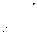

Ruhsuz duman, eskiden kervansaray olan kuruyemişçiler çarşısının konik kümbetleri altından hareket ederek tarihi binanın eşiğinden dışarıya süzülüyordu. Kervansarayın sonunda oturan birkaç hamal, yağlı tenekede ağaç yakıyor ve eğer cesaret ederlerse bazen de ellerini, Üzerlerindeki battaniyenin altından çıkararak çekirdek kırıyorlardı. Hemen arkalarındaki mezara benzeyen yerde duran kişilerse kuruyemiş makinesinde ay çekirdeği kavuruyordu. Duman ve sis birbirine karışmış, kar yağışı ise o an için durmuştu.
Gömeçli sobalar dahil tüm ışıklar yanıyordu. Kervansaray uzaktan sislere boğulmuş küçük bir köyü andırıyordu. Kuruyemişçiler çarşısının orta kısmına yakın “Muteber Kuruyemişçilik’’ dükkanında iki adam oturmuş, masa üzerindeki sobanın sıcaklığıyla ısınmaya çalışıyordu. Masanın arkasında “Orhan Orhani” vardı, hemen yanında ise “Bekçi Ayaz” oturuyordu.
Her Perşembe dükkana gelen Bekçi Ayaz içeride bulduğu en büyük sandalyenin üzerine oturur, ayaklarını da küçük taburenin üzerine atardı. Yaz kış demeden sürekli alnına düşen terleri silerdi. Oturmak için cüssesine uygun bir sandalye bulamayacak olsa koca bir çekirdek çuvalının üzerine adeta çökerdi. “Bu koca gövdemle şu küçücük sandalyeye nasıl sığarım canım?” derdi sürekli. İsterse, tüm o saygınlığına rağmen babayı bile rahatça iki parmağıyla kaldırıp tavandan sarkan çengellere asabilirdi. İri, tombulca bir yüzü vardı. Kafası ise yüzünün aksine biraz daha minyon görünümlüydü. Sol yanağı üzerinde çukurlaşmış duran yara onun da yüzünü diğerlerininki gibi kalıbı bozuk gösteriyordu. Dükkana her gelişinde mutlaka bir paket fıstık alırdı. Parasını almamak için her ne kadar ısrar etseler yine de minnet altına girmez, parasını öderdi. Aldığı fıstıkların içini çıkarıp yan yana gelecek şekilde masanın üzerine güzelce dizer sonra hepsini birden ağzına atardı. O zaman da Orhan yerinden kalkarak bir bardak soğuk su getirmek zorunda kalırdı.
Baba çok severdi onu. Hem şehrin en eski bekçisiydi hem de genel kültürü çok iyiydi, öyle ki bilmediği şey yoktu. Doğuyu da batıyı da avucunun içi gibi bilirdi. Çok zekiydi, işte bu yüzden baba onu sever ve onun için, “Bu adam normal biri değil” derdi. Her bayram akşamlarında ise evine en az on on iki kilo kuruyemiş yollamayı ihmal etmezdi. Haftalık ücretini de düzenli öderdi. Oysa baba öleli yıllar olmuş, haftalığını ödemek ise Orhan’a kalmıştı.
Dükkanın öte tarafında yani tezgahın arkasında iki genç çırak elleri ceplerinde, papakları başlarında, paltolarının yakasını kaldırmış fıs fıs konuşuyorlardı. Aynen Orhan ve Ayaz gibi, birbirine sokularak sessiz ve sakince ...
Ayaz, “Arkanda aslanlar gibi ben varım” dedi.
Orhan ne yapacağını bilmiyordu. Pireleniyordu. “Yukarıya tükürüp de yüzümüzü sıvamayalım’’ sonra dedi.
“Bitir artık bu işi.”
“Peki ama bir yerden patlak verecek olsa ne yaparım o zaman?”
“Patlak vermemeli. Dikkatli olmalısın. Tedbiri elden bırakmamalısın.”
Orhan bir an düşündü, ardından bakışlarını Ayaz’dan kaçırarak, “Yusuf gibi mi?” diye sordu.
“Ne o, birileri koku mu almış? Üzerinden yıllar geçti, en ufak bir pürüz çıktı mı? Yoo, işte görüyorsun.”
“Defalarca kardeş katili dediklerini aha şu kulaklarımla duydum.”
Ayaz, “Halt etmişler!” diye bağırdı sonra hemen ses tonunu eski haline getirerek, “Bu millet var ya bu millet, Allah’ın arkasından bile konuşur oğlum bunlar” dedi.
“Ayaz’cığım! Bu seferki kör bir kuyu; sonra baş aşağı olmayalım?”
“Söyle bakayım, ben babanın dostu muydum değil miydim? Sadece bunu söyle, hı?”
“Ya tamam dediklerin doğru ama... “
“Bana babanı hatırlatıyorsun. Hergelenin önde gideniydi rahmetli.”
Orhan elini kel başında şöyle bir çektikten sonra yüzünü gömeçli sobaya biraz daha yaklaştırdı, “Ben ne hergeleyim ne de gelgeç, her işi yapacak kadar cesurum alimallah!” dedi.
“Bana bu fahişeyi ne yapayım diye sordun, ben de boşa gitsin dedim. Kötü mü etmişim? Şimdi de o salağı ne yapayım diyorsun. Onun da icabına şimdiden bakmalısın. Yarın öbür gün kızı çıkıp da buraya gelirse sen artık esnaflığı mesnaflığı unut. Bir de bakmışsın ki kumral saçlı bir kız çocuğu gelmiş, beyefendi babamın dükkanı burası mı diye sana soruyor.”
Orhan sessiz kalmıştı.
Ayaz, “Olan olmuş artık, olay buraya kadar gelmiş geleceği kadar, daha fazla oyalanmanın alemi yok. Hemen şimdi yola koyulmalısın” dedi.
Orhan, “Bu havada mı? Nereye gidebilirim bu karda kıyamette?” dedi ve dışarıya baktı. Gökyüzü, yıllar sonra halkın ‘o kara yıl’ diye tabir edeceği yoğunlukta kar düşürmüştü yere. Halktan bazısı sığınacak yer bulmuşken bazısı da kar ve soğukla amansız mücadele ederek hayatını sürdürmeye çalışıyordu. Kar hayatı felç etmişti. Sokak ve caddelerde garip bir sessizlik hâkimdi. Su boruları donmuş, soğuktan arabalar çalışamaz hale gelmişti. Caddelerde kar kümeleri oluşmuştu. Esnaf kaldırımdaki karları temizlemişti temizlemesine fakat dün geceki yarım metreye yakın yağan kar hala yerde duruyordu. Dar sokaklardaki kar kalınlığı kapıların boyunu geçiyordu. Ahali, karın altından birbirine çıkacak şekilde açtıkları köstebek yuvasına benzer yolları kullanıyordu. Bela mı yağmıştı? Kim bilir, belki! Nice kışlar gelmiş geçmiş, nice karlar yağmıştı fakat böylesini ne gören olmuştu ne duyan. Kargalar ise şehri adeta istila etmişti. Her ağacın üzerinde kargalar vardı.
Evde de vardılar. Çitlerin ve sayvanların üzerine gönül rahatlığıyla konmuş, yer yer pervasızca kanatlanıp uçuyorlardı. Yüksek duvarları, kalın pencereleri ve çıkıntılı sekileri olan ev, soğuk ve ruhsuz kalmış, karlar altında unutulup gitmişti. Üst kattaki odaların tavanları şişmişti. Alt kattaki oda küf kokuyordu. Kimsecikler yoktu evde, ne bir ışık yanıyordu ne de birisi çıkıp damda birikmiş karları temizliyordu. Giriş kapısındaki lambanın karpuzu da kırılmıştı.
Bir zamanlar o evde un alıp hamur yapan ve mutfağın ortasındaki tandırda ekmek pişiren bir anne vardı. Sıcak ekmeğin güzel kokusuna karışan odun dumanı ocaktan dışarıya süzülürdü. Ekmekler piştiğinde ise anne altı adet ekmeği Sabir amcaya yollamak üzere bir beze sarardı. Aydın ile Orhan beş atlı faytona binerek Sabir amcanın evinin yolunu tutarlardı. Sabir amcanın eşi de ceplerini öteberilerle doldururdu tabii.
Bir zamanlar baba merdivenlerden aşağıya her inmek istediğinde yuvarlak korkuluklara tutunur ve saymaya başlardı. Yirmi, yirmi bir... Yirmi birinci korkuluğa geldiğinde başındaki papağı çıkarır, gardıroba asardı. Paltosunu ise üzerinden çıkarıp silkeledikten sonra dolaba bırakırdı. Pantolonunu ıslak mendille silerdi ama asmazdı. Sabahları giyindiğinde ütülü görünsün diye odadaki küçük döşeğin altına sererdi.
Bir de ‘Ayda’ isminde bir kız kardeş vardı. Bir mutfakta, bir kilerdeydi. Bir karton eskisi gibi büzülüp gidene kadar romatizma ağrıları çekti.
Artık o sessizliğe bürünmüş ve buz kesilmiş odalarda ceset gibi soğuk yorganın altına sıvışarak rahat uyuyacağını hayal edebilecek bir Orhan yoktu. Hayır, herkes ölmüştü. Ve bu sonuncusuydu.
“Her ne şekilde olursa olsun bu sonuncusunun da icabına bakmalı” dedi.
Ayaz, “Öyleyse ne oyalanıyorsun” diye cevap verdi.
“Nerede peki?”
“Her zaman olduğu yerde tabii, Tuzlu Göl Kahvehanesinde!” “Bu karda mı?”
“Arabistanlı değilsin ya oğlum! Erdebilli çocuk karla doğar, karla ölür. Hem belki ölmüştür ha?”
“Hayır, o yaşıyor, biliyorum.”
“Nereden biliyorsun? Koca on gün geçti. Hayatta kalmış olması imkansız!”
Orhan kendinden gayet emin, “Aydın hayatta, ölmüş olacağını hiç sanmıyorum. On beş yaşında bir kızının olduğunu daha dün öğrendim; aynı şekilde nüfus cüzdanının ellerinde olduğunu da. Eğer yaşıyorsa yarın binlerce davacımız var demektir Ayaz!” dedi.
“ Öyleyse ne duruyorsun hemen git. Arkanda aslanlar gibi ben varım. Sen hiç merak etme, en ufak bir pürüz çıkmaz. Sen bakma benim yaşlandığıma öyle. Ben hala o eski Bekçi Ayaz’ım...”
Orhan fısıltı halinde yükselen gömeçli sobanın sesine kulak kesilmiş, günün birinde mutlaka çıkıp gelecek o on beş yaşındaki kumral saçlı kız çocuğunu düşünüyordu.
Ayaz başını hafifçe öne eğerek Orhan’ın yüzüne baktı ve ona, “Kardeş, tez ol!”1 dedi.
Orhan sessizdi. Ayaz, “Eğer rahmetli babanın yerinde olsaydım Aydın’ı ta o şairliği tuttuğu ve başında kavak yellerinin estiği yıllarda sınıra bırakırdım; ne halin varsa gör, derdim” dedi.
“Baba... baba... baba... Baba ondan korkardı.”
“Sen de korkuyorsun. “
“Hayır, ben korkmuyorum. Kıyamıyordum sadece.”
“Geçen haftadan gitseydin şimdiye hiçbir sıkıntın kalmamıştı. Erkek dediğin gözü kara olmalı oğlum. Ya Allah dedi mi sonunu getirmeli. Nefes dedi mi çekmeli. Aksi halde ölür, ölü muamelesi görür.” Papağını başına giyindi ve ayağa kalktı. Paltosunun düğmelerini aşağıdan yukarıya doğru özenle ilikledi. Karşısında oturanı azarlarcasına, “Ne yapıyorsun?” diye sordu. Orhan kendine gelmişti. Başını kaldırarak, “Gidiyorum” dedi. Ayaz ayağını yere vurarak, “Aynen benim gibi, kalk git” dedi ve gitti.
Haftalığını almayı unuttu. Belki de istemedi. Orhan’ın aklı karman çorman olmuştu. Öyle anlarda insanı garip bir yalnızlık sarar zaten, sabahlar durmadan; hayretler içerisinde, ne istediğini ve ne yapacağını bilmeden. Aynen bir dağ gibi; ama o hal içerisinde durulabilir mi?
Orhan, kısa bir süre sonra, tamı tamına öğleden sonra saat ikide her gün yaptığı gibi günlük satış listesini her ne kadar o günün hesabını kapatmak istese de genel satış defterine geçiremedi. Kasaya giren banknotları zihin karışıklığıyla saydı ve pantolonun cebine indirdi. Satış ve müşteri defterlerini tezgahta duran abaküs hesabının yanına indirdi. Masanın çekmecesine koyarak kilitlemeyi unutmuştu. Oysa papağını unutmamıştı. Asla unutmazdı zaten. Yaz kış başında olurdu papağı. Dükkanda olduğu saatlerde masanın üzerine koyar, çıkacağı sırada da alırdı. Aldı ve başına geçirdi. Paltosunun düğmelerini ilikledi. Göz ucuyla dükkanı kolaçan etti ve çıraklara son bir iş vermeden, “Gidebilirsiniz çocuklar” diye seslendi.
Çıraklar sefer taslarını alıp çıksınlar diye bekledi. Bir an içeriden bir şey alması veya içeride bir şey yapması gerektiğini düşündü. Fakat her ne kadar etrafına bakındıysa ve hatırlamaya çalıştıysa da ne yapacağı aklına gelmedi. Gömeçli sobanın havasını aldıktan sonra dükkandan dışarı çıktı. Dükkan kapısını aşağıdan ve yukarıdan kilitledi. Etrafa göz gezdirdikten sonra kervansarayın eşiğine doğru yürümeye başladı. Cebinden beş Tümenlik kağıt para çıkararak kervansarayın ortasındaki basamaklarda oturan dilenci Marta’nın avucuna tutuşturdu. Parayı verirken, “Ne o Marta, it gibi titriyorsun, hayırdır, üşüyor musun?” diye alay edercesine sormayı ise unutmamıştı.
Yaşlı kadın, “Evet, hava çok soğudu” dedi ve elini peçesinin altına götürdü. “Allah bereket versin!”
Orhan geri döndü. Kervansarayın sonunda ateş yakmış hamalları gördü. Her tarafı duman sarmıştı. Kemerin altında duran fıstık ve çekirdek balyalarına işaret ederek İsmail’e seslendi: “Lan dangalak ateşperestler, eninde sonunda yakacaksınız oğlum siz bu kervansarayı; çok mu ısınmak istiyorsunuz, hı?!” Cevap filan beklemeden kirişlerin altındaki kokuşmuş ay çekirdeklerine baktı, çuvallara şöyle bir el gezdirdi. İsmail’e bakmaksızın; “Dükkana dikkat et, tamam mı?” dedi ve sol taraftaki kemerin altında birbiri üzerine istiflenmiş fıstık balyalarının olduğu yere ilerledi. Balyalar, bugün yarın küçük müşterilere gönderilecek, bayrama kadar da paraları gelecekti. Fıstık çuvalları üzerinde de el gezdirdi ve tekrar kervansarayın sonuna baktı. Şapkalarını yüzlerine doğru çekmiş hamallar Orhan’a baş selamı verdiler. Hepsinin gözleri sapsarı kesilmişti ve yorgun görünüyorlardı. Ağır adımlarla kervansarayın orta koridorundan dışarı doğru yürüdü. Derken birinin “Orhan Bey selam” dediğini duydu. Dönüp bakmak istemedi, sadece “aleyküm” demekle yetindi. Her kim olursa olsun, dedi kendi kendine...
Ne selam vereni tanıyordu ne de tanınmak istiyordu. Değersiz kişilerdi hepsi de, selamları da kendileri gibi olurdu. Tıpkı soğuk yeller gibi, adamın kulağının önünden vızıldayarak gelip geçerlerdi o kadar. Baba, “Yeller papağının içene girecek olsa savurur ha, ona göre, dikkat etmelisin!” derdi.
O zamanlar her şey güzeldi. Baba sağken düşüncelere dalmaksızın evin mehtaplı ortamında uyumak iyi oluyordu. Gökyüzü geceleri bile masmaviydi. Renkli rüyalar görebiliyordu. Gece yarılarına kadar anne ve Ayda’nın mutfakta bulaşık yıkarken çıkardıkları gürültü işitiliyor,
Aydın ise herkes uyusun da gönül rahatlığıyla kalkıp kitabını açıp okusun diye yatakta sağa sola dönüyordu. Kimi zaman kitapları yediğini düşündüğüm bile olmuştu; fakat sonunda kitaplar onu yemişti.
Gözkapaklarının açılıp kapanırken çıkardığı ses, düşüncelerinin sesiyle birleşince ta salonun sonundaki diğer odadan işitiliyordu. Kediler bahçenin yüksek duvarı üzerinde miyavlıyorlardı.
Baba, “Ne okuyorsun Aydın?” diye sordu.
Kesinlikle ders okuyor olmalıydı ki, “Ders okuyorum baba” diye cevap verdi.
“Oku bakalım oku, ne olacaksan!”
Caddeye varmış sayılırdı. Postallarındaki kardan, ayaklarını yere vurarak kurtulmaya çalıştı. Su kanallarındaki çürük portakallar döne döne suya batıyordu. Su hızla akıyordu ve gök kara bulutlarla kaplıydı. Durdu ve kuruyemişçiler çarşısının sonuna baktı Orhan. Kararsızdı. Ne yapacağını bilmiyordu. Dükkan işleri, öğleden sonraki müşteriler, tüm bunlar yetmezmiş gibi birde ‘Sucu’nun’ on gündür ortalıklarda olmayışı... Hepsi rahatsız ediyordu onu. Sabahtan gidip gitmemeye karar verememişti. Hatta dün geceden beri. Kalabilir miydi? Geceleri o buz kütlesi koca eve ayak basar basmaz duvarların yıllanmış hemdemi oluyor ve sessiz kalıyordu. Çam oluyor bahçenin ortasında duruyor, kapı oluyor açık kalıyordu. ‘Yusuf’ gibi aynen, kendi benliğine saplanıyor, hayretler içeresinde kalan gözleriyle de bir parça ceset oluyordu. Aydın evde hapsedildiğinde veya zincire vurulduğunda, “Sucu nerelerdesin sen yine?” demem yeterli oluyordu. Uzun paltosunu giyinmiş, atkısını boynuna dolamış, babanın eski papağını başına almış ve tıpkı bir alev topu gibi o koca delikten içeri süzülerek var olduğunu en küçük sessizlikle dahi olsa ilan ediyordu.
“Zincire vurma beni Orhan” dedi.
Ben de, “Orhan değil lan, ağabey’’ dedim ve çaktım suratına silleyi. Başındaki papağı yere düştü. Rahmetlinin eski papağını görünce yumuşadım. Bazen tokatlamak istiyorum onu bazen de yukarıdaki eyvanın korkuluklarına zincirlemeyi. Fakat o eski papağın altındaki güler yüzü beni bundan alıkoyuyor. Ne yaparsın işte? Anne; “Sende duygu, merhamet denen bir şey yok” dedi. Ben ise “var” dedim. Gerçekten de var. “Eğer sen olsaydın anne, senin de canına tak ederdi. Bir daha havuzunun suyu yemyeşil olmuş, avlusu çam kozalaklarıyla dolmuş, soğuk havanın, odalarının tozlu pencerelerinin ardında durarak içeriye giremediği, mutfak ocağının olur olmaz şeyler altında kaldığı bir eve adımını atmazdın. O bahçedeki su deposu içerisinde donup kalan kedi yavrusu var ya iki aydan beridir artık kucağa da geliyor. Bundan böyle, ‘Birisi gelip de şu hayvancağızı aşağıya indirsin’ diyecek durumda değilsin işte. Kimsede sobayı yakacak güç kalmadı. Duvarın kiremitleri tek tek düşüyor. Ev soğuk almış sanki. Kimse ortalığı süpürmüyor, misafir filan gelmiyor. Evin damında ölüm laleleri açmış. Boş kalmış odalar daha büyük görünüyor artık. Ayak seslerinin yankısı adamın beynine çekiç gibi iniyor. Nefes alış verişler zıngırdıyor. Hem artık öksürecek cesaretin bile kalmadı. Sanki beyninde dolanıyor insanın ve onu çember içine alıyor, değil mi? Tüm o hercümerçten geriye sadece çam ağacı üzerinde duran kargalar kaldı. Şimdi daha yaşlı ve daha bir semirmişler. Tek yaptıkları dallar üzerinde sürekli yer değiştirerek o kulağı tırmalayan sesleriyle, ‘Kar! Kar’ diye bağırmak sadece.”
Kaldırımlardaki kurumuş ağaçlara baktı: Kar, dalları alabildiğince bükmüştü ve ikinci kez yağdığında kesinlikle onları kıracaktı. İnsanlar da ağaç gibiydiler. Ağır bir kar kütlesi sürekli omzunda olurdu insanın ve diğer bahara kadar ağırlığını hissettirirdi onda. Kötü olanı ise insanın sadece bir kez ölmesiydi. Ve bu bir kereliğe mahsus ölüm ne de amansız trajedi sayılırdı onun için!
Elini paltosunun cebine götürdü. Dün geceden cebine koyduğu ipin düğümlü kısmını parmaklarıyla hissetti. Kalbinin derinliklerinden gelen huzurla kalabalığa daldı. Şekerlemecilerin bulunduğu dört yola geldiğinde gümüş kaplamalı koyun saatini cebinden çıkardı ve saatin kaç olduğunu anlamadan sadece eğreti bir bakış attı. Kapağını kapadı ve cebine geri koydu. Anne, “Aydın günden güne eriyor zavallı, bir şeyler yapmalıyız” diyordu. Hatta bir keresinde, “O Ermeni kız nerelerde şimdi? Belki de onun yüzünden bu hale geldi” demişti. Ben de, “Hayır anne, sadece kendini iyi hissetmiyor, yoruldu bunca zamandır. Onu Viladere’ye götüreceğim, sen hiç merak etme. Temiz hava alırız. İkimize de iyi gelir” dedim.
Dürüstkar Saatçilik’in önünden geçerken birden aklına bir an durup vitrine bakmak geldi. Belki hayatında binlerce kez geçmişti buradan ama bu sefer içinden Dürüstkar Efendinin yaptığı yuvarlak büyük saate daha dikkatli bakmak gelmişti. Kestane ağacından yapılma bir saatti. Akrep ve yelkovanı gürgendendi. Resimli, yuvarlak şeffaf camlarla süslü yarı eğik bir saatti. Her zaman vitrinle arasında en az on, on iki tane masa saati olurdu. Dürüstkar Efendinin yıllar önce kendi elleriyle yapmış olduğu çok güzel bir saatti; fakat otuz yıldan fazla bir süredir durmuştu veya Dürüstkar .Efendinin kalbi bir an için durduğunda ... Belki de saat durduğunda kalp de artık atmaz olmuştu. Kısacası her iki olay da aynı anda yaşanmıştı; ama tek farkla. Şöyle ki; Dürüstkar Efendinin kalbi tekrar çalışmış, çıkrık gibi işlemeye devam etmişti. Oysa saat öyle bir durmuştu ki tüm o maharet ve ustalığına rağmen Dürüstkar Efendi dahi onu tekrar çalıştıramamıştı. İbreler saat beş buçukta adeta kilitlenmişlerdi. 1947 yılının sıcak bir yaz gününde öğleden sonra saat tam beş buçukta... O günden bugüne bir daha da dönmemişti ibreler. Dürüstkar Efendi ise şimdi oturmuş o duran saati bir gün çalıştıracağını düşünerek elinde tuttuğu kol saatinin ayarlarıyla oynuyordu. Ardından hoş bir ahenkle öten guguklu saat, herkese, kişinin ne yapmak isterse başarabileceğini ispatlıyor gibiydi. Yeter ki doğa muhalefet etmesin! Bunları baba, Orhan’a söylemişti, o da başkalarına söylüyordu. Dürüstkar Efendi ise ancak saat çalıştığı zaman tek arzusu olmaksızın dükkanında yere yığılıp yer değişimi için ölüme teslim olabilecekti. Otuz yıldır şehir halkına bunu da söylemişti.
Baba, ‘‘Al sana büyük bir bedbahtlık daha’’ diyordu.
Anne: “Artık o divane hakkında tek kelime duymak istemiyorum!”
Gençlik yetilerim öylesine batmış ki artık pek çok şeye dayanamıyorum. Evin kapısını açar açmaz canlı bildiğim adamların hepsi o kıpır kıpır şamatalarıyla kaçmaya başlıyor. Ürperten bir sessizlik bedenimi sarıyor ve beni merdivenlerden yukarıya doğru çekerek, ahı gitmiş vahı kalmış tahta sedirin üzerinde duran ölü gibi çürük yorganın altında yatırıyor. İsınana kadar ise vakit gece yarısını buluyor. Yorgun ve hayallerle...
Öğleden sonraları dükkandan döndüğümde annemin odasına mutlaka uğrardım. Bir deri bir kemik kalmış, son nefeslerini çekiyordu. Hani burnunu sıksan işi biterdi. Üç kapısı olan alt kattaki odası sarımsak ve küf kokuyordu. Aynen tüberkülozlu birinin nefesi gibi. Sürekli çay içtiği bardak ve bardak atlığı da aynı kokuyu verirdi. Nasıl yudumlardı o çayları bilmiyorum? Yanı başında oturunca göz göze gelmemeye çalışırdım hep. “Merhaba anne” dedim. Ellerini avuçlarıma aldım ve hiçbir şey hissetmeksizin öylece okşadım ellerini.
Annenin gözleri kaybedilmişliğin son haddiyle tavana takılmıştı, yaşlı ağaç gövdesindeki kırlangıç yuvaları gibi. “Aydın... Aydın’ım nerede?” dedi.
Gözlerimi kapadım, halının gül desenlerine belki de hiçbir şeye bakmadan sadece gözlerimi açıp kapadım. Ben de onun Orhan’ı sayılırdım. Ama sayılmazdım. Elden bir şey gelmiyordu. Sonunda olmamayı kabul etmiştim. “Buralardadır anne” dedim.
Aniden başını çevirdi ve ellerini avuçlarımdan çekti. Kemik gibi olmuş beyaz elleri yatağın kenarında asılı gibi duruyordu. “Öyleyse onu hemen buraya getir! Anlıyor musun? Eğer sahip çıkamıyorsan getir karşımda zincirle onu” dedi.
“Nerede bulurum onu” dedim.
Kalkıp oturdu. Her geçen saniye taze güç almış gibi gösteriyordu kendini. Enteresandı. Bilmediğim bir yerde gücünü stok etmişti sanki. “Sen insafsızsın” diye bağırdı. Gözyaşları solgun yüzüne doğru akmaya başladı. “Kime çektin sen böyle! Nerede Aydınım” dedi. Sesi, kumaşın yırtılırken çıkarttığı ses gibiydi.
“Sen sinirlenme anne. Yeter ki kızma. Bu akşam bulur getiririm onu ben, söz veriyorum” dedim.
“Bana bak! Aydın şu an nerede?” diye sordu tekrar.
Enuşirvan Okulu’nun arkasındaydı oysa. On iki, on üç yaşlarında çocuklar bal arılarını kovalıyor, o da durmuş onları izliyordu. Ağzının suyu akıyordu. “Ne arıyorsun burada gulyabani?” dedim. “Öylesine gelmiştim” dedi. “Halt etmişsin. Bir daha görmeyeyim. Düş önüme” dedim.
Anne öfkeli ve endişeliydi. Kemik gibi kalmıştı, titriyordu. Ceketimin kolunu çekerek, “Nerededir? Sağır mısın? Duymuyor musun?” dedi.
“Oraya buraya gitmiştir, nerede olacak. Ya okulun arkasında ya o kahvede ya da Ahevan Parkı’ndadır” dedim.
Onca ağlayıştan sonra bir nebze de olsa sakinleşmişti; fakat sesi henüz titrek geliyordu:
“Çocuk mu ki? Yirmi dokuz yaşında koca adam!” “Kardeşimin kötülüğünü mü istiyorum! Yoo! Niçin her olan bitenden beni sorumlu tutuyorsun?” dedim.
Yatağına uzandı ve beyaz nevresimi göğüslerinin üzerine kadar çekti.
Nevresimi, avuçları içinde boğazımı sıkıyormuşçasına tutuyordu. “Başına ne getirdin bilmiyorum ama sana kardeşine sahip çıkmanı emrediyorum. Zaten senden bir beklentisi de yok. Bir lokma ekmeğe kanaat ediyor yavrucak’’ dedi.
‘‘Anne ne olursun söyleme, böyle konuşma’’ dedim ve ağladım.
“Öyleyse sat bir yeri veya kendi payından ver ona. Al bir yerlere götür onu
Ceketin cebinden babanın vasiyetini çıkarıp yüksek sesle okumak istedim; ama olur muydu bilmiyorum? “Anne söz veriyorum sana, alıp Tahran’a veya yurtdışına götüreceğim onu. Parasız bırakmayacağım. Yalnız izin ver, işler biraz yoluna girsin de öyle. Söz veriyorum... “ dedim.
Baba vasiyetnamesine; varisler hayatta oldukça hiçbiri, mülkiyetin tamamını veya bir kısmını yabancıya satamaz diye resmen eklemede bulunmuştu. Peki, kalan miras neydi? Kuruyemişçiler çarşısında mevcut bir dükkanın altıda biri, Şeyh Sefiyeddin Erdebili Caddesi Lord Sokağı No: 3 adresinde dört yüz seksen metrekarelik iki kadı bir ev ve Serdab’ın kuzeyinde bin iki yüz kırk metre kare genişliğinde verimli bir bahçe. Ayrıca sesi çıkmasın, kendisine herhangi bir itirazı olmasın diye kayısı bahçesini de anneye bırakmıştı.
Anne elindeki mendili gözlerinin üzerine koydu. Nemli yanaklarını sildikten sonra, “Sadece ortalıkta kalıp da perişan olmasını istemiyorum” dedi.
“Anne ne olursun böyle konuşma.”
“Ben öldükten sonra ne gelir başına Allah bilir?”
Hıçkırıklara boğulmuştu. Kalktım, eline bir bardak su tutuşturdum. İçebilmesi için yardım ettim. Bir yudum aldıktan sonra sırtını yatağın üzerindeki yastığa dayadı. Sessizliği adamı öldürüyordu. Bakıyor, gözlerini kapatıp açıyordu. O esnada insan gitsin mi kalsın mı ne yapacağını bilmiyordu. Fakat son günlerinde öncelere oranla huysuz ve asabi değildi artık. O büyük felaketin üzerinden tam bir yıl geçmişti, unutmuş sayılırdı. Hem alışmıştı artık. Ne feryat edecek hançeresi kalmıştı ne de durup bağıracak sinesi:
“Ne yaptın ona? Şerefsiz!”
“Ne yapabilirim ki anne? Ona ne kinim var ki benim?” dedim.
Feryat figan ediyor, göğsünü yumrukluyordu. Yanakları ve göz çukurları yaşla doluydu. “Allah belanı versin!” diyordu.
“Ne telin ediyorsun anne” dedim.
“Nasıl etmeyeyim. Gavur seni. Rahat yüzü göreceğini mi sanıyorsun sen? Sen...”
Derken matem havası giderek soğudu ve tüm o gailelerini unuttu. Bir gün Aydınla beraber kervansaraydan eve dönmüştük; bizlere nefis, harika bir dolma yapmıştı. Yemeğimizi yemiş sayılırdık. Astara yolculuğumu anlatıyordum: “Bir kez de Aydın’la beraber gidip Astara’nın o yemyeşil sığ ormanlarını görürsek fena olmaz hani. Duvarlardan sarkan ağaç çileklerini, dibi görünen o masmavi denizi görmek harika olur. Hem orada doksan yaşında bir kız var ki eğer Aydın onu ikna edebilirse, evlenmeye de hazır” dedim. Sonra Aydın bir ceset gibi yere yığılıp bir seksen uzandı. Onu alt kata götürmemiz için anne bizlere yardım etmişti.
“Aydın oğlum, önceki odana, Orhan’ın yanına gitmek ister misin?” diye sordu.
“Yine ne dümenler çeviriyorsunuz” diye cevap verdi Aydın.
Yatağına uzattık onu. Basamakları çıkarken, “Keşke bir daha hiç uyanmasa, onu böyle görmek istemiyorum artık, tüm o vakar, o kişilik, o sevecenliğe ne oldu böyle Allah’ım?” dedi anne ve başladı ağlamaya yine. Korkuluklara tutunarak yukarı attı kendini.
“Anne boş yere harap ediyorsun kendini? Acı mı çekiyor sanıyorsun? İnan ki dünyanın en bahtiyar insanı o, ne gamı kederi ne de zihnini meşgul eden düşünceleri var, ne kokar ne bulaşır, rahat mı rahat!” dedim.
İki basamak önümdeydi, güler gülmez dönüp suratıma öyle bir sille indirdi ki gözlerimin önünde kıvılcımlar çaktı. “Kime gülüyorsun lan, şerefsiz?” dedi.
Sesi babanın dişli sesi gibi sert ve soğuktu. Bir anda duvarların çatladığını ve çatlakların çatır çatır tavana doğru ilerlediğini düşündüm.
Çatlaklık çocukluk döneminden başlamıştı. Ayda’nın ölümünden sonra hayatımız, kimsenin önünü alamadığı veya almak istemediği ölüm şarampolünde yuvarlanan koca bir çığ kütlesine dönüşmüştü. Bu yaramaz ve salak kardeşi omzuma alıp faytonlara bindirerek oraya buraya götürmek de benim kaderimdi sanki. Oysa kendini o kadar gözü tok gösteriyordu ki sadece ben değil, baba bile elinden elaman etmişti.
Demir kamyonun bile içini dışına getiriyordu. Duvarlardan aşağıya inmiyor, herkesi alaya alıyordu. Anne ve babaya ise bir türlü anlatamıyordum, bu çocuğun önünü alın, diye. . . İşte o yüzden başımı defalarca duvarlara vurmuştum. Birisi çıkıp da yardımıma gelsin diye çok ağlamıştım... Bir gün duvara dayadığım bisikletimi almış havuzun etrafında turluyordu. Görenin başını döndürecek kadar hızlı dönüyordu. Haşere ilacı içmiş gibi. Ne günah işlemiştim de baba ona bisiklet almıyordu? Büyük salondan bağırdım: “İn bisikletimden!” Kahkahalarla daha hızlı dönmeye başladı. Avluya çıktım. Çökerek bir köşeye, bayılana kadar ağlayıp başımı duvarlara vurdum. Baba salonda karpuz yemekle meşguldü. Başımı yerlere çarpmayana kadar yerinden kımıldamadı. Başımdan kanlar aktıktan sonra aşağıya indi ve Aydın’ı enselediği gibi o kadar dövdü ki üç gün boyunca başını çeviremedi. Anne bir taraftan bana bir taraftan da babaya beddua ediyordu. Ne sevgisi varsa hepsini Aydın’a vermiş, tüm benliğini ona adamış şefkatli bir anne. Bir kez olsun “Orhan’ım, yavrum” demedi bana.
Gündüzleri Pervane Fabrikası’nın etrafında düşüp kalkalım diye bizi evden kapı dışarı ediyorlardı. Bizler de etrafı tel örgülerle çevrili büyük bir dere yatağında bulunan fabrikanın sokağına giderdik. İki kanadı ahşap kapısı rüzgarla gidip rüzgarla geliyordu. Tozu dumanı bol, yokuş aşağı olan bu yol fabrikanın ana binası önüne kadar uzanıyordu.
Her zamanki gibi durduk orada ve sokağın başından aşağıya baktık. Fabrika hur hur ediyor, baş döndürücü hızla pervane üretiyordu. Çevrede birbiri üzerine gelişigüzel atılmış kırık kanatlara bakıyorduk.
“Gidelim mi?” diye sordum ona.
“Hadi kim önce varırsa” dedi.
Ve koştuk. Yokuş aşağı yoldan salıverdik kendimizi. Elimizdeki çantalar ağırdı ve ne tarafa savrulacak olsa bizi kendiyle beraber o tarafa çekiyordu. Fabrikanın sesi o kadar çoktu ki insanın bağırası geliyordu. Birbirimizi duymuyorduk, çok terlemiştim ve hızla koşmaya devam ediyordum; ama bir türlü Aydın’a yetişemiyordum. Ayaklarımın birbirine dolanacağını bildiğim halde kendimi bıraktım. Ansızın baş aşağı yuvarlandım. “Ferman Efendi” küçük pencereli odasından çıkıp dışarı geldi. Ayakta durarak bana baktı, yüzüm kan revan içinde kalmıştı. Gözyaşları da cabası tabii. Ayaklarım ağrıyordu. Bedenime uyku sirayet etmişti sanki. Sevinçli ve memnun bir halde, atıl pervanelerin kırmızı renkli güzelim kanatlarıyla oynayan Aydın’ı zar zor görebiliyordum...
Baba kemerle onu dövüyordu. Anne yüzümdeki yaraları sarıyordu.
“Ne zamana kadar haylazlık? Niye bu kadar uğursuzsun sen?” diyor ve dövüyordu.
Anne o gece burnumdan akan kanı durduramamıştı. Baba Aydın’ın kulağını sıkarak, “Burnunu kırmışsın görüyor musun? Bak...” diyordu.
Aydın, “Ben kırmadım. Yalan yere beni suçluyorsunuz işte” diye cevap verdi.
Baba kulağını sıkmayı bıraktı, aynı kulağın üzerine tokadı indirdi.
Aydın, “Burnu kırıldığı için içim parçalanıyor ama benim bunda ne suçum var?” dedi.
Diğer gün baba eve doktor getirdi. Fakat bir faydası olmadı. Şu anda kırk yaşındayım, hâlâ burnumun bir tarafı diğer tarafından iki kat büyük görünüyor.
Koyun saatini çıkardı, bakıp tekrar yerine koydu. Gidip gitmemeye henüz karar verememişti. Geceye kalmaktan korkuyordu. Adet edindiği üzere paltonun yakasını kaldırıp iki tarafını birbirine yaklaştırdı, düğmelerini iliklemeksizin olduğu yerde bıraktı sonra. Elini paltonun cebine götürdü. Cebinde duran kalın ipliğin düğüm kısmını hissetti tekrar. Yüzüne sıcak bir heyecan yayılmıştı. Atardamarlarında safi bir özgüven duygusu akmaya başladı. Hayır, mutlaka bu işi bitirmeliydi. O zaman katil diyecekler adına. “Kardeş katili” diyen kimdi! Hı? Yersiz töhmetleri özledim anne, neredesin? Günahlarımı üstlenip yükümü hafiflet anne! Ama Tanrı’ya yeminler olsun ki yararına olacaktır. O öleli yıllar olmuş zaten. Ya Göl Kahvehanesi’nde veya tuzlu çöldeydi. Ne fark eder ki her yerde ölüm kokmuyor muydu? Geçmişlerinde tükenmiş kuru bir heykel gibi. İkinci savaşın ödevini henüz unutmamıştı.
Etrafına baktı. Herkes kendi işindeydi. Yaşlı bir kadın karşıdan karşıya geçmek istiyordu ama geçemiyordu. Genç bir çocuk elinde kömür parçalarıyla koca kardan adama göz yapmaya çalışıyordu. Bazıları başlarına naylon geçirmişti. Kara çarşaflı bir kadın geçiyordu yakınlardan, başına düşen karlar Demavendin2 zirvesini andırıyordu. Etraf köylerden geldiği her halinden belliydi. Orhan ise almış başını yürüyordu. Görünmez bir güç onu şehir dışına, Tuz Gölü Kahvehanesi’ne doğru çekiyordu. Öylesine yavaş ve düşünceli adımlar atıyordu ki gören de işsiz güçsüz bir adam vücudunun yağları erisin diye karda yürüyüş yapıyor sanırdı.
Kendime hakim olamadım. Her zaman olduğu gibi bir derdi daha sineye çekemezdim. Bağırdım. “Sen ne anlarsın aptal herif? On iki yıldır bu kahrolası yerde dişini canına takan benim” dedim.
“Ben burada başçavuşun beygiri miyim ki sana kalkıp hizmet edeyim?” dedi.
“Sen değil, senin gibi on tanesi benim dediğimi yapmak zorunda tabii, marangoz parçası!” dedim.
Yine her zamanki gibi işaret parmağını sallayarak, “Bana bak! Ne yazık ki mecburum, ne yazık ki bu kahrolası işi bırakıp da marangoz olamıyorum. Vicdanım...” dedi.
“Olmayan şeyden söz etme lütfen!” dedim.
Pes etti. Gözlerini yumdu ve sandalyeye oturdu. Hangi damarına basacağımı iyi biliyordum. Onun için, “Baba senin nasıl bir yaratık olduğunu iyi biliyordu, boşuna adını ‘soysuz’ koymamıştı!” dedim.
“Eğer bu hakaretlerle vazgeçeceğimi sanıyorsan yanılıyorsun. Babanın vasiyeti gereği burada olmak durumundayım, anlıyor musun? Ne payımı satarım ne de başkasının payını alacak kadar param var!” dedi.
“Benimle alay mı ediyorsun sen? Şimdi gösteririm sana!” dedim ve ayağa kalktım. Vurup bir tarafını kırmak istiyordum. Tam o sırada İsmail girdi içeriye. Kapıyı çekerek, “Yine birbirinizin canına mı düştünüz siz ikiniz yahu?” dedi.
Geçip masaya oturdum. İsmail, “Orhan Abi, ne de olsa sizden büyük hani!” dedi.
Öfkeyle masaya vurdum ve “Eşek bile benden büyük ama eşek eşekliğini yapar, kimse de ona ses etmez” dedim.
İsmail, “İki kardeş arasında olur mu böyle şeyler canım?” dedi.
“E... Böyle kardeşliğin içine” dedim. Bu lafın üzerine Aydın dükkandan çıkıp gitti. Aslında ona acıyordum. Fakat ona iznim olmadan mal almaması gerektiğini başka türlü anlatamazdım. Kırk çuval fıstık almıştı. Eğer birkaç gün sabretseydi aynı malın kilosunu beş, yedi ya da on Tümen daha ucuza alacaktım. Havalar gittikçe ısınıyordu, yazın ortalarına doğru mal alması gereken bendim. Oysa o bir türlü bunları anlamak istemiyordu.
Aynı gece bu sefer de anneyle curcunamız vardı. Anne, “İyi pekâlâ, hesap kitabınızı çıkarırsınız, ne ederse paylaşırsınız. İki terazi, iki masa... İki ayrı dükkânmış gibi davranırsınız siz de olur biter” demişti.
Sesimi çıkarmadım. Sabaha kadar uyumadım. Bu işin üstesinden nasıl gelirim diye düşündüm durdum. Anne hiçbir çıkış yolu bırakmamıştı ki! Yarı yarı diyordu, her şey yarı yarı... Öyle olsa hâlim ne olur benim hı? Hâlimi soran olur muydu? Bütün müşterilerim on iki yıldır bu işle uğraştığımı bildikleri hâlde doğruca gidip ondan yani müstakbel ağabeyimden alışveriş yaparlardı. Neden? Yaşça ondan küçük olduğum için beni onun çırağı sanacaklardı da ondan. Daha kötüsü de onu görür görmez su olup eriyen o alçak kanlardı. Şalvar ve çarşaflarıyla gelirlerdi dükkana, onu görünce de Allah’ı, peygamberi unuturlardı. Başlarlardı cilve yapmaya:
“Aaa, sizin gibi birinin henüz evlenmemiş olması biraz tuhaf değil mi?”
Oysa koltuğunun altında ne taşıdığını bilmiyorlardı.
“Ermeni kızıyla ne işin var senin?” dedim.
“Seni ilgilendirmez. Sen karışma” dedi.
Kasvetli bir ikindi vaktiydi. Mezarlığa gittim. Babanın mezarının başında oturup ağladım. “Baba” dedim, “beni neyden, onu neyden var ettin Allah aşkına! Kadınlar neden bana değil de ona bakıyorlar? Neden beni görünce somurtmaya başlıyorlar? Neden dünyanın en güzel kızı kardeşime aşık oluyor da bana değil? Hamurumuz bir. Değil mi?”
Babadan ses seda çıkmıyordu. Hani öksürmek istese dahi öksüremez türden bir sessizlik olur ya işte onun gibi bir şey. Ağaç dallarında kargalar vardı. Hızlı esen rüzgar gözlerimin içine toz dolduruyordu.
“Nikahı nasıl kıyacaksın? Ermeni ile nikah mı olurmuş? Müslüman!” dedim.
“Sen karışma, seni ilgilendirmez” dedi. Kızın çantasına fıstık doldurdu. Ağzını kapattıktan sonra, “Artık gitmelisin Surme” dedi. Ben ise o yalvarırcasına bakan sarı gözleri gördükçe su olup eriyor, ölüp ölüp diriliyordum. Geceleri uyuyamıyordum. Bir damla uyku haram olmuştu bana. “Tanrıya and olsun birader, öldüreceğim seni” diyordum içimden...
Bir süre sonra anne tekrar, “Aydın’ım nerede?” diye soruyordu. Genelde güzel dikilmiş fiyakalı takım elbise giyip kravat takan, sinekkaydı tıraşı olup seyrek bıyıklarıyla dolaşan kişiyi kastediyordu. Anne onun bu halinden adeta vecde geliyor ve tebessüm ederek, “Maşallah, bin bir kere maşallah! Görenin gözü gönlü açılır!” diyordu. Şimdiyse kalkmış, ‘‘Aydın’ım nerede?” diye soruyor. Sen neden bilmiyorsun nerede olduğunu? Ya Göl Kahvehanesi’ndeydi ya da Ehevan Parkı’nın harabe duvarlarının arkasında... Bazen hamallarla beraber kervansarayın sonunda bir ateş tenekesinin başında çekirdek kırıyordu veya onlar kırıyor o da ikinci savaşın haberlerini naklediyordu.
Anne, “Her neredeyse git bul onu” dedi.
Fakat bu kez isteyen anne değildi. O artık şehrin kadim mezarlığında, babanın hemen yanı başında, toprak ve kar yığınları altında uyuyordu.
Cadde soğuk ve kirliydi. Sis ve pelte gibi olmuş duman şehir üzerinde adeta deviniyordu. Orhan bir an dönüp arkasına baktı. Tüm o duman, kuruyemişçiler çarşısı olan kervansaraydan hareket ediyor, havada depreşip gidiyor gibiydi. Bir an gidip onlara, alaz alaz yanan ateşi söndürmelerini veya bir şekilde kontrol etmelerini söylemeyi düşündü. Kıştır?
Kış olsun. Buralar sürekli kış. İşlerini görecek bir soba alsınlar veya boru taktırsınlar. Parasını o verir. Ama düşüncesinden vazgeçti. Yoluna devam etti. Kaldırımda yürümeye devam ederek şehirden uzaklaştı. Artık ne kimsenin omuz çarpması, ne el arabalarının ayağına dolanması, ne de bir çocuğun elinden çıkacak kartopunun ensesinde patlama tehlikesi vardı. Sürekli başı önündeydi, bedeni ise ağır, bu yüzden kartopları ister istemez boynunun arkasına isabet ediyordu.
İki katı kar yağmıştı ve daha da yağacağa benziyordu. Bir araba veya fayton durur da biner umuduyla kendini caddeye atıverdi. Ama o aman vermeyen kar hayatı felç etmişti. Görünürlerde kendini en yakın yere ulaştıracak ne bir araba, ne bir fayton, ne bir bisiklet ne de başka bir vasıta vardı. Zincir takmış ağır ağır hareket eden bir devriye cipi karlarla kaplı yoldan geçti ve geride yılan şeklinde iki benzer iz bıraktı. Şimdi ne yapacaktı? Kahvehane arabayla yarım saatlik mesafedeydi. Ama bu karda kıyamette yürüyerek oraya gitmeye kalksa karanlık basar hatta saat gece yarısını bulurdu. En iyisi kendi karanlığında kalmasıydı. Hem orada daha az acı çekiyordu. Kimse bir şeylerden şüphelenmiyordu. Peki, dönebilir miydi? Kalsa ne olurdu? Hayır. Zamanında ulaşırdı. Varsayalım ki geceye kaldı. Ya kurtlar parçalardı onu veya parçalamazdı. Canı cehenneme, ne olursa olsun! Şeyh Sefi Caddesi’nin sonuna gelmiş sayılırdı. Sola döndü ve yoluna devam etti. Annenin pas bağlamış soğuk sesi, nefes darlığına katlanarak aldığı her solukta kulağından eksik olmuyordu. O kaçığı bulmazsa ne olurdu? Hayır, mutlaka bulacaktı. Hem de o kahvehanede. “Bulacağım onu anne, söz veriyorum.” Bu kez kendi kendine söz vermişti ve bu sonuncusuydu.
Şehirden uzaklaştıkça kafasındaki kargaşalar daha da artıyordu. Karda koşan herhangi biri olmaksızın veya yüzükoyun uzanan yaşlı bir adam... Artık hamallar bile teneke içinde ateş yakmıyordu. Karşısında hiçbir canlı türünün geçmeye cesaret edemediği geniş ve beyaz bir vadi duruyordu. Göğün bir tarafı koyu maviydi, şehrin son ağacının kuruyan dalları üzerine konmuş bir karga “kar, kar” ötüyordu.
Yakasının iki tarafını yukarı kaldırmış, yaşlı bir tosbağa gibi karlarla dolu boş araziye adımını attı. Her zamanki gibi ağır adımlarla ilerledi. Seri ve süratli değil, alışkın olduğu üzere yavaş hareket ediyordu ve yolu iyi biliyordu. Çünkü defalarca bu yoldan gelmiş ve onu Göl Kahvesinde bulmuştu. “Ne arıyorsun burada gulyabani?” dedim.
“İyi de bizim de bir canımız var hani. Gezmeye dolaşmaya ihtiyacımız var, bir yerde oturup iki bardak çay içemeyecek miyiz yani?” dedi.
“Kes sesini. Yürü, çayını kervansarayda içersin” dedim.
Elindeki gazeteyi sardı ve cebine koydu.
“Çayı da içmeye değer bir yerde içmeli ama” diye cevap verdi.
“Cenazeni yıkarlar inşallah! Anamı ağlattın benim!”
Hava güneşliydi, karşıki tepede koyunlar otluyordu ve uzaktan kentin gürültüsü duyuluyordu. Arabaya binmesi için elimle işaret ettim. “Hayır, binmiyorum” dedi. “Ne demek binmiyorum?” dedim.
“Dadaş, gel biraz gezelim. Arabada fenalaşıyorum, ne dediğimi bilmiyorum” dedi.
“Cehennemin dibine kadar fenalaşıyorsan” dedim ve indirdim tokadı suratına. Başka çarem yoktu. Bir şekilde onu korkutmam gerekiyordu. Öyle bir anda bırakılır mıydı? Kahveci Abbas, “Koskoca adam, ne de olsa büyüğündür, yapma” dedi ama fayda etmedi ve ben ikinci silleyi de indirdim suratına. Arabanın arka koltuklarına uzanıverdi. Titreyen elleri ve köpüren ağzıyla kervansarayın önünde indirdim onu. Gözlerinin siyahlığı kaybolmuştu. Kervansarayın girişinde yere uzattım onu. Hamallardan birisi, sanırım İsmail, çuvaldızla düştüğü yere yani bedeninin etrafına çizgi çizdi. “Bu da ne diye?” sordum kendisine.
“Hastalığı yerde kalsın bir daha da yerden kalkmasın diye böyle yapıyorum” dedi.
“Ha, şu benim mantar gibi. .. “
Boğazımda çıkan mantarı hatırladım. Beş riyallık sikke büyüklüğünde kuru bir mantardı. Etrafını mavi kalemle çizdim. İki üç gün sonra kuruyup gitti ve bir daha da çıkmadı.
Hamallardan biri Aydının yüzüne su döküyordu, diğeri de bacakları üzerine çömelmişti. Başına soğuk su döktükten sonra uykudan uyanmış gibi kalkıp oturdu. Pantolonun arkasından eski bir gazete parçası çıkarıp okumaya başladı:
“...Diğer gün şehzadeye; hasretinizden Aybegüm’ün yüzü sapsarı kesilmiş, ölüm kuşunun avlusuna konmasından endişe ediyoruz, gelin de ateşten gömlek giyenlerin halini görün, şeklinde haber getirdiler. Şehzade, ne yapmam gerektiğini narenciyeden sorun, dedi. Sordular. Narenciye açıldı ve o sütbeyaz baldırlı, kızıl örtülü sevgilinin gemisi şehzadenin limanına çengel attı. Gönlünü şehzade çaldı ve Aybegüm; buldum, işte buldum, dedi. Su akar yatağını bulurmuş. Bu mülk o sütbeyaz baldırlıya yaraşır ki artık benim padişahlığımın da sonuna geldik... “
Bir de baktım ki hamallar alttan alta bana gülüyor. Sanki onca saçmalığı ben söylüyormuşum gibi.
“Tamam, tamam yeter fazla uzatma. Kalk git de içeride çekirdek kır” dedim.
“Eee, çekirdek, çekirdek, ne zamana kadar çekirdek? Dadaş, gece gündüz neden yirmi dört saattir?” dedi. Ağzından henüz salya akıyordu, üzeri de hâlâ ıslaktı. Pantolonunun paçasını kaldırdı ve başka bir gazete çıkardı sonra kalkıp kervansaraya gitti. Sırtımı yere getirmiş gibi yol yürüyordu ve ben gece gündüzün neden yirmi dört saat olduğunu bilmiyordum. O ise hep bu tür şeylere kafa yoruyor ve üzerinde sürekli kâğıt parçaları ile gazete bulunduruyordu. Kemerinin arkasında da. Gazeteleri baştan sona okuyor, en ince ayrıntısına kadar savaşla ilgili haberleri aktarıyordu:
“Verdikleri sayıya bakılırsa ölü ve yaralı binlerce Alman askeri var, ordu bozguna uğratılmış. Gözlemciler Almanya’da bir tek kişinin sağ kaldığını düşünüyorlar. O da Hitler. Fakat bunun asparagas haber olduğu her hâlinden belli. Sevgilisi de yaşıyor.”
Gazete satırlarını sessizce, sadece gözleriyle takip ediyordu; gayet ciddi bir edayla. Bilmeyen de okuyor sanırdı. Oysa söylediği her şey ezberdi; herhangi bir gayret sarf etmeksizin, zahmetsiz, mesaisiz. Alemin esrarında helezon gibi sağırca ve duraklayarak dönüyordu. Gece gündüzü bir kâse yoğurt çorbasıyla geçiriyordu. “Sucu! Çorban soğudu, gel iç sonra devam edersin okumaya” diyenlere, “Yahu bir durun. Daha başlıklardayız, asıl metne gelmedik bile” diye cevap veriyordu.
Orhan dizlerine kadar karlara batıyordu. Paltosunun ucu karda sürünüyordu. Ne garip bir yalnızlık! Baba, insanın kendi odasındayken yalnız kaldığını sanıyordu. Oysa yalnızlığın sadece kalabalıkta hissedilebileceğini bilmiyordu.
“Baba, ben yıllarca zahmet çektim. Herkesi aynı keseye koyma. Fıstık çuvallarını aha şu omuzlarımla kırk basamak aşağılara indirdim” dedim.
“Sizin kötülüğünüzü istemiyorum” dedi.
Aydın liseyi bitirip diplomasını alınca anne, “Orhan, gel kardeşinin mezuniyet tatlısından ye” dedi.
“Gece gündüz bir elimiz tatlıda bir elimiz yemişte, hem sanki çok mu marifet yani liseyi bitirmek’’ dedim.
“Marifet değilse sen niye bitirmedin?” dedi.
Doğru bitirememiştim ve annenin sorusuna verebilecek cevabım yoktu. Baba, “Orhan sekizinci sınıfa kadar okudu, okuma yazmayı biliyor, yeter ona, ne yapacak fazlasını” dedi. Evet, okuma yazmayı iyi biliyorum.
O yıl, kargaların yılıydı. Allah’ın karakargaları şehre tebelleş olmuştular. Anne günde üç dört kalıp sabun buluyordu. “Haram valla, hangi bedbahtın olduğunu nereden bilelim, belli değil ki” diyordu.
Baba, “İşte buna göğün ziyafeti diyorlar, yıka babam yıka, yıka babam yıka... “ diyordu.
İpteki beyaz çarşaflar tertemiz olmuş, kandil gibi parlıyordu. O donuk mavi renkler beyaz çarşaflar üzerinde sallanıp duruyordu. Eğer güneş olduğu gibi onları kurutmazsa yağmur suyuyla mutlaka yok olup gideceklerdi. Fakat çarşaflarımız her zaman için bembeyazdı. Üzerlerinde birkaç mavi çizgi görünüyordu ama... Aydın pencerenin kenarında uyuyordu. Şamdanlıklarını da pencerenin kenarına koymuştu. Her zaman olduğu gibi bardağın altında kalan suyu saksılara döküyordu.
“Ben neden pencerenin kenarında uyumuyormuşum?” dedim. Anne, “Sen oradan da göğü görebiliyorsun da ondan” dedi. Evet görüyordum. Kargalar kanat çırpıyor, çam ağacından çınar ağacına konuyorlardı. Odamızdan çıkan duman yuvalarına kadar yükseliyordu. İşte o zaman “kar, kar” ötmeye başlıyorlardı.
Şehirden iyice uzaklaştıktan sonra daha bir endişelenmeye başladı. Bir an, “Dönsem mi acaba? Ama yoo” diye söylendi kendi kendine.
Yeniden yağmaya başlayan kar yerdeki eskilerini örtüyordu. Arkasına baktı. Şehir soğuk ve siste kaybolmuştu. İçi harf, ses, sessizlik, ölü ve diriyle dolu olmasına rağmen konuşamayan eski bir gazete gibiydi... Orhan’ın asla fırsat bulup da okuyamadığı bir gazete gibi. Onu düşünecek zaman değildi, şimdi daha bir iştiyakla onu arıyordu. Bu nem kapmış eksik bilgisiyle gasilhaneye benzer bir ev, yatacak bir yer ve kaçık bir kardeş arıyor, mezarlıkta uyuyan sevdiklerini düşünüyordu. Ne bir eş, ne çoluk çocuk, ne aşk, ne de onu teneşire uzatacak birisi var... Cebinde tuttuğu elleri soğuktan veryansın ediyordu, ayak tabanları ise soğuğu hissetmeyecek kadar uyuşmuştu. Başındaki papağını çıkardı, elini saçsız başının orta kısmında tuttu. Başının sıcaklığında soğuk dalgalar devindi. Bir an durdu. Etrafa iyice baktı. Görünürlerde beyaz tepeciklerden başka bir şey yoktu. Artık daha fazla yalnızdı. O anda Aydının tüm o kısa zaman sürelerinin kıymetini daha iyi anlıyordu. Enteresan geliyordu ona, son on gündür Aydın’ın boşluğunu daha fazla hissetmişti. Kaçık Aydın! Zararsızdı; ama artık gereğinden fazla yormuştu onu. Bulacağı zaman ona ne yapacağını bilmiyordu ama onu görmek istiyordu. Belki de onun kervansarayda olması zaman geçirmek için iyi bir vesileydi, kim bilir? Geceleri üst kattaki odada uyuduğumda bir başkasının da alt katta uyuduğunu biliyordum. Okuryazar, kültürlü ama boş ve manasız bir adamın...
“Parayı ortadan bölen adam bence delidir” dedi. Bir zamanlar koskoca bir adam olduğunu hatırlamıyordu. Forsluydu, saygın kişiliği vardı. Binlerce göz üzerindeydi. Oysa o Ermeni kahvecinin kızı için acınacak hale gelmiş, kendini heder etmişti. Aralarında nasıl bir ilişki vardı bilmiyorum ama her öğleden sonrası “Soren Kahvecisi” önünde kuyruk sallamaya çıkardı.
“Onu çok mu istiyorsun?” dedim. “Kimi?” dedi.
“Müslüman et, al onu. Et ki nikah caiz olsun oğlum. Hem Ermenilerin çok tutucu olduğunu söylüyorlar, doğru mu?” dedim.
Aşk elinden biçare olduğunu sonraları öğrendim. İkindiüstü gelip kitap okumakla vakit dolduruyordu. Geceleri ise ikiye üçe kadar ya yazıyor ya okuyordu. Babanın her şeyden haberi vardı.
“Baba” dedim, “ya alırsa onu, ya evlenirse onunla?”
“Alsın, Ayda gibi o da iki dünyasını beş paralık etsin. Zaten ikizler. Belli olmuyor mu?”
Ermeni kızlarının çok tutucu ve muhafazakar olduğunu biliyordum ama Aydın’ın günün birinde karnını buruna getireceğinden de emindim. Fakat sesimi çıkarmadım, ona da tahammül ettim. Tıraş oluyor, saçlarını tarıyor, parfüm sürünüyor, fiyakalı elbiseler giyiniyor ve kravat takıp gidiyordu.
Baba, “Medeniyet kuyruğu” diyordu.
Şimdi ise hepsini unutmuştu Aydın. Dişleri dökülmüş, rengi solmuş elbiseyle kervansarayın bir köşesinde oturuyordu. Olsa bir türlü olmazsa bin türlüydü artık. Millet arkasından bin türlü laf ediyordu.
Hayır, böyle olsun istemiyordu. Bir ölüm haberini getirseler, yüz akıyla kefenleyip defneder, yedinci ve kırkıncı günlerinde hatim indirtir, ölüm yıl dönümlerinde de mevlit okuturdu. Şehirdeki tanıdık tanımadık herkese yemek yedirirdi. Taziye çadırının girişinde bekler, eline aldığı mendille yüzünü kapatır, zarı zarı ağlardı. Herkes onun Aydın’ı ne kadar sevdiğini görsün diye gözünden yaş eksik etmezdi.
Ne yapmalıydı? Adımlarını atmaya başladı. Dizlerine kadar kara battı. Ayağı burkulmuş katır gibi olduğu yere saplandı. Ne de olsa genç değildi artık. Çifte atacak güç kalmamıştı ayaklarında. Kırkını doldurmuştu ama ellisinde görünüyordu. Bir ev, kuruyemişçiler çarşısında bir dükkan ve bir kayısı bahçesi; o kadar.
Baba, “Kişi zengin olduğunda, yaşı ne olursa olsun fark etmez yaşlandığını hisseder” diyordu.
“Öleceğini hisseder baba” dedim.
İmdi öyle bir kar yağmıştı ki sadece onu değil, tüm şehri sekteye uğratmıştı. Sokaklar çamur ve kar doluydu. Kanallardan su akıyordu, kuruyemişçiler çarşısı ise ölüm sessizliğine gömülmüştü, şehir kar altın da ölmüştü sanki.
Kervansaraydaki hamallar teneke içerisinde yaktıkları ateşin etrafında oturmuş çekirdek kırıyorlardı. İslak kuru, yanan ağaçların dumanı tüm binayı sarmıştı. Sucu elinde gazete bir şeyler okuyordu. Başındaki papağın kulakçıklarını indirmiş çenesinin altında duran bağcıklarını düğümlemeye çalışıyordu. O uzun boyu, Tatar suratına benzeyen zayıf yüzü ve o güzelim siyah gözleriyle hamalların etrafında fır dönüyordu.
Eşim, ‘‘Aydın nerede?” diye sordu.
Baba hayattayken Aydın kahverengi takım elbisesini giyer, bıyıklarının ucunu kıvırır, eline de iki kitap alırdı. “Baba, malınızda servetinizde gözüm yok, ben gidiyorum.” “Dönmek için yalvaracaksın!” dedi baba.
Her ikisi de birbirinden kuru kafalı, birbirinden inatçıydı. Baba onu özellikle ahlaki yönlerden köşeye sıkıştırmaya çalışıyordu.
‘‘Aydın, namazını neden kazaya bıraktın?” dedi.
“Geç uyudum, onun için kalkamadım” dedi.
“Neden babacığım, neden geç uyudun?”
“Ders okuyordum da ondan”
Baba birdenbire kükredi, “Namazı bu zırva işlerine feda mı ediyorsun?” dedi. Soğuk bir kırbaç gibiydi sesi.
“Bugün cuma gecesi, kalkın da abdest alıp namaz kılın, Kuran’dan da bir süre okuyun” dedi.
Hemen tuvalete koştum. Güzelce abdest aldım. Babanın yukarı kattaki odasında uzun uzun namaz kıldım. Baba, “O soysuz nereye gitti?” diye sordu. Anne, “Odasındadır” dedi.
Baba öfkelenmiş, sinirinden yerinde duramıyordu. Odada volta atıyordu ha bire.
“Ne yapıyor odada mesela?” diye sordu.
“Mutlaka namaz kılıyordur” dedi anne.
“Başını yesin namazı. Burada niye kılmıyor da odasına gidiyor?”
“Aydın öyle göstermelik şeylerden hoşlanmaz.”
“Öyle mi! Ben de namazdan hoşlanmaz sanıyordum” dedim söze atılarak.
Anne, “Sana ne?” diye çıkıştı.
Öyle bir ‘sana ne!’ deyişi vardı ki o güne kadar Azericeyi öylesine güzel telaffuz eden birine rastlamamıştım. Baba güldü ve sonra namaza durdu. Anne, “Ne de olsa senin büyüğün. Ağabeyine karşı daha saygılı olmalısın!” dedi. Galeyana gelmişti. Zayıf ama sinirli bir kadındı. Babanın namaza durmuş olsa bile her şeye kulak kestiğini, en ince ayrıntısına kadar her şeye baktığını gayet iyi biliyordu. “Baban buradayken sana söz düşmez tamam mı?” dedi.
Sonra odamıza gittim. Aydın yüzükoyun yatakta uzanmış “Petr Goryev??” okuyordu. Baba asla odamıza gelmezdi ama ne hikmetse o gece geldi. Kapıyı birkaç kez çaldıktan sonra içeri girdi.
“Ne okuyorsun?” diye sordu Aydın’a.
Aydın uzandığı yerden doğruldu. Kitap elindeydi. Eli göğsünün üzerinde çakı gibi dikildi babanın karşısında. Ellerinin titrediğini açıkça görebiliyordum. Baba, “Sana ne okuyorsun diye sordum” dedi. Bakışlarını sivrileştirerek olduğu yerden odaya şöyle bir göz attı.
Aydın, “Petr Goryev’’ okuyorum diye cevap verdi.
“Kim bu Petr Goryev?”
Aydının parmağı henüz kitabın arasında duruyordu. Diğer parmakları ise titriyordu.
“Yaşlı bir adamın hayatı.”
“Kim bu adam?”
“Baba Goryev.”
Bu arada ben güldüm, baba bana dönerek, “Kes sesini lan!” dedi sonra tekrar Aydın’a dönerek, “Bu filan baba ne iş yapar?” dedi. “Vermichell yapar.” “Ne yapar ne yapar?”
“Şehriye yapar”
“Peki, sen ne yaparsın?”
Aydın sessiz kaldı. Baba odayı süzüyordu hâlâ. Küçük bir cüssesi vardı ve kocaman yuvarlak gözlükleri ile alnındaki iri çizgileri gören yerinde donar kalırdı. Aydın onun için “çok cakalıdır” derdi sürekli.
“Gören, balta kesmez buza döner valla! Hem neden ondan bu kadar korktuğumu bilmiyorum. Sen korkmuyor musun Orhan?” diye sorardı.
“Yoo, baba babadır, neden korkacakmışım?” dedim.
Bunları bana şehrin bittiği, kadınların çamaşır yıkadığı bir yerde beraber gezerken söylemişti.
“Şimdiye kadar güldüğünü gördün mü hiç?” diye sordu.
“Gece gündüz odasında taklitler yaparak gülüyor” dedim.
“Aslında seviyorum onu; ama korkuyorum da!” dedi. Başımızın üstünde uçan kırlangıçlara baktı. O küçücük güzel kuşların insanın anasını nasıl ağlattığını çok iyi biliyordu. Kadınlar çamaşırları yıkayıp gittikten sonra biz de şehrin yolunu tuttuk. Kadınlar yıkanan giysileri başlarının üzerinde tutuyordu. Biz de onları dikizliyorduk.
Baba kitaplıkta duran kitaplara şöyle bir göz gezdirdi ve birdenbire, “Köpek Yavrusu mu?! Hâlâ bu tür saçmalıklar mı okuyorsun?” dedi ve kitabı kitaplıktan aldığı gibi ortadan ikiye ayırdı. Sonra başladı parçalamaya. Oda kâğıt parçalarıyla doldu. Sayfaları tek tek yırtıp sağa sola savuruyor, hızını alamıyor olsa gerek bağırıp çağırıyordu. “Böyle düzmece sahte şeyler istemiyorum evimde” dedi ve odadan çıkacağı zaman Aydın’ın artık üst dudaklarını iyice örten bıyıklarına bakarak, “Bu bıyıklarla nereyi parçalamayı düşünüyorsun?” diye sordu.
Aydın’ın gözlerinin, kapaklarının altında hareket ettiğini açıkça görebiliyordum. Her zaman yaptığım gibi parmak uçlarımla yere vuruyordum onları izlerken. Baba güzel bir ritim tutturmuş parmaklarıma bakarak kükredi: “Yeter artık kes şunu sen de!”
Aynı gece Aydın’nın odasını ayırdı. “Hemen şimdi, itiraz filan da istemiyorum!” dedi.
Anne, “Neden ama?” diye sordu.
“Bozuk meyveyi sağlamından ayıracaksın ki diğerini de bozmasın” diye cevap verdi.
Anne istemeden de olsa bodrum katını süpürmek zorunda kaldı. Bir yandan süpürüyor bir yandan da, “Gece olması iyi değil bey, uğursuzluk getirir sonra’’ diye söyleniyordu.
“Söylenip durma be kadın, işini yap sen” dedi baba.
Aynı gece anne yere bir kilim serdi ve yatağını getirip bıraktık kilimin üstüne. Odası bahçe seviyesinden yedi basamak aşağıdaydı. Karanlık ve rutubetliydi. Sirke ve rutubet kokuyordu.
Baba, “İnsan fırsatları iyi değerlendirmelidir” derdi sürekli. Onun için aynı gece hiç vakit kaybetmeden yatağımı pencerenin kenarına götürdüm ve göğün maviliklerine daldım. Yıldızların sayısı artmıştı sanki ve sobadan yükselen dumanlar havada gökkuşağı gibi şekiller alıyordu. Belli ki diğer gün Allah’ın karakargaları dallara konacak ve “kar, kar” diye öteceklerdi yine.
O gece rüyamda ağaçları altından bir bahçe gördüm. Sokağımız genişlemişti ve Pervane Fabrikası dere yatağından çıkmış, yukarılarda bir yere taşınmıştı. Üzeri de kırmızı renkli çatıyla kaplanmıştı. Ayrıca okula gidiyordum. Sonra birdenbire öldüğümü gördüm.
Sabah uyanır uyanmaz rüyayı anneye anlattım. “Çok yaşayacaksın, uzun bir hayatın olacak yavrum” dedi.
Boş araziye iki katı kar yağmıştı. Adımını her atmasıyla kara saplanıyordu. Altta kalmış önceki karlar kaya gibi sertti. Soğuktan ayaklarının çıplak olduğunu sanıyordu. Zehir zemberek sancıları bedeninin derinliklerinde hissediyordu. Onun için hafif adımlarla yürümeye çalıştı. Oysaki sabahtan Aydını aramıştı şehirde. Ulus Parkına, eski mezarlığa, her yere bakmış, adım atmadık yer bırakmamıştı. Buna rağmen yorgunluk hissetmiyordu, sadece ayağındaki soğuk acı veriyordu o kadar. Olduğu yerde bağırdı; “Sucuuuu!” Sesi yankılanmamış, karlar arasında kaybolup gitmişti. Yoluna devam etti.
Bir gün baba Aydın’ın kitaplarından birkaç tanesini beraberinde dükkâna getirmişti. Vakitsiz zamansız kitapların sayfalarını karıştırıyor, okusa bile bir şey anlamıyordu. Bekçi Ayaz gelene kadar kitapları dükkanda tuttu.
“Ne o Cabir, ne oldu da böyle tutuşmuşsun?” dedi Bekçi Ayaz dükkâna gelir gelmez.
“Seninle önemli bir işim vardı da ondan” dedi baba ve sonra çıkarıp kitapları kendisine gösterdi. “Bir baksana bunlara.”
Bekçi Ayaz kitapları eline aldı; önce kapaklarını okudu sonra da her üçünün ağırlığını eliyle şöyle bir tarttı.
“Nereden buldun bunları?” dedi bir gözünü kırparak.
Hiç sorma.
“Bakalım neler yazılmış” dedi soma ağır aksak yüksek sesle kitapların ismini okudu:
“Odisye, Odyssia...”
Babaya baktı ve tekrar “Neredeydi?” diye sordu ve sonra diğer kitabın kapağını okudu:
“Epi. ..kür, Epinekür, Bahçesi.” Üçüncüsünü okumadı.
“Kimin bunlar?” diye sordu.
Baba, “Aydın’ın” dedi.
“Senin Aydın mı?”
“Evet, benim Aydın’ın” dedi baba endişeyle. “Vay, vay, vay!”
“Adam olsun dedik ama olmadı” dedi sonra avuçlarını birbirine sıvadı ve “Epikür Bahçesi neresi oluyor Ayaz?” diye sordu baba.
“Tüm talihsizliğimiz de burada ya!”
“Nerede?”
“Zaman kötü azizim’’ dedi Ayaz sonra bir an sustu. Ardından yüzünü babaya yaklaştırarak, “Komünistlerin yeşil bahçesini ve gençleri o bahçeyle kandırdıklarını duydun mu?” diye sordu. Kitapları eline aldığı büyük kese kâğıdının içine koydu ve bu sefer fıstık yemeksizin yaban bir öfkeyle dışarı attı kendini. Çıkarken kitapları imha edeceğini ve her ne şekilde olursa olsun Aydın’a dikkat etmemiz gerektiğini söyledi.
Baba, “Allah seni başımızdan eksik etmesin Ayaz!” dedi.
Bir ara dönerek başını salladı ve “Eğer boynumu vursalar bil ki arkadaşlığımızın hatırına gittim kardeş!” dedi.
“Sen olmazsan ne yapardık bilmiyorum?” dedi baba gülerek. Sonra masanın başına geçti; birkaç dakika oturduktan sonra, “Orhan kalk gidiyoruz” dedi.
“Nereye?” diye sordum.
“Eve uğrayıp döneceğiz” dedi.
Çıraklara gerekli talimatları verdikten ve dikkatli olmalarını söyledikten sonra papağını başına giydi ve ikimiz beraber evin yolunu tuttuk. O güne kadar o saatte eve gittiği görülmemişti. Saat henüz sabahın onuydu ve koşar adımlarla eve yürüyorduk. Neden böyle hızla eve gitmek . İstediğini kestiremiyordum, evde ne yapacağını da bilmiyordum. Kapıdan içeriye adımımızı atar atmaz Ayda’ya, “Aydın nerede?” diye sordu.
Ayda’da renk diye bir şey kalmadı. Titrek dudakları ve kısık bir ses tonuyla, “Bilmiyorum” dedi Ayda. Eliyle onu kenara itti ve bodruma inen basamakların önünde durarak, “Orhan” diye seslendi. Hemen yanına koştum. “Ne kadar kitap, defter ve zırvalık varsa hepsini dışarı getir” dedi.
Aşağıya indim. Kitaplıkta, sedirin altında ve pencerenin kenarında bulduğum ne kadar kitap, defter ve not varsa hepsini yukarı çıkardım. Kitapları kucaklıyor, yukarıda havuzun kenarında duran babanın işaret ettiği yere döküyordum. Mutfak penceresinin arkasından ne yaptığımıza bakan Ayda hiçbir şey yapamadan çaresizlik içinde öylece ağlıyordu. Anne, öfkeden ateş topuna dönmüş babanın karşısına çıkmaya cesaret bile edememişti. Ama sanırım bir yerlerden izliyordu bizi.
“Hepsi bu mu?” diye sordu baba; ben de, “Evet hepsi bu kadardı” dedim.
O kitapların üzerine benzin döktü, ben de kibriti çaktım. Nasıl da alev aldılar hemen ve sayfalar nasıl yuvarlanıyordu ama! Taş kalpli sadist bir adamın ateşte yandığı gibi yanıyorlardı. Alevler yükselip iniyor, . sarı oluyor, kahverengiye dönüşüyor sonra da kararıp gidiyordu. Baba alevlere dikkatle bakıyordu. Birdenbire, “Baba Goryev!” dedi “Orhan, bu Baba Goryev değil mi?” diye sordu bana.
Yepyeni bir Petr Goryev kitabının kor alevler içinde yandığını gören ben, “Evet o, ta kendisi” dedim.
“Ben bunu yırtmamış mıydım daha önce?”
“Demek ki yenisini almış” dedim.
“İyi alsın bakalım, ben de yakarım böyle işte!”
Ateşin iyice sönmesini bekledik sonra külleri bir güzel temizleyip dükkâna geri döndük. Fakat avlunun kare şeklindeki karoları üzerinde kocaman kara bir leke kalmıştı. Küreğin sırtıyla siyah renkli bir canlıyı ezmişsin gibi. Ayda hâlâ pencerelerin arkasında duruyordu. Akşama Aydın eve geldiğinde ne olacak, merak ediyordum doğrusu. Baba, “Olan oldu, biten bitti” dedi . ..
Aydın akşam eve döndüğünde havuzun kenarındaki kara lekeyi görünce bir süre orada durdu ardından ürkek ve titrek bir hâlde bodrum katına yaklaştı ve diğer akşamların aksine o gün akşam yemeği için yukarıya gelmedi. Yukarıdan onu izliyordum. Odasına gitti ve hemen ışıkları söndürdü ve sanırım uyudu. O akşam kimse Aydın’ın sofrada olmasını istemiyordu zaten.
Uzaktan yeşil renkli tuz gölünü gördü ve kalbi heyecanla atmaya başladı. Bu sefer Aydın’ı görünce nasıl olacağını bilmiyordu. Görüşmenin heyecanıyla ayaklarında hissettiği dondurucu soğuk kendisini iyice yoruyordu. Birkaç adım attıktan sonra karların altında bir ölü gibi yatan sönük göle baktı. Gölün kenarındaki taştan oyulmuş bank da karlar altındaydı. Aydın’sız.
“Bu balıkçıl kuşların kanat çırpıp sahile gelmelerini ne kadar da istiyorum” diyordu.
“Hangi sahile” dedim.
“Şu su kuşlarını görüyor musun?” diye sordu. Taş bankın üzerinde oturmuş gökyüzüne bakıyordu. “Hangi kuş?” dedim.
“Gerdanında siyah çizgi olan barış kuşudur” dedi. Yüzünde gerilmiş bir tebessümle gökyüzündeki çizgiye bakıyordu.
Hâlim yoktu. Öte yandan dükkânı Allah’a emanet etmiş gelmiştim.
“İyi hadi kalk gidelim” dedim.
“Tüm duygularıyla kanat çırpıyor, görüyor musun Orhan?” dedi. Usandırıyordu beni, önünü almazsan akşama kadar düş kuracaktı. “Yeter artık kes, hayvan!” dedim.
Yüzü asıldı. Dönüp bana baktı ve “Ben insanım ama” dedi.
“Doğru insansın, doğru söylüyorsun ama hadi kalk yeter” dedim.
Bir anda yüzünü çevirdi ve göle bakarak, “İçimden sana suya atlayalım mı demek geliyor” diye söylendi.
“Güneş batmak üzere, karanlık çökmeden dönmemiz gerekiyor” dedim.
O sırada babanın hayatta olduğu ve öğleden sonraları gamsız tasasız o tuzlu sularda yüzdüğümüz yılları hatırladım. Aydın, “Baksana Orhan ne bir haşere, ne de başka bir yaratık, bu su ne kadar artık varsa hepsini kıyıya vuruyor. Baksana o tarafa, suyun üzerine, ne kadar yosun, yaprak ve artık varsa hepsi küçücük bir dalgayla dışarı akıyor” dedi. Suya dalıp çıkıyor, bir yandan da konuşuyordu. O düz siyah saçları alnına dökülmüştü, suda attığı o enerjik kulaçlarla her defasında yüz metreden fazla gidip geliyordu. Su acı ve tuzluydu, peyderpey suyun üzerine tükürüyorduk.
“Üşüyorum, nerdeyse güneş batacak” dedim. Eve dönelim istiyordum fakat Aydın yüzmeye doymuyordu. Gölün kalbine doğru durmadan kulaçlarını atıyordu.
Başını çevirdi. Gölün hemen karşısında duran kerpiç kahvehane görünüyordu. ‘Aydın kesinlikle orada olabilir’ diye düşündü. Şimdi elinde gazete ve notlarıyla Markiz’e oturmuştur. Dişleri tamamen çürümüş muhtemelen, kelimeleri dahi zor telaffuz ediyordur eminim. İt gibi benden korkuyor, koyun gibi her dediğimi yapıyor nasıl olsa.
Kahvehanenin buğulanmış camları önünde durdum. Sonbahardı. Ateşli bir soğuk geliyordu. Baktım Aydın, dört ayaklı eski bir markize oturmuş gazete okuyor. Ciddi ve kendinden gayet emin bir tavırla okuyordu ve işaret parmağını havada sallıyordu. Önünde ise boş bir çay bardağı duruyordu. Kapıyı açtığımda irkildi.
“Burada ne arıyorsun, tıfıl” dedim.
“Haberleri sunmaya geldim baba” dedi.
Elleri ile yüzünün derisinin titrediğini açıkça görüyordum. Güldüm ve “Ben baba değil Orhan’ım” dedim.
“Beni kandıramazsın baba’’ dedi.
“Hayırdır, neden buraya geldin?” dedim.
“Fena halde canım sıkılıyordu. Ayda’yı özlemiştim, görmek istedim. Sohrab’ının başına ne geldi bilmiyorum. Canım çok sıkılıyordu baba’’ dedi ve gözlerini kısarak, “Ayda’nın kendini yakmış olabileceğine inanmıyor musun?” diye sordu.
“Öyle her şeyi ulu orta yerde konuşma. Kalk gidelim, hem buraya da gelmemeliydin” dedim.
Kahveci Abbas, “Orhan bey, gelmek istediğinde çıkıp gelsin, ne diye çocuğa mani oluyorsun?” dedi.
“İyi de tüm cefasını sonradan ben çekmek zorunda kalıyorum. Ona kalsa dönmez, işte böyle. Her gelişinde almak için onu buraya gelmek zorunda kalan benim” dedim.
“Şimdi nereye gidiyoruz?” diye sordu Aydın.
“Anne, Aydın’ım nerede diye tutturmuş. Kalk yola düş, gidiyoruz. İyi olmadığını biliyorsun, neden daha fazla sıkıyorsun kadını? Bana neden sıkıntı yaratıyorsun?” dedim.
“Nihayet bu deyyuslar, halkımızın ulusal egemenliğini kazanmasına izin vermediler. Anlıyor musun dadaş? Anlıyor musun?” dedi.
“Evet, anlıyorum. Kalk gidelim” dedim ve gittik. O zamanlar sadece otuz yaşındaydı ama şakaklarının etrafı bembeyaz olmuştu. Anne, “Tuhaf değil mi? Bu yaşta biraz anormal değil mi?” diyordu.
Dışarısı alev topuydu ve şehre ulaşana kadar o kadar çok konuşuyordu ki ben bunca şeyi nasıl öğrenmiş diye şaşırıyordum. Olağanüstü bir hafızası vardı, güzel öyküler biliyordu. “Dadaş, bu karlı havada çok keklik olduğunu söylüyorlar. Beraberinde bir çuval getirseydin senin için yüz tane yakalardım” diyordu.
“Ne karı, kar mı var? Kışa daha çok var” dedim.
“Tabii ki var. Sen görmüyorsun. Hem de bir sürü. O tepede” dedi.
“Tamam, olsun, ne yapacaksın onlarla?” dedim.
“Bilmiyorum” diye cevap verdi ve durup güneş batarken eflatuni renge bürünen tepeleri izledi. İyice canımı sıkmaya başlamıştı, hem artık açlıktan karnım zil çalıyordu.
“Uzatma artık, yürü, bak yoksa bir vururum...” dedim. Tek kelime dahi etmedi. Küçücük bir çocuk gibi arkamdan gelmeye başladı. Kahvehane kerpiç ve halsiz haliyle arkamızda kalmıştı.
Hava kör karanlıktı. Kahvede ısınırım umuduyla avundu. Oraya doğru yürüdü, avuçlarını birbirine ovuşturdu, ayaklarını yere vurdu, kollarını ise bağlamak istedi ama tüm bu çabalar boşunaydı. Oysa kendini kahveye atarak sıcak semaverin yanı başında oturup şekerleri yanında iki bardak sıcak çay içebilirdi. Sıcacık yudumlanmış çaydan oldukça haz da alabilirdi ve tüm o soğuk ve yorgunluğu unutabilirdi. Adımını atmasıyla batması bir oluyordu. Kahve kapısının arkasında durdu. Kısık bir sesle, “Enteresan!” diye söylendi. Camlar kırıktı ve kar, kahvehanenin yarısına kadar yükselmişti. Ne semaver vardı ne divan kanepe. Hatta yaşama dair hiçbir iz yoktu. Hiçbir şey yoktu. Kahvehane, akbabaların duvar ve atık kokularını alarak üzerinde yuva yaptıkları terk edilmiş bir gasilhaneyi andırıyordu. Duvarlar isten çizik çizik görünüyordu. Kahvehanenin sonundaki sekinin üzeri baca kurumundan tavana kadar uzanan kara bir lekeye dönüşmüştü. Tavanın sol tarafı nerdeyse çökmüş gibiydi. Semaverin altındaki seki, başında koca bir canlının kemiklerini taşıyor gibi görünüyordu ve sanki yırtıcı hayvanlar, kemikten arta kalanları kapabilmek için bir üst sekide bekliyordu. Belki de kış mevsiminde bir kurt, semaverin başında duran bu hayvanı yavrularının aç gözlerinden kaçırmış ve mutlak bir huzurla üst sekide durarak kemiklerini kemirmişti. Onun için şimdi böylesine törpülenmiş görünüyorlardı.
Etrafına şöyle bir bakındı. Hayır. Civarda leş yiyen hayvanlardan eser yoktu. Başını çevirdi. Peki, öyleyse bunca yolu neden gelmişti? Şimdi ne yapacaktı? Birden bir ses işitti. Sese kulak verdi. Bir şeyler hareket ediyordu. Pürdikkat kesildi. Gelen ses bir hayvan sesiydi. Korka korka, ağır adımlarla kahvehanenin etrafını gezdi. Böylelikle bir atın sesini açıkça işitebiliyordu artık. Tavlanın kapısı cılız bir sesle açıldı, çelimsiz yaşlı adam başında yün şapkasıyla kapının eşiğinde belirdi; eski bir resim tablosu gibi. Orhan gayri ihtiyari başındaki papağı çıkararak elleri arasında sıktı. Ruha benzer bir şeyin ayaklarından yukarıya doğru çıktığını, bedenini sardıktan sonra başından çıkıp gittiğini hissetti. Boğazı düğümlendi, dizlerinin bağı çözüldü, gözleri dondu kaldı. Ve kaldı ta ki yaşlı adam hareket edene kadar. O an kalbinin hızla attığını hissetti.
“Sen kimsin?” diye sordu.
Yaşlı adam: “Bu kar herkesi gafil avlar” dedi.
Orhan ön tarafa doğru bir adım atarak, “Öyleyse adam dokuz canlı olmalı” dedi ve yaşlı adamı baştan aşağı süzdü. Paltosu kısaydı. Ayağında dizlerine kadar sardığı bağcıklı yünlü bir çizme vardı.
Yaşlı adam, “Gördüğün gibi biz geriye kalanlardanız” dedi ve kendini kenara çekti.
Orhan tavlaya girdi. Kapının hemen önünde ayaklarını yere vurdu. Postal ve paltosundaki karlar düştü. “Ateş, ateş yakmadın mı?” diye sordu yaşlı adama. Her tarafa bakışlarını dikti. Karanlıktı ve gübre kokuyordu.
“Yakmadın mı?” diye sordu tekrar.
Yaşlı adam afal afal ona bakıyordu. “Neyle?” diye sordu.
Orhan titriyordu. Ayakları sızlıyordu ve nem, üzerindeki giysilerinin altına kadar sızmıştı. Düşüncelerini güçlükle toplamaya çalışıyordu. “Burası kahvehaneydi, değil mi?” diye sordu.
Yaşlı adam bir eyerin üzerine oturarak, “Bilmiyorum” dedi.
“Evet, burası kahvehaneydi. Fakat Abbas hastalandıktan sonra buranın da fatihasını okudular. Kiracı kimdi?” Etrafına baktı. Tavlanın sonunda yan yana durmuş, başları yem torbasının içinde bir at ile bir eşek gördü. Yaşlı adam oturmak için eşeklerden birinin eyerini almıştı ve üst üstte sigara yakıyordu.
“Şehre mi gidiyorsun?” diye sordu Orhan.
“Hayır” dedi yaşlı adam kısık sesiyle.
“Peki, nereye gidiyorsun?”
“Ramespi’ye gidiyorum.”
“Hemen şimdi gitmiyorsun sanırım?”
“Yoo şimdi çıkarsam geceye kalırım, bekleyecek, gün ışıyınca yola çıkacağım.”
Orhan sustu, sesini çıkarmadı. Yalnız kalmak istemiyordu. Yaşlı adamın düşüncesini değiştirmesinden korkuyordu.
“Bu mevsimde kurtlar acımasız olurlar” dedi.
Yaşlı adam parmakları arasında tuttuğu izmaritle bir sigara daha yaktı.
“Kurtlar her mevsimde acımasızdırlar, yukarıdaki mezrada güpegündüz üç koca adamı parçalayıp yemişler” dedi. Ayağa kalktı ve diğer eşeğin eyerini de alarak karşısına gelecek şekilde yere bıraktı. O ana kadar gidip gelen ve ayaklarını yere vuran Orhan, oturup dışarıyı izledi. Soğuk ve beyazdı. Ellerini birbirine ovuşturdu, postallarının bağcıklarını çözdü, ayaklarını çıkararak çoraplarını çekti ve elleriyle ayaklarını sardı.
“Ben Orhan’ım” dedi.
Yaşlı adam, “Orhan mı? Hangi Orhan?” diye sordu. “Sucu’nun kardeşi.”
Yaşlı adam yüzüne daha dikkatle baktı ve “Şu kardeş katili mi?” dedi.
Orhan sırtında keskin bir şeyin soğukluğunu hissetti. Fakat ne inkar ne de feryat figan etmenin yararı olacaktı. Başını salladı. Ardından soğuk bir “Ahh!” çekti ve eliyle parmak uçlarını sıktı. “Evet şimdiyse çekirdek satıyorum” dedi.
“Çekirdek mi?”
“Evet çekirdek. Çerez. Burası çok soğuk.” Parmak boğumları çözülüyordu sanki.
Yaşlı adam, “Pantolonunu çıkarıp ayaklarını içine koyabilirsin” dedi. “Yo yo, öyle soğuk alırım, zatürree olurum.” Sızı vücudunun tüm kemiklerinde dolaşıyordu.
“Çayın yok mu?” diye sordu yaşlı adama.
Yaşlı adam cevap vermeksizin sigarasını içmeye devam etti. Orhan, “Ateş yakabileceğimiz bir şey yok mu?” diye sordu tekrar.
Yaşlı adam önceki gibi cevap vermiyordu. Başka bir sigara yaktı ve öncekini yere atıp ayağıyla üzerine bastı.
“Şu Sucu’nun elinden illallah ettim artık. Tanıyor musun?” dedi Orhan.
“Zincire vursana onu.”
Ne ayaklarını ısıtabiliyordu ne de kemiklerine kadar sızmış sızıyı bir nebze olsun azaltabiliyordu. Yakınırcasına, “Esiri olalı nerdeyse on dört yılı buluyor. Zincire vuruluyor mu ki? Çocuk değil ya, kırk iki yaşında koca adam” dedi.
‘‘At bir odaya, koy önüne ekmeğini suyunu, tamam.”
“Bulursam öyle yapacağım bu sefer... Fakat bizim bu deli, kuş gibidir. Kafeste ölüyor, dışarıda olsa uçup gidiyor. Hem öyle zincire vurulacak kadar da deli değildir, zararsızdır. Ama öyle ya işte bize çektirmek için dünyaya gelmiş sanki.”
Konuşmak istiyordu fakat yaşlı adamın kendisini dinleyip dinlemediğini bilmiyordu. Aşağılanmış hissediyordu kendini.
Bir süre alışmıştık. Her ikimiz de. Her defasında canı sıkılsa dışarı çıkıyor, iki üç gün ortalıklarda görünmüyordu. “Nerdeydin tıfıl?” diye soruyordum.
“Ziyarete gitmiştim.”
“Bize ne getirdin oradan” dedim.
“Doğru dürüst bir şey satılmıyor ki orada. Ay çekirdeği ile küçük acı kaysı satıyorlar o kadar” dedi.
“İyi öyleyse kervansaraya git hadi. Öyle zırt pırt etrafta da dolanıp itibarımızı beş paralık etme” dedim.
“Dadaş, Abbas’ın iki bardak çayını içmek adama iyi geliyor. Bunu anlayabilir misin?” dedi ve ceplerine çekirdek doldurup vurdu gitti. Varlığı benim için bir anlam ifade etmiyordu ama yokluğu dayanılacak gibi değildi. Geceleri o bodrum katta uyuduğunda, ben yukardaydım, yalnız - ve bir başıma ama onun var olduğunu biliyordum. Birinin var olduğunu biliyordum. Birinin aşağıda özellikle de babanın yağmur yemiş ceketi ile annenin solunum yetersizliğinin kokusunu veren bir evde nefes aldığını biliyordum. Ayda’nın da kokusu vardı tabii ki ve ben iki üç gün boyunca tüm o kokulara tahammül ediyor ve geleceğini biliyordum.
“Neredeydin tıfıl?” diye soruyordum, hem de yüzümü ekşiterek soruyordum.
“Moskova’ya gitmiştim.”
“Ne var ne yok Moskova’da” dedim.
“Bir baştan bir başa savaş vardı. O buz kütlesi ülkede alevleri yükselen ateş vardı sadece” dedi.
“Sen de savaşıyor muydun?” dedim.
Dükkânın önünden geçenlere dalmış bakıyordu. Kimisi ağır ağır kimisiyse aceleyle geçip gidiyordu. “Bu kadar adam nereden kaşık buluyor sence?” dedi.
“Hay, hay efendim, savaştan ne haber? Kaç kişiyi öldürdün, kaçını yaraladın?” dedim.
“Esir bir kadın getirdim kendimle ama o da fahişe çıktı. Adı Marta. Güzel bir kadın, fena değil. Zannedersem Yugoslav asıllı” dedi.
“Sen hangi taraftandın?” dedim.
“Benim işim bitmiş, kime ne hayrım olabilir ki dadaş?” dedi. Gergindi.
İkisi de sessiz sedasız dışarıya bakıyordu. Birini veya birilerini bekliyormuş gibiydi ikisi de. Orhan, “Sen üşümüyor musun?” diye sordu.
Yaşlı adam, “Dayanmaya çalışıyorum” dedikten sonra bir an sustu ardından, “Buraya neyle geldin?” diye sordu Orhan’a.
“Yürüyerek. Sigaran var mı?”
Gözlerinden. damla damla soğuk akıyor ve yanakları üzerinde yuvarlanıyordu. Birden canı sigara çekti. “Fazla sigaran var mı?” diye sordu tekrar.
Yaşlı adam sigara kutusunu açıp Orhan’a uzattı. “Titremeni engeller” dedi ve o kar altı gibi karanlıkta Orhan kutudaki sigaralardan birini alsın diye bekledi. Kibriti çaktığında daha çok yüzüne baktı ve ayaklarının kızardığını gördü. “Sadece Sucu için mi geldin buraya?” diye sordu.
Ayaklarının sızısından inleyen Orhan başını salladı. Ve yaşlı adama kardeşini ne kadar çok sevdiğini anlatmak için daha bir istekli göründü. Fakat gönlünde fırtınalar kopuyordu. Bu yolu sıcak soğuk demeden defalarca kat etmişti. Aydın’ı geri döndürmek için defalarca tehlikeye atmıştı kendini; ama bu sefer gayet ciddiydi, kesin karar almıştı. Her ne pahasına olursa olsun bu işi bitirmek istiyordu. Dumanı öfkeyle dışarıya verdi. Nasıl bir sigara içtiğini bilmiyordu. Tadı kötüydü. Ayağa kalkarak tavlanın kapısını kapattı ve kapının kırık çerçevesinden kuru bayıra baktı. “Kaldık galiba” dedi. Yaşlı adam sessizdi. Kuru bayır, kusursuz karanlık ve kardı. Kalabileceğini hiç düşünmemişti.
“Peki, nereye gitmiş olabilir bu ağabey?” dedi. Yaşlı adam hala sessizdi.
Baba, “Nereye gitmişse gitmiş, çok da önemli değil” diyordu.
“Elimde değil ki, ben ne yapabilirim; anne, gece gündüz Aydın’ım nerede diye sorup duruyor. Geri getirmeye çalışıyor onu. İki de bir de uğrayıp duruyor ona” dedim ben de.
“Halt etmiş, kimden izin aldı da geri getiriyor?” dedi.
Evden gideli bir yıl olmuştu. Ramespi köyünün yukarısında, nehrin yakınındaki kereste atölyesinde çalışıyordu. Zayıflamış, solmuştu. Adamakıllı yemek yemiyordu ama artık yalnız yaşamayı tercih etmiş ve bir daha da baba ocağına dönmek istememişti. O ateş olayından sonra incinmişti. Sanki yanan kitapları değil de kendisiydi. Ve yanmıştı. O babaya kızgındı, baba doğaya ...
Olaydan hemen sonraki gün ‘Doğu Güneşi’ gazetesi, “Dün saat on iki buçukta güneş ışıklarında beliren ani eksiklik, herkeste; karanlık bir elin güneşin yüzünü örttüğü sanısını uyandırdı” diye yazmıştı. Ve bizler bu cümleyi ezberlemiştik.
O gün güneş tamamen tutuldu ve akşam oldu. Baba henüz öğle yemeğini yememişti, saatine baktı, saatin ibreleri yerli yerindeydi ama yanlış gördüğünü sanıyordu. Şaşırarak sordu. “Orhan akşam mı oldu ne?”
Ne olduğunu anlamamıştım. “Ya Ebulfezl!3“ dedim ve odadan dışarıya koştum. Hava gitgide karanlıklara gömülüyordu ve aynı anda Lord Pervane Fabrikası’nın mesai saatinin dolduğunu bildiren siren sesi çaldı. “Kesinlikle akşam olmuş” dedim kendi kendime; çünkü Pervane Fabrikası savaşın en sıcak günlerinde dahi çalışmaktan geri kalmamıştı. Hatta yirminin Şehriverinden4 sonraki günlerde yani halkın bir parça kara ekmek için yekdiğerinin karnını deştiği günlerde dahi fabrika işine devam etmişti. Ama şimdiyse iş saatinin dolduğunu bildiriyordu. Dışarıdan kalabalığın sesi duyuluyordu bazılarıysa damlarda deviniyordu.
Baba avluya, anneyle bitişik duran bizlerin yanına geldi, bizler ise elimizi duaya kaldıracağımız yerde gözümüzü güneşe diktik. Anne ağlıyordu. İki de bir Abadan’da yaşayan Ayda için endişeleniyor ve onu bahane ederek ağlıyordu.
Güneş, etrafı siyah renkli tozlarla örtünmüş kanlı bir çanağa dönüşmüştü. O gün ilk kez babanın endamında korkuyu gördüm. Her taraf karanlığa gömülmüştü. Sokaktan ürperten sesler işitiliyordu.
Anne mahzun mahzun dua ediyor ve o hazin sesiyle ağlıyordu. Bense pürdikkat kesilmiş, o bir anda yıldızlara boğulan gökyüzüne dalmıştım.
O .vakte dek gökyüzünde hiç bu kadar yıldızı bir arada görmemiştim. “Ya Ebulfezl!” dedim.
Baba duasını yarıda keserek, “Başımıza belalar yağıyor. Bunun ne anlama geldiğini biliyor musunuz?” dedi ve avuçlarının içini gösterip, tutarak bir hâlde, “Bizler cinayet işledik, cinayet!” diye söylendi.
Anne, “Estağfurullah!” dedi.
Baba, “İşte bu da işlemiş olduğumuz amellerin sonucu. Bizim ve çocuklarımızın. Allah’ım ne olursun isteme. Ne olursun isteme Allah’ım!” dedi.
Bir süre sonra caddede kopan gürültü kesildi ve şehir, ahalisi yıllardır ölmüş gibi karanlık ve sessizliğe gömüldü. Sanki orası asla şehir olmamıştı. Gaz lambasını yakarak duvardaki rafın üzerine koydu. Hiç birimiz odadan dışarıya çıkmaya cesaret edemiyorduk. Anne, “Ya Aydın ne olacak?!” diye sordu.
“Ne olacaksa olsun, nerdeyse orada kalsın” dedi baba.
Anne endişeliydi, yanık yemek kokusu evin dört tarafını sardığında dizlerini döverek, “Vay başıma gelenler” dedi ve doğruca mutfağa koştu ve baba elinde fenerle arkasından gitti. Mutfak kapısının önünde : durarak, “Bu işlediğimiz amellerin sonucu. Ne yaptık bizler böyle?” dedi. Ellerinin titrediğini ve yüzünün gözyaşlarıyla sırılsıklam olduğunu gördüm. Elindeki feneri aldım. “öyle bir yerde yaşıyoruz ki aha şu ayaklarımız altında yığınla sapık kitap var. Oğlumuz ne kadar Allahsız kitap varsa hepsini toplamış bodruma yığmış. Şair de olmuş beyefendi. Bir eline saz alıp çalmadığı kaldı. Aşıklar gibi veya çingene düğününe koşanlar! Ama öyle kolay elimden kurtulacağını sanıyorsa yanılıyor” dedi ve gömleğinin kollarını sıvayarak, “Hemen ayet namazını5 kılmamız gerekiyor” diye uyardı.
Odaya geri döndük ve ayet namazını kıldık.
Karanlık tam bir buçuk saat sürdü. Bizler de bir buçuk saat boyunca titredik durduk. Derken hava alacakaranlık oldu. Aynen güneşin doğmasına yakın şafak vakti veya batışından sonraki kızıllık gibi. Güneş karanlıkları yırttı ve gün aydınlandı. Baba bir baş işaretiyle arkasından gelmemi söyledi. Avluya çıktık. Anne üst katın balkonundan bize bakıyordu. O da en az benim kadar şaşkın görünüyordu. Birden bağırdı:
“Ne o? Neden dükkâna gitmiyorsunuz siz? Fıs fıs konuşmalar, hayırdır, yine ne yapacaksınız?”
Baba cevap vermedi. Anne de balkon kapısından içeri girdi. Yanık kokusuna boğulmuş evde bir şeylerle uğraşmayı tercih etti. Baba, “Odada ne kadar halı kilim, ne kadar elbise varsa hepsini çıkar, dök dışarı” dedi.
Halıyı sarıp dışarı çıkardım. Aydın’ın elbiselerini eyvanın bir köşesine yığdım ve karyolayı da çekip dışarı çıkarmak istedim ki baba, “Yalım yalız bir ateş lazım şimdi” dedi; ama aşağıda nelerin olduğunu görmemişti. O önceki kitap yakma olayından sonra raflar, basamaklar ve odanın her tarafı tekrar kitap ve defterle dolmuştu. Aydın şiirler yazıyordu artık ve pek çok şairle de tanışmıştı. Baba, “Benzin dök” dedi.
Benzin tenekesini alıp aşağıya indim, her tarafa benzin döktüm, karyolayı çekip dışarı çıkarmak istedim ama baba izin vermedi. “Çak kibriti” dedi ve ben de çaktım.
Anne dışarı geldiğinde her şey için çok geç olmuştu. Bodrum katının kapı ve penceresinden alevler yükseliyordu. Ürperten sesler arasında yanan bir şeyler vardı. Anne bir şeyler yapmak istiyordu fakat sadece elleri hareket edebiliyordu, dili ise tutulmuştu.
Baba, “Bu yanan şeytanın ruhudur” dedi.
Gerçi yanan şey şeytanın ruhu olsaydı o kadar ses ve duman çıkmazdı ondan. Alevlerin ısısı havuzun diğer tarafına kadar vuruyordu ve duman göklere yükseliyordu. Bazı komşular evin kapısını çalmış, yükselen dumanların sebebini sormuştu.
Baba, “Yok bir şey domates kaynatıyoruz” dedi.
Aydın bu manzarayı görse anında kalbi durur, diye düşünmüştüm fakat hiç de öyle olmadı. Akşama doğru eve geldi. Ev kahır sessizliğine bürünmüştü. Sanki evde biri ölmüştü de herkes ölüm sebebini birbirinden gizliyordu. Aydın elinde tuttuğu paketlenmiş kitabı merdivene bıraktı ve havuzun kenarına giderek elini yıkamak istedi. Bir iki adım attıktan sonra bodrumun ürperten siyahlığını gördü. Her taraf yanık kokuyordu. Üçümüz de durmuş yukarıdan bakıyorduk. Aydın odasına doğru gitti, basamakların önüne gelince dizlerinin bağı çözüldü. Elleri ayakları titremeye başladı, öyle ki epilepsiye benzer bir şey tüm vücudunu sarmıştı, ardından tek kelime etmeden hatta kimseye görünmeden çıkıp gitti.
Baba sessiz kalmıştı. Olayın buraya geleceğini tahmin etmemişti. Odanın içinde volta atıyor, düşünüyordu. Anne, “İstediğin bu muydu?” diye sordu ağlayarak.
Baba, “İstediğim neydi? Ne olmuş ki? Onun menfaati için yaptık bunu. Görüyorsun, zaman kötü, bir hiç uğruna gençleri yakalayıp içeriye atıyorlar” dedi ve o gece baba öyle bir ishal olmuştu ki ne kadar ! güç, kuvvet ve yiğitliği varsa hepsini yitirmişti. Ne oturabiliyor ne bir yerde durabiliyor ne de uyuyabiliyordu. Ardı ardına tuvalete gidiyor, çıktığında ise odanın içinde turluyordu.
Anne, “İstediğin bu muydu?” diye sordu hep.
Baba, “Dur bakalım, birkaç gün geçsin, açlık bastırınca nasıl da dönüyormuş” dedi.
Anne, “Ya bu akşam onu bulur getirirsiniz ya da yarın ben buradan gidiyorum” dedi.
Baba, “Benim çocuğum değil mi? Benim yüreğim yanmıyor mu sanıyorsun? İzin verirsen adam etmek istiyorum onu” dedi.
Aydın bu son olayla o kadar yıkılmış ve o kadar incinmişti ki birkaç gün sonra babayla beraber yanına gittiğimizde saklandığı yerden çıkmamıştı. Anne, babaya ısrarla onu geri getirmesini hatırlatıp duruyordu. O zaman da benle baba Ramespi’ye doğru yola koyulmak zorunda kalıyorduk. Kereste atölyesi, altından nehir sularının aktığı, üzerindeyse işçilerin çalıştığı bir geçitteydi. Günün birinde Aydın tam da kalın bir ağaç gövdesini keserken baba eski gurunu ayaklar altına alarak karşısına dikildi ve “Geçmişi unut artık Aydın” dedi.
Aydın başını kaldırmaksızın, “Unut beni baba” dedi.
Ve geri döndük. Baba baştan aşağı öfke, kin ve gurur olmuştu. O günden sonra Aydın’ın adını zata mahsus şekilde dillendiriyordu. Orada çalışalı belki de bir yıl olmuştu. Anne kendisini sorup duruyordu ve ben ara sıra ona uğruyordum. Fakat hiçbir şey kabul etmiyordu. Kendisine yiyecek giyecek götürüyorduk, geri gönderiyordu, kitap götürüyorduk onları da geri gönderiyordu. Annenin elini bile reddediyordu. İsrar ettiğimizde ise, “Tüm diplomalarım, kitaplarım, şiirlerim hepsi. ..” diyor ve ağlıyordu.
Neşe ve mutluluk nedir gitgide unutmuştu. Sanki yanan kendisiydi. Üstü başı berbat bir haldeydi. Siyah sade ayakkabısının iki taraftan yırtıldığını görmüştüm. Henüz o uzun palto ve yumuşak keçeden yapılma siyah pantolonuyla duruyordu. Bir ayağını kütüğün üzerine koyarak testereyle kesim yapıyordu. Testereyi öyle hiddetli çekiyordu ki ağaçtan dumanlar yükseliyor, iki tarafa düşüyordu. Mendille alnına düşen terleri siliyor sonra da bir diğer ağaca yöneliyordu. İşini bitirsin diye beklerdim onu sonra beraber tuz gölüne doğru giderdik. Siyah ayakkabısı yırtıldığı için zorla yol yürüyordu. “Aydın” dedim, “çalıştığın yerden maaş almıyor musun?” Birden heyecanlandı, sandı ki ondan borç isteyeceğim. “Var, ister misin?” dedi ve ellerini cebine götürerek para çıkarmak istedi. “Öyleyse neden kendine bir çift ayakkabı almıyorsun?” diye sordum.
Ayakkabılarına baktı. “Şu anda yerde kar filan yok, yeni bir tane almayı düşünmüyor değilim aslında, bir sonbahar gelsin de ...” dedi. Tepenin üzerinden hem tuz gölüne hem de o çorak vadiye bakıyordu. “Bu tuz gölünü çok seviyorum” dedi.
O tarafta göl titreşip dalgalanıyordu. Yerdeki toprak ve tuz donmuştu. Her mevsimde dalgalar değişmiş görünüyordu onda. “Denize çok benziyor” dedi.
“Evet” dedim. Göle yakın tepeler üzerindeydik, rüzgâr hafifçe esiyordu. Göl aşağıda durağan duruyordu. Sazlığı ise her taraftan görülebiliyordu. Gölün bir tarafında, tepe ile göl mesafesince, ucu sivri yapraklarıyla uzun sazlıklar duruyordu. Aydın dikkatini toplamış gözlerinde ışıkla bakıyordu: “Birleşmiş Milletler binası gibi” dedi.
“Neresi?” dedim.
Eliyle karşı tarafı gösterdi.
“Neden?” diye sordum.
“Bu sazlık bana Birleşmiş Milletlerin bayraklarını hatırlatıyor” dedi.
Baba, “Bu gölün kıymetini iyi bilin çünkü yıllar sonra koca bir tuz çölüne dönüşecek burası, kullanılamayan acı tuzlu bir bataklığa ...” derdi. Henüz bıyıklarımız bile terlememişti o zaman. Ben kırmızı kovayı Aydın da yeşilini alırdı. Bir keresinde baba da arkamızdan geldi. Göle vardığımızda baba üzerindekileri çıkarıp suya atlardı. Suyun içinde daha yaşlı gösteriyordu. Bizler de elbiselerimizi çıkarır ve başlardık kulaç atmaya. Güneş sımsıcak çarpardı yüzümüze, su ise tuzlu ve acı olurdu. Sürüler hâlindeki çavuşkuşları suyun üzerinden uçup giderdi. Baba kollarını iki yana açardı; suyun içindeyken bir tek saçlı kafası görünürdü o kadar. “Ön taraflara gidin de biraz kara balçık çıkarın” derdi bize.
Ruslar, gölün altındaki kara balçıkları pompalarla çıkarıyor, tankerlerle götürüyorlardı. “Romatizmanın en iyi ilacı aha şu balçıktır” derdi baba. Eliyle vücudunu ovduktan sonra sudan çıkar, güneşin karşısına geçerek uzanırdı. O bol kıllı ama çıta gibi bacaklarını üst üste atar ve dirsekleri üzerine dayanarak etrafı seyrederdi. Bir keresinde, “Hadi, henüz üşümemişken biraz balçık getirin” dedi.
Aydın nefesini tuttu, ağzını açarak daldı suya. Yerini baloncuklar doldurdu. Sonra birdenbire suyun dibinden çıkıverdi. Kovanın yarısı balçıkla dolmuştu. “Tut” dedi ve arkasını dönerek tekrar suya daldı. Kovayı elinden aldım, babanın yanına gittim. Başını yere koymuş bekliyordu. Ve dönüp baktım. Aydın hâlâ suyun altından gidiyordu. Baba, “Aferin oğul, sür sür, iyi sür” dedi.
Hafif bir rüzgar esiyordu ve gölün o yanındaki sazlık dansa durmuştu. Balçıkları avuç avuç alıp babanın vücuduna sürüyordum. Ayaklardan başladım. “Şöyle iyi bir masaj yap da görelim” dedi. Kapkara olmuştu. Öyle ki heykelini asfalttan yapmışlardı sanki. Üzerindeki balçık kurusun diye olduğu yerde depreşmeden öylece durdu. Bizlerse sadece ayaklarımıza sürüyorduk ve kurumasını bekliyorduk sonra da suya atlayıp yıkanıyorduk.
Baba, “Biraz da Yusuf için alın” dedi.
O düşmenin ardından sabahtan akşama, akşamdan sabaha kadar durmadan yiyen ve hemen ardından yediğini çıkaran tüketilmez bir et parçasına dönüşmüştü Yusuf. Aşağıdaki odanın bir köşesine düşmüş, cansız bir cenaze gibi konuşmaksızın, hareket etmeksizin dalgın gözlerini kapıya dikiyor ve sürekli bir şey geğiriyordu. Oda sürekli mundar kokuyordu ve anne devamlı avluda çarşaflarını yıkıyordu.
Ayda, “Ona avluda bir oda yaparsanız hepimiz rahat ederiz” diyordu fakat kimsenin dinlediği yoktu.
Baba susuzluğunu bastırmak için salatalık yiyordu. Güzel bir yaz mevsimiydi ve güneş hararetle çarpıyordu. Vücudundaki balçık kurumuş, karnının üzerinde koca karıncalar devinmeye başlamıştı. Yerinden doğruldu ve suya girerek yıkandı. “İşte buna ilaç derler” şeklinde kendi kendine söylendi. Bütün vücudu kıpkırmızı olmuştu. “Şimdi de su ihtiyacımızı giderelim” diyerek tekrar salatalığı ısırdı.
Orhan, yaşlı adamdan ikinci bir sigara aldığını ve ilk sigaranın ateşiyle ikincisini yaktığını hatırlamıyordu. Derin derin çekiyordu dumanı içine. El ve ayak kemiklerinde dayanılmaz bir acı vardı. “Şimdi ne yapacağım?” diye sordu ve etrafına baktı. O karanlıkta bir şeylerden yeknesak ses geliyordu. Aynen annenin karyolasının üzerindeki rafta duran üç yıldızlı saat gibi. “Bu ses nereden geliyor?” diye sordu.
Yaşlı adam, “Su damlıyor” deyip yukarıyı gösterdi. Orhan tavlanın tavanına baktı ve sessiz kaldı. Yaşlı adam, “Üzülme, bulursun inşallah!” dedi. Orhan sessizdi. Yaşlı adam, “Kaçmış, öyle mi?” diye sordu. Orhan başını önüne eğmişti ve onu dinlemek istemiyordu.
“Baba’’ dedim, “Aydın kimden kaçıyor?”
“İstersen sen de kaç git. Hepiniz defolup gidin” dedi.
“Hayır, kaçmak istemiyorum. Ben Ayda’ya da Aydın’a da benzemem. Bugün tatil, arkadaşlarla göle yüzmeye gitmek istiyorduk’’ dedim.
“Dükkânın hesaplarını kim çıkaracak peki?” dedi.
Anne, “Bırak gitsin, bak görüyorsun, o uzun dilli Ayda ya da Aydın’a benzemiyor çocuk, ne diye bununla da uğraşıyorsun?” dedi. “Hepsi aynı bunların’’ dedi.
Anne, babanın ağızlığını alıp odadaki rafın üzerine bıraktı. “Her neyse bu sana çekmiş; sen öyle otur gece gündüz paso tütün iç!” diye söylendi ve ellerini beline götürerek yukarıdaki holün ortasında acayip bir öfkeyle, “Ee gitsene daha ne bekliyorsun?” dedi.
Kontrplaktan yapılma dolmuş denen bir odayla gittik. Halk o kara yılı henüz hatırlar; kırk kişiydik, arkadaşlardan bazısı askerdi. Şarkı türkü söylüyor, güle oynaya gidiyorduk. Bayrak türküsünün ardından da “Geceydi, çöldü, kıştı” adlı ezgiyi okuduk. Şehrin son caddelerine gelmiş sayılırdık ki bir ev ateşler içinde cayır cayır yanıyordu. Duman ve alevler pencerelerden dışarıya taşıyordu. Şoför durdu ve hepimiz aşağıya indik. Ev sahibi kır saçlı, yaşlı bir adamdı. Bir yandan iki eliyle başına vuruyor bir yanda da bağırıp çağırıyordu. Evin önünde oturup kalkıyor, bazen de sağa sola koşturuyordu sonra tekrar geri dönüyor evinden yükselen alevlere bakıp önceki gibi başına vuruyordu. Sonradan öğrendik ki çoluk çocuğu yokmuş ama kendini yiyip bitiriyordu. Uzaktan yakından çekilmiş toplam sekiz adet hortumdan eve su boşalıyordu. Sokak baştan aşağı krom olmuştu. Ateş, evden geriye hiçbir eser bırakmayacak kadar hızla yanmıştı ve evin tavanı çöktükten sonra anca sönebilmişti.
O önceki ateş de öyleydi. Azıcık dahi söndürememiştiler. Çarşının hemen sağında alev alev yanan deli ateş, dumandan kara bir kolon olmuş göğe yükseliyordu. Tüm şehir hayretler içinde yükselen dumanları izliyor ve hiçbir şekilde müdahalede bulunamıyordu. Elektrikler kesilmişti ve çarşının gece bekçileri havaya ateş ederek yardım istiyorlardı. Kimileri bağrışarak sağa sola koşturuyordu. Diğer gecelerin aksine o gece caddenin kenarındaki su kanalları boştu. Cadde boyunca ardı ardına sıralanmış adamlar ellerinde fenerlerle çarşıya akın ediyordu. Baba korkuyordu. Titriyordu. Benim ve Aydın’ın elini sıkıca tutmuş dua üstüne dua ediyordu. Sıcak rüzgar, ateşi kuruyemişçiler çarşısına değil, çarşının sağına doğru götürüyordu. Ateş; adi, haysiyetsiz olmuş çıkmıştı. Yeni meydanın köşesinde durmuş diğerleri gibi yangını sadece izliyorduk. O zamanlar belediyenin yangını söndürebilecek itfaiyesi filan yoktu ve sıcak rüzgar ateşi, o tarafa doğru götürüyordu.
O gece çarşı sabaha kadar yandı ve yangın diğer günün akşamına kadar devam etti. Şekerleme ve tatlıcılar çarşısı ile çarşının sağında bulunan iki tane şeker atölyesi komple yanmıştı. Duvarlar yıkılıp beraberinde de birilerini kara toprağa oturttuğunda, ateşte kendi kendine sönmüştü. Fakat şehrin semalarında üç gün boyunca simsiyah duman bulutu durmuştu ve o kadar ağırdı ki rüzgar bile onu yerinden kımıldatamıyordu. Diğer gün tadı bir yağmur yağdı. Halk zayi olmasın diye leğen, kase ne bulduysa doldurdu. Olayın ne olduğunu anlayana kadar yağmur kesilmişti. Saçımız, başımız ve üzerimizdeki giysiler yapış yapış olmuştu. Elimizi neye atsak neye dokunsak yapışıp kalıyordu. Baba parmağını ağzına götürerek emdi ve “Şerbet” dedi.
Uzun bir zaman kiremitlerden su yerine şerbet akıyordu. Ben, “İlla da su isterim’’ diyordum.
Susuzluktan dilim damağım kurumuştu. O şerbetli suları ne kadar içsem susuzluğum gitmiyordu. Baba, “Şerbet iç işte, nereden su bulacağız şimdi sana” dedi.
“Bir yerlerden bulun işte” dedim.
“Ne diyorsun sen, su mu kaldı ki? Milletin sidiği bile şerbetli akıyor artık” dedi.
Sonra o tatlı şerbetli günler bitti. Ayda kendini yaktı, baba öldü, Aydın da avare oldu çıktı. Geriye bir ben bir de beyaz çarşafın altında horlayarak uyuyan anne kalmıştık. Durmadan horluyordu mübarek, astımı da vardı. Gece yarıları bir şeyleri eğeliyorlar sanırdım. Aydın başını duvarlara dayıyordu; boğaz ve şakağındaki damarlar hızla atıyor, gözlerinin altındaki kaslar hareket ediyordu.
Anne, “Söyle yavrum, söyle kim seni bu hale getirdi?” diye sordu.
Aydın, “Savaş ateşi Moskova’nın soğuğunda söndü” şeklinde cevap verdi.
Doğru söylüyordu. Tüm ateşler; alev, duman ve sönüp giden kayıplarla kendi kendine sönüyordu fakat onların hepsi viranelerde sönüyordu. Halk henüz dün gibi hatırlar; biz kırk kişiydik, arkadaşlardan bazısı askerdi. Ateş söndükten sonra gövdesi ve koltukları kontrplaktan yapılmış dolmuşa bindik, o engebeli toprak yolda içimizi dışımıza çıkarmak istercesine sarsıyordu bizi dolmuş. Arabamız yola devam ettiğinde kırmızı renkli itfaiye arabalarının sirenler çalarak geldiğini gördüm. Fakat artık çok geç olmuştu, evden geriye bir yığın toprak kalmıştı.
Yola devam ettik; şarkılar söyleyerek, alkışlayarak. Bayrak türküsünü tekrar ettik. Alışılmış üzere gölün kenarında sıraya durduk. Ben “üç” der demez hep beraber kayalıklardan suya atladık. Elbiselerle. Sazlıklara kadar yüzüp geri döndük. Su serindi ve hafif bir rüzgar esiyordu. Sonra doğu tarafından bize doğru gelen o küçük tekneyi gördük. Kimsecikler yoktu teknede. Bir tek dümenin arkasında beyaz kirli fanilasıyla duran bir adam vardı. Tüm dikkati bizde ve pat pat çalışan teknenin motorundaydı. Kıyıya vardığında, “Binmez misiniz?” diye sordu.
Hep birden, “Hurra” dedik ve her taraftan teknenin ahşap gövdesine asıldık. Boya ve alkol kokuyor, her sarsıntıda kırç kırç ediyordu.
Öyle ki kalasları birbirinden ayrılacak sanmıştık. Göle bir teknenin getirilmesi bizleri mutlu etmişti. Her hafta göle gelmek için karar aldık. Hurra! Fakat kimse o ana kadar tekneyi görmüş değildi ve sahibini de tanıyan yoktu. Kimdi, nereden gelmişti kimse bilmiyordu. Nispeten yaşlı biriydi, hem gülüyor hem endişeli görünüyordu; ilk kez direksiyon başına geçen kişiler gibi. “Dört çocuğum var. Hayat masraflıdır” dedi ve gülüyordu. Ağzı kulaklarının arkasına varacak kadar gülüyordu. Sudan çıkıp tekneye bindiğimizde tekne pat pat çalıştı ve sahilden ayrıldı. Adam, “Her gün gelin, olur mu?” dedi.
“Her gün geliriz, gaz ver, gaz ver” dedim. Ömrümde ilk defa tekneye biniyordum, üzerimdeki giysiler sırılsıklam olmuştu. Ha bire sallanıyordu, gölün ortasına geldiğimizde teknenin batıyor olduğunu hissettim. Arkadaşlar bağrışarak kapıya doğru yığıştılar ve tekne motor kısmından suya batarak ters döndü. Bir dağ gibi başımızın üzerinde çadır kurmuş sayılırdı artık ve tersine batıyordu. Suyun altından bağırıyorduk ardından tekrar yukarı çıkıyorduk. Teknenin ağır gövdesi başımıza çarpıyordu, onun için tekrar suya dalmak zorunda kalıyorduk. Başımı kaldırıp yukarıya baktım, karanlıktı. Hemen oradan uzaklaşmalıydım. Suyun altını kollarımla iki yana ayırdım ve çamura saplanmamak için uzaklaşmaya çalıştım. İşık görünce kendimi hemen yukarıya çektim. Suyun altında beline kadar çamura saplanmış tekne sahibini gördüm. Yerinden fırlamış gözlerle bağırmak istiyordu. Parmaklarıyla dört işareti yapıyordu ve ben tekneyi dört bin Tümene aldığını anlamıştım. İçimden, “Canın sağ olsun!” dedim ve cumbalak yukarı çıkmaya çalıştım. Fakat birisi pantolonumun paçasını sıkıca çekiyordu. Aşağıya baktım. Pantolonumun paçasına yapışan Avanak Cemşit’ti. Askerdi. Ağzına su kaçıyordu, omuzlarına kadar çamura saplanmıştı. Sapsarı omuzları ışıl ışıl parlıyordu. O paçamı çekiyor bense takla atmaya çalışıyordum. Birden aklıma belimdeki kemeri açmak geldi. Kemeri açmakla kurtulmuştum.
O zaman yirmi yaşlarındaydım. Mor renkli tayfa şortuyla eve döndüm. Berbat bir gündü ve gölün o tuzlu ve acı tadını üzün bir süre boğazımda hissediyordum. Ahali hâlâ hatırlar o olayı; biz kırk kişiydik. Avanak Cemşit’in annesi, “Sağ kaldın ama asla hayır görmeyeceksin’’ dedi.
Dolmuş şoförü, “Orhan’a göz değmiş, kadrini bilin çocuğun” diyordu.
Anne, “Gel nazarını alalım” dedi ve su yüzü görmemiş kumaş parçasını ayakuçlarımdan yukarıya, başıma doğru, oradan da ayak topuklarıma kadar üzerimde gezdirdi sonra da kumaşı ikiye böldü ve ihtiyacı olan birilerine verdi. Kötü bir dönemdi. Şehrin her sokağında taziye vardı. Astara’dan gelen dalgıçlar üç gün boyunca gölün dibindeki çamurları didik didik etti. Teknenin parçalanmış iskeletini sudan çıkardılar ama diğerlerinden eser bulunamadı.
Yaşlı adam, elini Orhan’ın alnına götürerek, ‘‘Ateşin mi var?” diye sordu. “Biraz sıcak ama ateşin yok. Ona dikkat et” dedi. İki sigara yaktı ve birini Orhan’ın eline tutuşturdu. “Sabaha kadar donmazsak eğer asla ölmeyiz” dedi.
“Evet.”
“Niye öyle geç vakitte yola çıktın. Geceye kalacağını bilmiyor muydun?” dedi.
Birbirlerini göremiyordular. Sadece havada dönen ve bazen de alazlanarak tüten iki sigara ateşi vardı o kadar. Orhan, “Sucu evde olmadığında yalnızlıktan adamın ölesi geliyor” dedi.
“Daha önce adını hiç duymamıştım. Kardeş katili!” dedi yaşlı adam.
Orhan ses etmedi. Yaşlı adamın çenesi yeni yeni açılmaya başlamıştı. “Kardeşini sen mi öldürdün?” diye sordu.
Orhan, “Millet bir laflar ediyor işte” dedi ve söylediklerini daha fazla duymak istemedi. Sigarasını henüz yarıdayken yere attı ve üzerine basarak söndürdü sonra da başını dizlerinin arasına aldı.
Daha sonraları düşündükçe o uzun, zayıf askerin kendisine Avanak Cemşit dediğimiz kişi olduğunu hatırlıyordum. Pantolonumun paçasından tutmuş beni de kendiyle beraber çekmek istiyordu. Arkadaşımdı ama neden öyle yapmak istemişti bilmiyorum? Dükkanın kapalı olduğu bir tatil günü öğleden sonra Ehevan Parkına gittik. Kapısı olmayan devasa bir parktı ve devlet birkaç yıl sonra oraya da üşüşmüştü. Yeni ağaçlar ektirdi, eski çam ve çınar ağaçlarını ise kökünden söktürdü. Yerlere çimen ektirdi, içerisine çocuk parkı yaptırdı, ışıklandırmasını da tamamladıktan sonra sıra adını değiştirmeye gelmişti onu da Ulus Parkı diye değiştirmişti.
Fakat burası, Ehevan Parkı olarak kalmaya devam etmişti. Yıkık duvarları, çalınmış briketleri ve dağ gibi olmuş çöp yığınları arasındaki sinek ve sivrisinekleriyle ... Henüz on dört yaşını doldurmamıştık. Parkın duvarlarını mesken edinmiştik, dondurmacıları, düdükçüleri gezerdik. Akşama yakın karga sürüleri çöplere dadanırdı, biz ise gezmeye devam ederdik. Ayakkabımın topuklarını yerlere sürterdim. Her taraf toz toprak olsun isterdim. Aydın, “Ne o kurt mu var sende, neden yerinde durmuyorsun?” dedi. Aydın’a aldırış etmeden topuklarımı yerlere sürterek toz toprak kaldırmaya devam ettim. Derken yerden kapkara olmuş bir sikke çıktı. Ayağımla vurup fırlattım. Hareket etti, yuvarlandı yuvarlandı ve ilerideki söğüt ağacının gölgesinde durdu. Cemşit hemen koşup yerden aldı sikkeyi. Hep birden güldük.
“İsteyen var mı?” diye sordu.
İsteyen yoktu aramızda, henüz kapkara bir sikkeye muhtaç olacak kadar parasız kalmamıştık.
Cemşit, “Jeton olabilir” dedi.
“Neden cebine koymuyorsun?” dedim.
“Bu pestili çıkmış paralardan evimizde bir sürü var, kimse elini bile sürmüyor” dedi.
“Bizim evimizde bunlardan bir sürü yok ama Allah bereketini eksiltmesin babamın cebi var ya o yetiyor çok şükür!” dedim. Aydın bize bakıp gülüyordu. Benim yüzsüzlüğüm hoşuna gidiyordu. Sürekli, “Bu yüzü pekliliğin hoşuma gidiyor” derdi.
Cemşit, “Ne kadar da paralı olursanız olun bizim kadar olamazsınız” dedi ve parayı havaya fırlattı. Avuçlarımı açıp yakaladım parayı. O sırada bir tenekeden daha kalın olduğunu fark ettim. Suyu devamlı akan fıskiyenin önüne tutup yıkadım. Ne ettiysem temizlenmiyordu. Yere sürttüm sonra tekrar suyun önüne tuttum.
Cemşit, “Bizim koskocaman üç tane bahçemiz var. Bir baştan diğer başına gitmek bir gününü alıyor” dedi. Ben sikkeyle uğraşıyordum. Altının parlak sarısını gördüm. İşıl ışıl parlıyordu. Üzerinde Pehlevice yazılar vardı. Aydınla Cemşit görmesin diye iki parmağımın arasına aldım sikkeyi.
Aydın, ‘‘Altın mı yoksa o?” diye sordu.
Cemşit, “Benimdi” dedi atılarak. Çok uzun boyluydu. Aynı zamanda oldukça zayıf. Eğik bir burnu vardı, dudakları ise her an “u” diyecek gibi duruyordu. Ona Avanak Cemşit derdik hepimiz. Zürafa gibi öne doğru eğilerek, “Yerden ilk ben aldım” dedi.
‘‘Almasaydın” dedim.
“Benim ama” dedi.
“Nereden senin oluyor, seninki donunun içinde” dedim.
“Ben buldum.”
“Bulmasaydın.”
Yaka yakaya geldik. Kemik torbası gibiydi, neresine vursam elim ağrıyordu. “Para için kavga mı edilir, yarı yarı yapın bitsin gitsin” dedi Aydın.
“Nedenmiş o? Şeyimi bile vermem ona’’ dedim. Sonra eve döndük. Akşam olduğunda Cemşit’i gördüm. Pervane Fabrikası’nın yakınlarında dolaşıyor, bizim evi arıyordu. Ne arıyorsun buralarda lan avanak!” dedim.
“Sikkeyi istemeye gelmiştim” dedi. “Neden sana verecekmişim?” diye sordum.
“Biliyorsun, maddi durumumuz pek iyi değil bizim, babam birkaç yıl önce öldü, annem ise çikolata fabrikasında çalışıyor” dedi.
“Bahçelerinizden birini satsanıza” dedim.
“Bahçemiz yok ki bizim” dedi.
Elim suratına yetişmiyordu, karnının üstüne indirdim yumruğu. Hafif eğilince bu sefer de ver Allah’ım yüzüne. Gözlerinde şimşekler çaktı, başladı ağlamaya. “Ne vuruyorsun!” dedi.
“Ulan it yavrusu, niye yalan söyledin öyleyse?” dedim.
Sonraları sürekli gelir, beraber gezer tozardık. Hem artık sikkeyi filan da sormaz olmuştu. Yıllar sonra askere gitti. Ve o tatil günü göle gittiğimizde o da bizimleydi. Yarışmada kırk kişinin içinden sonuncu oldu ve o döküntü teknenin içindeyken illa da yukarıdaki bölmeye çıkmaya çalışıyordu; Astara’dan gelen dalgıçlar bulamamışlardı onu.
Cemşit tek arkadaşımdı. Amcası İzzet’in taziyesine on yedi kişiden başka kimse gelmemişti. Ben ise on sekizincileriydim. İçeriye girdikten birkaç dakika sonra taziye merasiminin kapanış duasını okudular, hem başka kimse de gelmemişti zaten.
“Akrabalarınız neden gelmemiş peki” dedim.
“Kimimiz kimsemiz yok, aha gördüklerin hepsi bu kadar” dedi.
“Peki ya komşularınız?” dedim. Tam o sırada bir de baktım Aydın. Bensiz gelmişti taziyeye.
“Hışt Cemşit, bak Aydın da gelmiş” dedim.
“Evet” dedi.
“Neden kendi mahallenizdeki camide taziye yapmadınız?” diye sordum.
“Hem büyüktü hem de pahalı, burası daha tenha bir yer” dedi.
Avanak Cemşit’in amcası, cadde sokak dolaşan bir seyyar satıcıydı. Tekerlekli tablası vardı. Kışları kaynatılmış şalgam ve bakla, yazları ise taze meyve satardı. Birçok kez görmüştüm onu. Her ne vakit Cemşit’le bir yerlere gitsek önce İzzet amcaya uğrar, yanında bir şeyler atıştırır sonra giderdik. Bizden para almazdı.
“Amcan vasiyet yazmamış mı?” dedim.
“Vasiyet mi? Alttan altta güldü. “Kapıya dayanacak kadar borçlu kaldığı kimseler yok sanırım” dedi. “Peki, malını mülkünü kime bağışladı?” dedim.
“Kimseye filan bağışladığı yok. Küçük bir tabla kimin ne işine yarar ki? Oğlu büyüyene kadar aradan on yıl geçer, o zamana kadar da karın yağmurun altında kalan tekerler pastırma olur çıkar” dedi.
Yaşlı adam yerinden bıktı ve tavlanın kapısını açarak gözlerini gökyüzüne dikti. İçeriye taze soğuk aktı. Sivri ve keskin. Orhan, “Kapat, kapat” dedi, yaşlı adam hızla kapıyı kapattı ve “Hala geliyor mu?” dedi.
Orhan’ın uykusu geliyordu. “Nasıl uyuyacağız?” diye sordu.
“Ben gün aydınlana kadar bekleyeceğim, güneş çıktıktan sonra da yola çıkacağım” dedi yaşlı adam. Kibrit yaktı ve etrafa baktı. Tekrar kibrit yaktı ve tavlanın üst kısmına doğru tuttu ve ‘‘Aha, burada uyuyabilirsin” dedi.
Orhan hayvan pisliklerinin arasından geçti. O dondurucu soğuğun ortasında nispeten sıcak bir hava esiyordu. “Kibrit yakar mısın?” dedi ve yaşlı adam da yaktı. Orhan tavlaya baktı, küçük çakıl taşlarıyla doluydu. “Burada mı?” dedi.
“Evet, burada uyu, korkma” diye cevap verdi yaşlı adam.
Üst kata çıktı ve ortada oturdu. Ayaklarını uzattı. “Battaniyeye benzer bir şeyler yok mu üzerimize örtecek?” dedi. Karanlıkta etrafını görmeye çalışıyordu. Yaşlı adam, kuru bir ses tonuyla güldü. Orhan ayaklarını toplamıştı. “Üzerime ne örteceğim?” dedi.
Yaşlı adam, “Valla istersen iki tane eyer var” dedi.
Orhan ellerini yakasının arasına koydu ve titredi.
‘‘Alacaklıların olduğu taraftan mı gidiyorsun?” dedim.
Yüzünü diğer tarafta tutacak olsa görmeyeceklerini sanıyordu. “Merhaba Orhan” dedi.
Askere gitmişti. Başını sıfıra vurmuştular, gözleri çökmüştü. Bekçi Ayaz, “Cemşit askere gitmiş, artık o da yavaş yavaş adam oluyor” diyordu.
Fena biri değildi aslında. Nereden geldi ve nasıl oldu da bir anda sessiz sedasız dünyadan göçüp gitti bilmiyorum. Hem neden arkadaşımdı? O uzun boyuyla evin önünde beni her beklediğinde o bitmek tükenmek bilmeyen sabrına şaşıyordum doğrusu. Bir ayağını duvara dayıyordu ve dışarı çıkana kadar öylece beni bekliyordu. “Gelmemi istiyorsan biraz bekleyeceksin, banyo yapmam lazım” diyordum.
Başını kaşıyor, dudaklarını büzüyordu. “Banyo mu? Yapmazsan olmaz mı?”
“Bir haftadır yapmıyorum, olmaz.”
“Ne kadar sürer?”
“Bir saat, belki de iki.”
“Tamam, ben beklerim ama ne olursun biraz çabuk ol.”
Ve Cemşit o sıcacık buharlı banyoya girdiğimde gevşeyerek vakit öldürdüğümü, tüm bedenim kızarana kadar yıkandığımı, terlediğimi, baştan aşağıya taslar dolusu sular dökündüğümü, çıktığımda ise aynı vaziyette yani bir ayağı duvarda beni neden beklediğini bilmiyordu; belki de biliyordu ama önemsemiyordu.
Çıktıktan sonra “Hadi avanak Marta’ya gidelim” dedim.
Karların sessizliğini dinledi. Ne olacağını bilmiyordu ve sonunda Aydın’ı bulabilecek miydi yoksa bulamayacak mıydı onu da bilmiyordu. Hayatta olduğundan emindi ve emin olduğuna göre sonuna kadar gitmeliydi ve onu mutlaka bularak hesabını görmeliydi sonra da Aydın belası olmaksızın talihsizliğine kavuşmalıydı. Boğmadan, kanını dökmeden, dövmeden, karlar üzerinde kendi hâline bırakmadan rahatlıkla bir yerlere bağlayabileceğini biliyordu onu. Şu kapının kasasına bile bağlayabilirdi. Kayalıklardan göl ortasına da atabilirdi; böylelikle ruhu rahmet deryasına daha çabuk dalabilirdi. Çünkü baba, “Ölünün yeri ne kadar serin olursa azabı da o kadar az olur” derdi.
Ve Ayda’nın mezarına su döktük. Annenin elinde bir şişe gül suyu vardı, ben de etraf gül suyu koksun diye bekliyordum. Aydın, “Çekmemesi gereken ne varsa hepsini çekti ama artık çok geç” dedi. Mezarın başında durmuş gökyüzüne bakıyordu. O gün lacivert takım elbisesi üzerindeydi. Boynunda, yakasının altından ceket düğmelerinin bittiği yere kadar uzaman zarif bir şal duruyordu. Baba bir şeyler okuyordu, başını kaldırıp gözlerinin altından ona baktı. Sonra kulağıma eğilerek yavaşça, “Baksana şu salağa hele!” dedi. Ben de, “İyi de sana ne” dedim içimden. Baba başını sallayarak, “Öğleden sonra saat dörtte Ermenistan’a gitmek istiyor sanki” dedi. Aydın hiç istifini bozmadan gökyüzüne bakıyordu; bir paraşütçünün ağır ağır düştüğü anı kaçırmak istemezcesine.
Çocukken kıyafetlerimiz aynıydı; aynı renk, aynı model. Anne, iki tane kurabiye elimize tutuşturuyor, “Hadi gidin oyun oynayın” diyordu. Bir yerlere gittiğimizde el ele tutuşmayı öğrenmiştik. Bazen anne bizi düğme, incik boncuk ya da dantel almaya yollardı bazen de Lord Pervane Fabrikası’na giderdik. Fabrikanın yokuş aşağı yolunda Aydın ile el ele tutuşur aşağıya doğru koşardık. Aşağıdaki fabrika ise durmadan hur hur çalışıyordu. Sarı renkli tek tip kıyafetler içindeki işçiler durmadan pervane ambalajlıyor veya fabrikanın önünde duran küçük yük arabalarına buz yüklüyorlardı. Ben okudukça okula da beraber gittik. Diğer çocuklardan daha afacandık ve ben yırtık, haylaz çocukları bir bir ona gösterirdim; o da onları alır, duvar dibine çeker, birkaç tane okkalı indirirdi yüzlerine. “Hareketlerine dikkat et, unutma ki Orhan benim kardeşimdir” derdi. İlk kızamık çıkardığımda beni omuzlarına almış, okuldan eve kadar taşımıştı. Tabii hayat her zaman aynı değildi. İyi günlerimiz de oldu, kötü günlerimiz de ve büyüdükçe daha kötü olduk.
Aydın, “Bu memlekette otuzuna varmadan yıpranıp gidiyoruz. Sen bir şekilde, ben bir şekilde, Ayda’da farklı bir şekilde” diyordu.
“Dükkanın tüm belgeleri benim adıma olmalıdır kardeşim” dedim.
“Sorun değil, senin adına olsun ne önemi var ki” dedi.
“Ortağın rıza beyanının noterde yapılması gerekiyor ama bizler ortak değiliz ki kardeş” dedim ve tüm belgeleri kendi adıma çıkarttım. Bekçi Ayaz, “On adım öndesin, şimdi. ..” dedi.
Anne, “İyi halt yedin, babanın mezardaki kemikleri sızlıyordur şimdi. Ne var ne yok hepsi yarı yarıya olacak” dedi.
Ne kadar senet, belge varsa hepsini düşünmeksizin bırakmak zorunda kaldım. Gece odamın penceresinden gökyüzünü izlerken Aydının aşağıdaki bodrum kattan gelen düşüncesinin sesini işittim ve gözümü açıp kapayıncaya kadar bir de baktım elinde kocaman bir bıçakla kan kırmızısı karpuzumu kesmeye çalışıyor. İşığın altındayken açıkça görmüştüm onu. Fıstık balyalarını kırk basamak aşağı ve yukarı taşımış olduğumu hatırladım birden. İnsafsızlıktı. O zamanlar Aydın aylak aylak dolaşıyor, okul okuyordu. Dükkanın tüm işlerini omuzlayan ise bendim. Baba, “Eşek çalışır, kısraksa yer” diyordu. Hayır, insafsızlıktı. Onca zahmet, onca yıl. .. ‘‘Anne” dedim. “Ben okuyamaz mıydım sanki?”
“Az mı söyledim oku diye, okusaydın!” dedi.
Hayat acıydı. Zehir, zıkkım gibi. Geceleri ateşler içinde kıvranıyor gündüzleriyse çile çekiyordum. “Tanrım adaletine ne oldu? O da mı yarı yarıya yoksa?” diyordum ve odamda yanan sobadan çıkan dumanın kargaları aramaya çıktığını pencereden izliyordum. Duman, kargaların çöplüğe konmaksızın “kar, kar” ötsünler diye çam ağacının kalbine nüfuz ediyordu.
Artık hayatta olduğundan şüphem yok. Hastalanmaz da o. Fakat dişleri komple çürümüştür, eminim. Öyle ekmek, ceviz türü şeyler de yiyemiyordur. Diğer yemeklere de ağzını sürmez. Daha çok çorba içer. Dıştan, şasesi kaymış yaşlı adamlara benzer ama yerinde duramaz. Sabahın köründen gece yarılarına kadar uyanıktır, ne aradığını da biliyorsam Arap’ım.
Baba, “Ne arıyorsun sen?” diye sordu.
Aydın, “Kendimi” dedi.
Önceleri halüsinasyondan bir ikizi olduğunu ve ona acı çektirdiğini düşünüyordum. Cin çarpmış olabileceği de aklıma gelmiyor değildi tabii. Fakat hiçbiri değildi. Sadece kendine acı veriyordu ve battıkça batıyordu. Her şeyi tersti. Aşkı dahi adam gibi yaşamayı bilmiyordu. Adı Surme olan kızıl saçlı Ermeni kızın aşkından eriyordu. Yıllarca bir kereste atölyesinde çalıştı. Kazandığının hepsini kitaba verdi ve daima da kendini şair sandı.
“Ne arıyorsun sen?” diye sordu baba.
O da, “Kendimi” dedi.
Kendimi arayayım derken deliliğe saplanan bir adamdan bundan daha fazlası beklenmezdi zaten. Ne etrafına zarar veren ne de kendisine tahammül edilebilen bir deli. Kervansarayın sonundaki hamallarla gününü akşam ederdi. Karanlık çöktükten sonraysa eve gitmek için arkama düşerdi. Gördüğü herkese selam verir veya sorular sorardı ya da ahşap elektrik direklerini sayardı.
“Görüyor musun kardeş iki haftadır kar tıkıştırıp duruyor” dedi. Kervansarayın küçük tavan havalandırmasından gökyüzüne baktı ve “O kadar çok tıkıştırmış ki halkın yüzüne bakacak yüzü kalmamış. İşini artık geceleri yapıyor, herkes uykudayken” dedi.
Kar eşi görülmemiş şekilde yağmıştı. Aha beni de kendiyle beraber avare eden şu kahrolası kar işte! Gündüzleri hava bulutluydu, geceleri ise sabaha kadar aralıksız yağıyordu.
“Haksız mıyım kardeş?” dedi.
Güldüm ve “Sen serbestsin. İçinden geldiği gibi konuş” dedim.
Dükkâna geldi. Avuçlarına çekirdek doldurarak cebine koydu ve fıstık çuvalının üzerine oturdu.
“Dadaş! Para ver de hamama gideyim” dedi.
Kapının önünde durmuştum; çıraklardan birine, ona iki bin Tümenlik banknot vermesini söyledim. Aydın, “Dadaş! Söyle biraz fazla versin, çay da içeceğim” dedi.
“Burada çay var, gelir burada içersin” dedim.
“Çayı, Göl Kahvehanesi’nde içeceksin dadaş!” dedi ve gelip yanımda durdu. Yorgun görünüyordu. Sesi inliyor gibi geliyordu kulağa. “Dadaş, zannedersem artık pılı pırtıyı toplamanın zamanı geldi, bozukluğun haddi hesabı kalmadı” dedi.
“Nereye hayırlısıyla?” dedim.
“Zabil’e belki de Kabil’e” dedi.
“Hayırlısıyla inşallah, hediyemizi unutma ha!” dedim ve nereden bilebilirdim gidip bir daha dönmeyeceğini.
Viladere’den döndükten sonra fenalaştı.
Anne, “Parmağını sok, belki çıkarırsın” dedi ve orta parmağını boğazının sonuna kadar götürdü. Fakat bir türlü çıkaramıyordu.
Anne, “Ne yedin de böyle oldun?” diye sordu.
“Herkesin yediklerini yedik; kebap, ayran, yoğurt filan işte” dedim.
“Sana bir şey olmadı mı?” diye sordu anne.
“Yoo” dedim.
“Peki, Aydın neden böyle oldu?” dedi.
“Bilmiyorum” dedim.
“Kalk doktora götür onu” dedi.
Durumu çok kötüydü. Normal zehirlenmeden daha kötü. Naydanof’a götürdüm. Bekleme salonunda oturduk. “Başım bakırcılar çarşısına dönmüş” diyordu.
Kliniğin üst katından sıcak sarımsak kokusu geliyordu. “Sıramız gelene kadar biraz daha sabret” dedim.
“Midemde çamaşır yıkıyorlar sanki” dedi.
“Birkaç gün dinlenmen lazım” dedim. El ve ayaklarım sebepsiz yere titriyordu, bedenimin her tarafı tarifi imkânsız bir ağırlığı taşıyordu ve kalbim hızla atıyordu. “Sinirlerin gerilmiş” dedim.
“Ayaklarımın içinden elektrik kablosu geçiyor sanki” dedi.
İçimden, “İşin bitik o zaman” dedim. Başını elleri arasına almış sağa sola depreşiyordu. Öne arkaya gidip geliyordu. Bitaptı. O gün sabahtan yorgun ve kederli görünüyordu zaten. Sıramız geldiğinde içeri girdik. Doktor Naydanof bayağı kilo almıştı. Benim şimdiki hâlim gibiydi. Kahverengi ahşap masanın başında oturuyordu. Profesör sakalı ve alnına kazınmış bir yığın çizikle, “Hasta hanginiz?” diye sordu.
Elimle Aydın’ı gösterip oturdum.
“Neyi var?” dedi doktor.
“Başı bakırcılar çarşısına dönmüş, midesinde çamaşır yıkıyorlar, ayaklarının içinden de elektrik kabloları geçiyor” dedim.
“Öyleyse tımarhaneye götür daha iyi” dedi doktor. Muayene etti ve reçete yazdı. Geri döndük. Yol boyunca ne dediysem o yine kendi bildiğini okudu.
“Başımın üzerindeki ışığı söndürür müsün?” dedi.
‘Ateşin mi var?” dedim.
Dudak altından bir şeyler fısıldıyor ve başını sallıyordu. Gözlerini zorla açıyor, koca adımlarla yürüyordu. Ellerini sıkıyordu, yoluysa çıkaramıyordu. “Deprem” dedi.
“Nerede?” dedim.
“Yeni yeni anladım, eğer bir memlekette savaş olursa deprem yakın demektir. Şimdi soracaksın neden diye? Gayet açık, yarın öbür gün şehrin korktuğu başına gelirse anlarsın o zaman” dedi.
Bazen şiir okuyor, o güne kadar kendisinden duymadığım şeyler söylüyordu.
Anne, “Bıngıldağına ne vurdun çocuğun?” dedi.
“Ben mi?” dedim ve istemeden de olsa Purhan kadının evine gittim ve onu da beraberimde getirdim. Fakat yine anneyi bir türlü suçsuz olduğuma inandıramamıştım. Purhan kadın, “Verilecek sadakanız varmış, bundan daha fazla bir şey de söyleyemem, söyleyecek olsam soyunuz sopunuz dağılır gider” dedi:
Anne perişandı. Perişan. Perişan. Yerinde duramıyordu, elinden de bir şey gelmiyordu.
“Belki başka biri” dedi.
Purhan kadın, “Şu hâline bile şükredin!” dedi.
“Anne kendisinden sorsana! Yani sence birisi bıngıldağına mı vurmuş?” dedim.
“Öyle görünüyor ki kendisi yapmış” dedi Purhan kadın.
Anne “Bilmiyorum” dedi ve ağladı. Merdivenlerden aşağı iniyor, yukarı çıkıyordu. Pencereyi açıp kapatıyordu. Ne yapacağını bilmiyordu. Aydın’ı yatırdık. Benim yatağa. Uyumadı. Aşağıya götürdük, o hangar gibi odasına. Fakat orada da ayağa kalkıyor, odanın içinde volta atıyordu.
Anne, “Başka bir doktora götür” dedi.
Doktor Şuşanik, “Ne zamandan beridir bu böyle?” diye sordu.
“Birkaç gündür normal değildi zaten, bugün ise ibre tavana vurdu” dedim.
Anne, “Nereye gittiniz, ne yediniz?” diye sordu.
“Viladere’ye gittik, kebap yiyip döndük” dedim.
Doktor, “Zehirlenme olamaz, sanırım ani bir travma geçiriyor” dedi ve tahlil için kan örneği istedi.
Aydın’ın dilinin bağı çözülmüştü. Dudakları hızla hareket ediyordu ve anlamadığımız şeyler söylüyordu. Bir an desen susmuyordu. Allah’tan Doktor Şuşanik sakinleştirici iğne yaptı da uyuttu. Anne sıcak su, tuz ve .hardal karışımından elde ettiği bir tür sıvıyla durmadan ayaklarını yıkıyor ve gözyaşı döküyordu. Ateşi var sanıyordu. Yatırın önündeki basamaklarda durmuştum. Anne nefret dolu gözlerle bana öyle bir bakmıştı ki yıkılmış gitmiştim.
“Nihayet yaptın yapacağını” dedi. Başını Aydın’ın uyuduğu karyolanın kenarına yaslayarak hıçkırıklarla ağladı. Ama keşke yaşasaydı da neler çektiğimi görseydi. Benim bu mahlukun elinden çaresiz kaldığımı ve bu çaresizlik yüzünden de onu yukarıdaki salonun basamak korkuluklarına zincirlediğimi görseydi herhâlde oturup ağlardı hâlime.
Baba, dükkânın diğer yarısını ortağından satın aldığı gün çok sevinçliydi. Büyük oğlu Yusuf’a bir dolma kalem verdi. Kalem mürekkep akıtıyordu, Yusuf’un elleri masmavi oldu. Mürekkep, halının üzerine de damladı ve anne halıyı yıkamak zorunda kaldı. Baba, “Ne sakar adamsın be!” dedi.
Yusuf saf, sade biriydi. İsteyen rahatlıkla kandırabilirdi onu. Küçücük bir yalanla başını havuzdaki suda kaybettirebilirdiler mesela. Aşırı duygusaldı. Ne itiraz edecek güçte ne de belalara tahammül edebilecek yapıdaydı. Ağlamak için bir köşe seçerdi kendine daima ve saatlerce aynı şeyle uğraşmaktan sıkılmazdı; sessiz sedasız kendi hâlinde. Şeker hastaları gibiydi ama günde bir kez dahi küçük abdestini yapmaz, ağrı nedir bilmezdi. Rengi benzi solmuş, üzgün görünürdü. Gözleri ayırt edebilecek güce sahip değildi. Kendisine seslendiklerinde sesin geldiği yöne döner, iyice baktıktan sonra, “Efendim?” derdi.
“Efendim, efendim, elinin körü efendim! Bir burnuna sürmediğin kalmıştı mürekkebi!” dedi baba babalanarak.
“Efendim?”
Baba, başkalarının kavanoz dipli gözlük camlarını çalmasın, işini görsün diye Aydın’a Alman malı bir mercek almıştı. Hem de o biçim bir mercek? Ondan bir ay önce de büyükbaba, altı yıl aradan sonra ilk kez çocuklarıyla beraber Urumiye’den Erdebil’e Cabir ile Sabir’ini görmeye gelmişti. Sabir, belediye de yazıcı olmuştu, baba ise o bitirim inadıyla üzüm bağından kalan hisselerini satarak gece gündüz çalıştığı burada yani kuruyemişçiler çarşısında bir dükkan satın almıştı.
Büyükbabanın gözlük camı Aydın’ın okul çantasında bulunduğunda artık çok geç olmuştu çünkü büyükbaba tek camlı gözlüğüyle Urumiye’ye dönmüştü bile. Ve Erdebil’e son gelişi olmuştu bu. Baba, “Gönül hoşluğuyla ayrılmadı buradan’’ diyordu onun için.
Büyükbaba oldukça enteresan biriydi ve hakkında enteresan şeyler anlatılıyordu. Baba onun çok inatçı birisi olduğunu düşünürdü hep. Ta kırk yıl önce Kaçar Hükümetine taş satmış ama parasını alamadan Kaçar Şah’ ı ölmüş, yerine diğeri gelmiş. Parasını almak için yeni şahın sarayına gitmiş fakat ona geçmiş dönemin tüm defterleri kapandı demişler. İşte bu yüzden olacak ki o günden sonra tam 39 yıl boyunca şikâyetini her tarafa bildirmiş, Tahran’lara Tebriz’lere kadar gitmiş fakat herhangi bir sonuç alamamış. Hem de önemsenmeyecek miktarda bir para için. 33 Tümen 2 Kıran parasını almak için ne kadar resmî idare varsa hepsinin yolunu aşındırmış. Dilekçe üzerine dilekçe, şikâyet üzerine şikâyet yazmış fakat yine de sonuç alamamış. Rıza Şah döneminde imdadına koşsunlar diye uzunca bir dilekçe daha yazmış fakat dilekçesini değerlendirme yerine yırtıp atmayı yeğlemişler. Ama o usanmadan tekrar yazmış. Uluslararası savaş döneminde dahi belki birileri yardımıma koşar umuduyla mektuplar yazmış, şikâyetlerini belirtmiş ve önüne gelene içini dökmüş. Erdebil’e en son gelişinde ne kadar resmî evrak, dilekçe ve dosya varsa hepsi beraberindeki kahverengi çantadaydı. Nereye gitse onları da beraberinde çekip götürüyor, durmadan 33 Tümen 2 Kıran parasından söz ediyordu. Baba kendisine 33 Tümen 2 Kıran verip bu işin daha fazla uzamamasını istemiş ama büyükbaba ısrarla, “Ben bugüne kadar kimseden bedava bir şey almadım, sadece hakkımı istiyorum o kadar” demiş. Birkaç gün Cabir’inin evinde kaldıktan sonra Urumiye’ye döndü. İki yıl sonra, son demlerine yakın bir zamanda yani yüzü kıbleye dönük bir hâldeyken kendisine toprak yedirmeye6 çalıştıkları anda çocuklarına, “Kimsenin hakkınızı yemesine izin vermeyin. Anlıyor musunuz? Bu size yegâne vasiyetimdir” dedi.
Baba, “Eminim son nefeslerini çekerken dahi gözlüğünü düşünmüştür” diyordu ve ağlayarak, “Gönül hoşluğuyla ayrılmadı buradan” dedi onun için.
Aydın okuldan döndükten sonra baba, “Ulan it oğlu it, babamın gözlük camına ne yapacaksın hı?” dedi. Aydın’ın, gözlük camının bulunduğundan haberi yoktu. Yemin billâh ederek camdan haberi olmadığını söyledi. “Benimle mi tartışıyorsun sen?” dedi baba ve onu avluya sürükleyerek kalın bir iple çam ağacının gövdesine bağladı ve çocuğu kayışıyla o kadar dövdü ki dövmekten kendisi yoruldu, nefes nefese kaldı. Fakat dövmenin hiçbir yararı olmamıştı çünkü Aydın henüz inkâr etmeye devam ediyor, hiçbir şey kabul etmiyordu. O kabul etmedikçe baba daha da öfkeleniyor, daha çok dövüyordu. O zamanlar Yusuf henüz dokuz yaşındaydı ve yukarıdaki salonun merdiven başında durmuş avazı çıktığı kadar bağırıyordu. Baba, “Senin ne zırlıyorsun lan, it oğlu it!” dedi.
Anne, nefes darlığına aldırış etmeden sevgili çocuğunu kocasının elinden almak için gelene kadar baba kemerle vücudunu mosmor etmiş bırakmıştı. Kaşlarını çatarak doğruca gidip babanın karşısında dikildi ve sertçe elindeki kayışı çekerek, “Ne hakla dövüyorsun çocuğumu?” diye bağırdı. Baba, “Benim de çocuğum olduğu hakkıyla” dedi.
Anne başka laf etmedi. Ağlayarak Aydın’ın ellerini bağlı olduğu ağaçtan kurtardı ve onu alıp götürdü. Diğer gün Aydın ayağı ve sırtı ağrıdığı için okula gidemedi. Evde kalarak anneye sıkıntı verdi sadece.
Baba dükkânın yarı hisselerini ortağından satın aldığı gün sevinçten uçacaktı nerdeyse. O zamanlar beş yaşında olan Orhan’a on iki tekerlekli, kasasız, oyuncak bir kamyon almıştı. İp bağlayarak avluda arkasından çekerken “tak, tak, tak” ses veriyordu bu demir kamyon. Aydın ise Orhan yatsın veya dalgınlığına gelen bir an olsun da bu demirden kamyona bir bakayım neresinden ses geliyor diye geceleri fırsat kolluyordu. Demir kamyonun içini dışına getiriyor sonra açtığı parçaları geri takıyordu fakat sesin nereden geldiğini bir türlü anlayamıyordu.
Birkaç gün sonra ağaç, tahta makara, tel ve biraz da Yusuf’un mürekkebinden kullanarak bir araba yaptı. Fakat arabasının ne sesi vardı ne de tekerlekleri dönüyordu. Bu yüzden yeni baştan Orhan’ın kamyonunu açıp baktı tekrar eski hâline getirdi fakat yine hiçbir şey anlamadı. Beş yıl sonra tasarımını bitirmişti: Lord Pervane Fabrikası’ndan getirdiği demir, ağaç parçaları, yağ tenekesi ve başka hurdalıklarla Orhan’ın kamyonuna benzer bir kamyon yapabilmişti. Ses veriyor, hareket ediyor ve ön lambaları yanıyordu fakat bu tasarı, Orhan’ın kamyonunun tarumar edilmesiyle başarıya ulaşabilmişti.
Baba, “Lan sıpa oğlu sıpa! Ben sana mercek almamış mıydım lan? Ne işin vardı Orhan’ın arabasıyla senin?” dedi.
Baba, sevincini nasıl göstersin, bilmiyordu o gün. Hedefsiz gidip geliyor, alt kattan üst kata çıkıyor, koridora, misafir odasına ve diğer taraftaki odaya girip çıkıyordu. Ardından istemeksizin gidip pencereyi açıyor ve yukarıdan yandaki komşuya selam verip hâl hatırını soruyordu. Alttaki odaya dönüyor ve anneye, “Eğer çocuklarım adam olurlarsa sonradan kervansarayın yanındaki dükkânı da alabilir ve ikisini birleştirebiliriz ...” diyordu. Fakat kimsenin onu dinlediği yoktu.
Ayda’ya da Amerika yapımı, plastik, oyuncak bir bebek almıştı. Karnına her basışında çığlık atıyordu. Ayda bebeği elinden düşürmüyor, sürekli kucağında tutuyordu. Ayda’nın şefkatli kolları arasındayken bebeğin sesi soluğu çıkmıyordu. Şişman, zenci bir kadındı, sıktığında kaşlarını çatıyor, çığlık atıyordu. Çığlık çığlığa ağlaşan kadınların sesine benzer tiz bir çığlık. Aydın babadan yediği o okkalı dayağın ardından uğraş olsun, vakit dolsun diye Ayda’nın bebeğini üst kattaki odaya götürüp dudakları arasındaki pipeyi dişleriyle çekip çıkardı ve sesin küçük basit bir düğmeden çıktığını anladı. Pipeyi dişleri arasına aldı ve üfürdü. Mutluluktan uçacak gibi olmuştu. Neşeliydi, hem de çok. Tekrar tekrar üfledi. Ayda art arda avludan gelen bebeğinin sesini duydu, pencereden dışarıya baktığında Aydın’ı bebeğinin sesini taklit ediyorken gördü. Avluya indi ve Aydın’a daha dikkatli baktı fakat bir şey anlayamadı. Önden bile bakmasına rağmen bir şey çıkaramadı. Aydın, “Karnıma bassana’’ dedi.
Karnına basmasıyla Aydın çığlık attı. Aynen oyuncak bebek gibi. Sonra Ayda bebeğinin yanına gitti ve ne kadar ağladıysa da kimseye sözünü dinletemedi. O yüzden kendi işini kendisi halletmeliydi. Yusuf’un dolma kalemini eline almış kurcalarken arkadan gizlice yaklaşarak kulağını ısırdı. Aydın, “Yandım, anam!” diye avazı çıktığı kadar bağırdı.
Ayda, “Bebeğimin pipesini ver” dedi.
Aydın o gece ağır bir dayaktan daha kurtulmuştu çünkü baba Ayda için kimsenin günahını boynuna almayı istemezdi. Ona göre tüm kız çocukları ev işleri öğrenmeliydi, nitekim evlendikten sonra gerçek bebekleri olacaktı. Şimdiden çocuk bakmayı bilmeleri gerekiyordu tabii. Sonraki gün cumaydı. Aydın vaktini mercek, kâğıt ve güneşle geçiriyordu. Komşu çocuklarını etrafında toplamış kibrit veya çakmak çakmaksızın kitap ve defterlerini yakıyordu. Defter ve kitaplarını hatırladıklarında ise her şey için çok geç olmuştu ve alevler o sonbaharın rüzgârlı havasında tutuştukça tutuşuyordu.
Aydın uslanacak bir çocuk değildi. Şeytanın dürttüğü yaramaz mı yaramaz biriydi. Diğerlerinin anasını ağlatacak kadar yaramaz. Asla yerinde duramıyordu. Gece gündüz bir şeylerin peşindeydi. Aynen Ayda gibi o da kafasının dikine giderdi. Gece en son uyuyan o, sabahın ilk ışıklarıyla çakı gibi duran da oydu. Anne; harçlıklarla, oyuncaklarla, öteberilerle ve sahip olduğu diğer imkânlarla el bebek gül bebek büyütüyordu onu, baba ise o piç kurusuyla nasıl baş edeceğini şaşırmıştı. Onun anarşist huyuna teslim olmuştu. Ders filan çalıştığı yoktu ama hep de pekiyi getirerek babayı daha da şaşırtıyordu. Fakat buna rağmen baba dayak atmaktan başka şey bilmezdi, işte onun içindi ki çocuğunu kontrol edemiyordu. Ve en sonunda bu yedi yaşındaki çocukla baş edemeyeceğini anladı. Huzur istiyordu baba, dükkândan eve yorgun dönüyordu ve döndüğünde de yanında uslu, tadı bir çocuk görüp onu sevmek, öpüp koklamak ve onunla vakit geçirmek istiyordu. Orhan’ı diğerlerinden daha fazla seviyordu. Tatlı dilliydi, Yusuf gibi sakindi, anne babasının sözünü dinlerdi. Babanın bir dediğini iki etmezdi. Baba kendi elleriyle ona yedirirdi, geceleri de dizinde uyuturdu. O uğursuz Aydın ve Ayda ikizlerinin aksine söz dinlerdi. Baba fıstıkları ağzında ufaltıp Orhan’ına verirdi. Bu her ikisi için de âdet hâline gelmişti.
Yusuf da önceki yıllarda olduğu gibi ağızda dövülmüş fıstık yemek istiyordu fakat geçmişini küçük Orhan’da görmeyi kabul etmişti. Curcunasız, sessiz sedasız bir köşe seçer, başını önüne eğerdi ve uykusu gelene kadar olduğu yerden kalkmazdı. Kimi anlarda bir köşede oturur, büyüklerin neler yaptığını izlerdi, küçüklerin yaramazlıklarına ise sesini çıkartmazdı. Yakasını çekip içine bir bardak su dökseler sesi çıkmazdı. Kesinlikle böyle olunmalı, diye düşünüyordu. Her şeye rağmen yine de tüm neşesi ikizlerdi. Onları seviyordu, elindekini onlarla paylaşıyordu, sevgilerini kazanmak için onlara yakınlık gösteriyordu ama bir türlü bunda başarılı olamıyordu. Onlarsa el ele tutuşarak avlunun bir köşesine gidiyor ve. çam kozalaklarını öylesine ustaca yan yana diziyorlardı ki kimi zaman efsanevi yaşlı bir kale şekli beliriyordu o kozalaklardan.
Baba, “Yusuf’la Orhan bana çekmişler” diyordu.
Yıllar sonra, boğazına kadar yorganın altına girdiği soğuk bir kış gecesinde Aydın hakkında, “Ama bu kime çekmiş bilmiyorum, ne kadar düşünüyorsam da sülalemizde, akrabalarımızda yok böyle birisi yok; ne tipi, ne huyu suyu ...” dedi tasalanarak baba.
Anne, “Sen ektin ben de doğurdum” dedi.
“Keşke ekmeseydim de sen de doğurmasaydın” diye cevap verdi.
Gözlerini yarı kapatarak, masum yüz ifadesi ve hüzünlü bir ses tonuyla, “Sanki bizim çocuğumuz değil bu, ne para alıyor ne de paraya ihtiyacı oluyor, kimseyi taktığı filan da yok” dedi baba.
Yıllar sonra Aydın da bu aileye ait olmadığını zoraki de olsa düşünecekti. O deli dolu çocukluk dönemini unutmuştu artık, hem yeni bir şey yaşadığı da yoktu zaten. Sanki daha önce dünyada yaşamıştı da şimdi ikincisini tecrübe ediyordu. Yüz olarak da ailede hiç kimseye benzemediğini düşünüyordu. Ayda ile benzerlikleri de zamanla yok olup gitmişti. On yedisinde öyle bir zayıflayıp boy attı ki tüm o sevecenliği yerini buruk ve ezik bir yüze bıraktı. Babanın gözleri küçük mavi ve nispeten kirpiksiz sayılırdı. Anne, Aydın’ın Tatar gözlerine benzesin diye gözlerine bir tas sürme çekse bile yine de gözleri ne Aydın’ınkine ne de Moğollarınki benzerdi. Baba, kuru üzüm gibi cılız çelimsiz kalmıştı; sesinin aksine. Kalın sesini duyan, o sesin o çelimsiz bedeninden mi yoksa başka bir yerden mi çıktığını karıştırırdı. Soğuk bir ses; emniyet memurların sesi gibi otoriter...
Büyükbaba en son geldiğinde, “Kendimi bildim bileli Cabir aynı Cabir, sesi de aynı ses! Sesi var kendisi yok!” demişti.
Anne ise saman çöpü gibi zayıf, zarif ve nazikti. Güzel, uzun siyah saçları vardı. Örgülerini açtığında dalga dalga olurdu saçları. Aydın ise geniş omuzlu, uzun boyluydu; birbirine yapışık sayılan kaşları, ince gözleri, alnına düşen düz saçlarıyla Ayda’dan farklı olduğunu gösteriyordu.
Baba, “Şu keratalara bak, gittikçe daha fena oluyorlar” dedi.
Anne, “Evet, biliyorsun çocuklar ...” dedi.
Baba, “Bu çocuk eceliyle ölmeyecek, başına bir bela getirecek’’ dedi.
Anne, “Allah göstermesin!” dedi ve hafifçe yerinden doğrularak hayret dolu gözlerle, “Bu ne söz bey? Aydın benim bir tanem. Hepsi bir yana o bir yana’’ dedi. Gece gündüz kendisine kurban olurdu; düşüncesine, uykusuna, haylazlıklarına hatta ağlayışına. “Kadife seslidir benim yavrum” derdi.
Baba, Orhan’ı kucağına aldı. Yumruğu sıkılmış, açılmayan elini herkese gösterdi. Elleri özellikle uykuda böyle olurdu. Baba, “Şu ellere bakın, bu eller var ya bu eller sermaye biriktirecek ve hayatımı avuçları arasına alacak. İşte benim oğlum, Orhan” dedi.
Aydın bu sözlere aldırış etmiyordu. Daha sonraları, gece karanlığında gözleri kargaları aradığı bir sırada çam ağacındaki kargaların asla elinden kurtulamadıklarını hatırladı. Ok ve yayıyla canlarına okuyordu. Ayda ise ona buna göz dikmesini ve kardeşler arasında paylaşılan sevgiden azıcık da olsa almamasını öğrenmişti.
Ayda, Aydın’ın ikiziydi. Ne eksik ne fazla. Güler yüzlü, yaramaz, haylaz. Uzaktan annenin ya da babanın başını görmesi evi başlarına geçirmesi için yeterliydi. Kardeşlerine dudak ısırtıp boyun eğdiriyordu. Bunlardan ziyade alabildiğince güzeldi. İşte baba da bundan endişeleniyordu zaten. Kızının ağırbaşlı, metin, sağır, cahil hatta geri kalmasını istiyordu. Fakat babanın beklentilerinin aksine bazen cilveleriyle bazen de şımarıklığıyla ve yapmacık hareketleriyle dilediğini kazanabiliyordu. Gece gündüz dükkân işleriyle meşgul olan baba ansızın evdeki değişimlerin farkına varmıştı; çocuklar özellikle de Ayda hızla ergenlik çağına giriyordu. Çok çabuk büyüyorlardı. Aynen her yıl ömrüne bir yıl daha eklenen kendi hayatı kadar hızlı. Ama Ayda daha hızlı boy atıyor ve attıkça da güzelliği ortaya çıkıyordu.
Baba o asi ve haylaz huyunu zamanla kırıyor, ruhsal heyecanının karşısında dikilerek onu uysal, itaatkâr bir kız olmaya zorluyordu. Fakat tek başına onunla baş edemiyordu. Anneden yardım alıyordu ve ondan Ayda’yı mutfakta eğitmesini istiyordu. Eğer ona dikiş nakış öğreteceksen mutfakta öğretmelisin demişti. Hatta makrome türü el becerilerini bile mutfakta öğretmeliydi ona. Ayda ise mutfak veya kilerden nem kapıyor, zamanla ürkütücü yalnızlığa alışmaya çalışıyordu. Ne bir sınıf arkadaşı vardı ne de dışarı çıkabiliyordu, evlerine de gelen yoktu zaten. Gitgide kardeşlerinden ayrı düştü ve ailenin diğer efradında rastlanmadık garip bir huy edindi. Gece gündüz kesinlikle dönmesi gereken ama kendisinin içinde yer almadığı işleyişe alışmıştı. Sessizliği huy edinmişti ve o kadar gözlerden ırak kalmıştı ki diğerleri onu unutmuşlardı. Dünyaya yalnız kalmak için gelmişti sanki. On bir yaşında yersiz sebepsiz romatizma ağrıları başlamıştı ve Doktor Şuşanik ayda en az bir adet yüksek dozlu penisilin vurdurmasını tembihlemişti. O günden sonra ayda bir kez Aydın ile beraber Doktor Şuşanik’in özel kliniğine gider, teslim olur gibi sedyede uzandıktan sonra aksayarak eve geri dönerdi. Mutfakta bir başına yemek yerdi, bulaşıkları bir başına yıkardı, yemekleri bir başına pişirir ve bir başına da uyurdu. Cüzzamlı bir yabancı gibiydi evde. Kimse de “Ayda nerede?” diye sormazdı, Aydın dışında. Baba, “Sana ne, nerede olduğu” diye bağırarak çıkışırdı ona. Sonraları çilekeş, serinkanlı, üzgün ve yıkılmış kız hâliyle baba ocağından doğruca koca evine gitti. Gitti ama...
Eylülün ilk haftası baba, annenin ısrarı üzerine Yusuf ile Aydın’ı okula kaydetmek için dükkâna gitmedi. Anne, illa da tutturmuş ilk kayıt olanlar benim çocuklarım olsun, isimleri yoklama listesinin başında gelsin diyordu. Baba, “Ya kadın senin yaptığın da iş mi yahu?” dedi.
Anne, “Peki sen gitmezsen çocukların kaydını kim yapacak?” dedi ve çabucak çocukları giydirdi. Saçlarını taradı ve ıslak mendille yüzlerini silerek, “Her çocuğun babası yılda en az bir kez çocuğunun okuluna uğrar. Tamam, işin var; biz de zaten her gün git demiyoruz, senede bir kez gidiver bari” diye söylendi.
Baba takım elbisesini giyinmişti ama bir şeylerle uğraştığında söylenmekten hoşlanıyordu. Her zamanki gibi papağının ucunu sertçe avuçlarına vurarak öfkeyle, “Ben de olmasam ...” dedi ve papağını başına geçirip merdivenlerden aşağıya inerken, “Kaçıncı sınıfa kaydedilecek bunlar?” diye sordu.
Bazıları sokaktan caddeye doğru hızla yürüyordu. Dükkânlar henüz kapalıydı. Uskur Fabrikası diğer günlerin aksine o gün ve o saatte çalışmıyordu. Öyle ki sabah mesaisi henüz başlamamış gibi görünüyordu.
Baba, hiçbir şey söylemeksizin çocukların elini daha sıkı tutmak gerektiğini hissetti. Uskur Fabrikasının önünden geçerken bir an durup aşağıdaki dere yatağına baktı. Fabrikanın etrafındaki tel örgülere yakın bir yerde durdu ve çocukları arkasında tutarak, “Bu kadar adam nereye gidiyor böyle?” dedi ve çocukların anlayamayacağı tarzda kendi kendine bir şeyler söylendi.
Fabrika çalışanları, ellerinde kazma, kürek ve demir çubuklarla kavak ağaçlarının hemen yanındaki üstü kırmızı renkli verandayla kaplı büyük salondan dışarıya çıkıyor, hızla yokuş aşağı yoldan caddeye doğru yürüyorlardı. Fabrikadan çıt çıkmıyordu. Şehir ise babanın dediği gibi Nemrut kavminin gündelik yaşamlarını bırakarak bozkırlara akın ettikleri günü andırıyordu.
Caddede ise ellerinde sopalar, omuzlarında kürekler bir sürü adam... Bazısı da silahlı. Çökmüş ve genzi yanmış yüzler ve donuklaşmış gözlerle Şeyh Sefıyeddin Caddesi’nden geçtiler, Şah Meydanı’nı döndüler ve Şah İsmail Caddesi’nde sessizce yürümeye devam ettiler. Dış cephesi tuğlalarla örülmüş, bahçesindeki aslanağzı ve yıldızsı çiçeklerle, etrafındaki demir parmaklıklarla daha çok özel bir hastaneyi andıran emniyet binası önünde durdular ve hep birden durdukları yerde oturdular. Kalabalık sessiz bağrışlar içerisindeydi ve sayıları o kadar fazlaydı ki baba meydanın öte tarafına taşmış kalabalığın sonunu göremiyordu. Kuru bir rüzgâr esiyor, toz toprağı kendiyle beraber yukarılara çekiyordu. Baba çocukların elinden tutup kalabalığı izlemekle yetiniyordu. Yerde oturan adamlar ile henüz gelmekte olanların bir eli rüzgâr kasketlerini uçurmasın diye başlarında duruyordu. Diğer elleri ise boş değildi. Baba, “Rüzgâr kasketinin altına girecek olsa havaya uçurur” diyebilmişti ancak ve Aydınla Yusuf’un elini biraz daha sıkıp ne olacağını görmek için beklemişti.
Bir eli koltuğunun altında ahşap direğe yaslanmış bir adama sordu:
“Ne iş?”
Adam hiçbir şey demeden yanından uzaklaşıp gitti. Baba, “Eğer kendimizi eve atamazsak bunlarla beraber biz de gideriz” dedi fakat o kadar adamın orada ne aradığını öğrenemedi. Tenha sokakları tercih ediyordu, çocukları ise arkasından âdeta sürüklüyordu. Daha önceleri birçok işsiz genci Tahran veya diğer şehirler arası. yol ve tünel yapımında çalıştırmaya götürdüklerini görmüştü. İşçileri, sabahın erken saatlerinde ve akşama doğru ‘‘Ali Kapı” meydanında bekliyor görmüştü ama bu sefer neden emniyet önünde toplanmıştılar onu anlayamamıştı. Hem neden bazıları tüfek taşıyordu? Ve niçin bu kadar sessizdiler? Belki de Erdebil’in bu kadar adam çıkarabileceğini o ana kadar görmediği için şaşırmıştı. Yaşlı bir adama tekrar sordu: “Ne iş?”
“Hiç.”
Asık suratlı yaşlı adam öyle bir bakıyordu ki baba başını öne eğmek zorunda kaldı ve artık kimseye soru sormadı. Doğruca caddenin yolunu tutup hızla yürüdü. Derken o iri gövdesi ve yanakları üzerine yayılmış bıyıklarıyla Bekçi Ayaz’ı gördü. Uzaktan, “Evet o, ta kendisi” dedi.
Aydın, “Kim?” diye sordu.
“Konuşma, yürü.”
Merdivenlerde durarak gözünü kalabalığa dikmiş Bekçi Ayaz’a doğru sevinçle yürümeye başladı. Birkaç basamak çıkıp yüzünü öpmek istedi ama Ayaz hafifçe geri çekilerek bıyıklarını salladı. Sonra sessizce, “Durumlar karışık, beni tanımıyormuş gibi yap” dedi ve o sevgi dolu gözlerini her zamanki gibi kırptı. Öyle ki bıyıkları bahçe solucanı gibi depreşti.
Baba karşıdaki binaya bakar gibi yaparak Ayaz’a, “Ne iş?” diye sessizce sordu.
“İyilik, güzellik.”
“Kazanıyor muyuz? Yeniliyor muyuz?”
Bekçi Ayaz o kocaman elleriyle kalabalığı yararak, “Alman, Rus, zıkkımın kökü, şerefsizler!” Babaya baktı, baba ise sadece, “Ne yapmalıyız Ayaz’cığım?” diye sorabilmişti.
“Kendinize dikkat edin yeter.”
“Benim yerim rahat, Ayaz!” dedi baba.
Evinin duvarları o kadar yüksek ve sağlamdı ki bina köşeli kemerleriyle kocaman bir kaleyi andırıyor, hiçbir hırsıza yol vermeyecek kadar ihtişamlı görünüyordu. Mimar, elindeki son imkânları zorlamış hatta pencerelerini bile genelin aksine biraz yukarıda tasarlamıştı, denizlikleri ise tutulamayacak şekilde dizayn etmişti. Aynı zamanda Lord Pervane Fabrikasının evinin hemen karşısında olması onu rahatlatan diğer sebeplerden biriydi. Şehrin altı üstüne gelse bile Lord sokağına bir şey olmayacağını iyi biliyordu. Yine de, “Tez ol” demekte gecikmedi.
Kalabalığın sessiz bağrışları, yavaş yavaş yükselen fısıldanmalar, sert esen rüzgâr ve günlerdir hissedilen kuşkulu duygular fiyatları artırmıştı. Resmi daireler ve dükkânlar kapalı kalmaya devam etmiş, açlık baş göstermişti. Uzunca kuyruklar, itiş kakışlar hatta cinayet bile halkı kepenkleri inmiş fırınların önünde beklemekten alıkoyamıyordu.
Günlük hayatta çocukları ve kadınları aşan işler oluyordu ve sadece baba, gece yarısı ekmek sırasına girip diğer gün öğlen vakti elinde bir veya iki ekmekle eve dönebiliyordu. Rus uçakları ardı ardına saldırıyor, paraşütçüler ise yukarılardan tüy gibi iniyordular. İnsanlar havaya bakıp bağrışıyorlardı: “Ayroplan! Ayroplan!”
Babanın, okul yardım derneği tarafından 1 O Tümen kayıt parası alınıyor diye keyfi kaçmıştı. Meydana varmadan yolunu çevirmiş ve çocukları Enüşirvan Okulu’na kaydetmişti. Şimdi ise çabucak eve dönmek ve kapıyı arkasından iyice sürgülemek istiyordu. İki de bir dönüp Aydın’a, “Yürü hadi, bakma öyle suratıma!” diyordu.
Yusuf un ayağı ardı ardına yere sürtüyordu. Ne yapsın, Rus uçak filosunun şehir semalarında tatbik uçuşu yaptığını ilk kez görüyordu. Baba ürkmüş çocukları ardı sıra çekiştiriyordu, onlar da babanın hızına yetişmek zorundaydılar tabii. Aslında durup izlemek istemiyor değillerdi, zaten baba da bu yüzden soğuk terler döküyordu ya.
O gün öğleden sonra eli silahlı birçok Erdebilli saldırının önünü alamamıştı. Ordu teslim olmuş ve Ruslar şehri istila etmişti. Birçok noktaya barikatlar kurmuştular. Şehir gitgide tam bir tatil gününe dönmüştü. Emniyet binası düşmüş, Azerbaycan Eyaleti’nin en büyük kışlası “Narin Kale” kuşatılmıştı ve gruplar hâlindeki Rus paraşütçüler gecenin bir yarısında oraya inmiştiler.
Baba, “Her ne şekilde olursa olsun elimizdekileri sınırlı kullanmalıyız” dedi.
Herkesi bir odada toplamıştı. İki de bir ne olup bittiğini görebilmek için pencerenin kenarına gidip geliyordu. Kedi yavrusu gibi yerinde durmayıp kapılara, pencerelere tırmanan Aydın’ı birkaç kez pencerenin kenarından uzaklaştırdı, odada birkaç adım gidip geldi, sonunda, “Her ne şekilde olursa olsun, bir gün mutlaka bitecek, böyle sürecek değil ya! Cehennemin dibine kadar yolu var ama her hâlükârda bitecek” dedi.
Şehrin dışından belirli aralıklarla yapılan tek atış kurşun sesleri duyuluyordu. Bazen de daha uzaktan duyulan sağır sesler. Orhan ve Ayda korkudan bir an annenin eteğinden ayrılmıyordular. Aydın ise Yusuf’u omuzlarına basarak pencereye çıkıp dışarıyı izlemek ve gördüklerini anlatmak için eğilmeye ikna etmişti. Sonra da Yusuf’un elinden tutarak onu da yukarıya çekti. Pencereden dışarıya bakarken üç paraşütçünün gökyüzünden ağır ağır aşağıya doğru indiğini, rüzgarın ise onlarla oynadığını gördüler.
Baba, “Korkarım ki bedbaht olup kalacağız buralarda’’ dedi.
Yusuf, paraşütçüleri izlemeye dalmıştı. Sıfır numaraya vurulmuş saçlar ve kıpırdamak bilmeyen gözlerle paraşütçülere bakıyordu, göz kapaklarını kapatacak olursa bir daha asla onları göremeyeceğini düşünür gibi. Dili tutulmuştu ve dudaklarının kenarından ağzının suyu akıyordu. Aydın ise paraşütçülerin; kaç kişi olduklarını, şu anda tam olarak nerede bulunduklarını, rüzgârın onları ne yöne savurduğunu anbean anneye haber veriyordu. Ve tüm bunlar şansa bağlıydı, belli olmaz, bakarsın paraşütçülerden birisi çam ağacının üzerine veya havuzun ortasına da düşebilirdi. Baba ise ansızın Ayda’yı hatırlamış ve onun için daha güvenli bir yer düşünmüştü.
Anne, “Baksana gökten insan yağıyor, bu bedbahtlık değil de nedir?” dedi.
Aydın, “Bedbahtlıktan başka bir şey değil ama yine de çok güzel valla!” dedi.
Baba, “Onca şehrin içinden Erdebil’i mi gördü bunların gözü? Bu da bizim şansımız! Anasını satayım!” dedi.
Aydın, “Eğer içlerinden birisi çamın üzerine düşerse dallarda takılır kalır” dedi.
Anne, “Bu Allahsızlar ne istiyor bizden bey?” dedi.
Aydın, “İlk gün yemek filan yok, bırakırız biraz dallarda asılı kalsın da aklı başına gelsin” dedi.
Ayda, “Yukarıdaki pencereden üzerine su dökeriz” dedi.
Aydın, “Ağacın altında da ateş yakarız” dedi ve neşeyle avuçlarını birbirine sürterek güldü.
Ayda, “Sonraki gün yemek veririz” dedi.
Yusuf, “Hayır hiçbir şey vermeyin, bir an önce ölüp gitsin daha iyi” dedi.
Aydın, “Hayır, her gün ölmeyecek kadar yemek vermeliyiz, onunla görülecek çok işimiz olacak’’ dedi.
Ayda, “Evet, elimize uzun bir sırık alır, o yana bu yana sallarız onu, o da gitsin gelsin öylece” dedi.
Yusuf, “Peki öyleyse yemek verebilirsiniz. Fakat çok dövmeyin adamı” dedi.
Aydın, “İki tane daha yere doğru geliyor, onların da paraşütleri diğerlerinki gibi mavi galiba, rüzgâr sağa sola savuruyor onları” dedi.
Dışarıdan askerlerin yürüyüş sesleri geliyordu. Anne, “Ahir zaman dedikleri bu olsa gerek” dedi ve gaz lambasının fitilini yukarıya doğru kaldırdı ki akşam yemeği için sofrayı sersin.
Baba, “Hayır, hayır, bu olsa olsa Almanların işidir. İyi bırak alsınlar bakalım; ne fark eder ki ha bu şah, ha o padişah ... İki lokma ekmek arayan, başını taş yastığa bile olsa koymak isteyen bizler için ne farkı var Hitler’in, Rozolet’in veya Şah’ın. Eşek yine aynı eşek, değişen sadece eyeri. O anası ağlayacası Stalin Ruslar için altın mı yumurtladı ki? Yoo! Sadece analarını ağlatmış, şimdi de takas ettiklerini geri veriyor gördüğünüz gibi. Yemin ederim eğer ben Hitler’in sekreteri olsaydım savaşın sonucunu çoktan değiştirmiştim” dedi. Sırtını Rusya’ya dönerek elleriyle tüm dünyayı Moskova’ya çekmek istedi. “Rusya’nın yolu buradan geçer, öyleyse köprü olmalıyız; Hindistan, Çin pek bir şey yapamaz, bir saatte her yeri alırız. Bırak alsın. Ne olsa da yine de bizim şu durumumuzdan daha iyidir ya!” dedi. Bakışları Ayda ve diğer çocuklara takılınca bir an sustu. Başını salladı ve içten bir ah çekerek, “Ben İranlıyım, memleketim için üzülüyor ve endişeleniyorum ama gel gör ki ne ellere kaldık. Vatanımızı işgal ederek bizi içinde bulunduğumuz buhrandan kurtaracaklarına pek inanmışız baksana!” dedi.
Silah sesleri arttığında Aydın pencereden aşağıya atladı ve dışarı çıkmaya yeltendi ama baba suratına iki tane okkalı indirerek çıkmasına mani oldu.
O gece paraşütçüler tüm aile efradının rüyalarını süslemişti. Herkes kendini yeşil veya mavi bir paraşüte asılı gökten yere doğru iniyor görmüştü. Döne döne ama özgürce. İnsana içi boşalıyor veya uçurumdan aşağıya itilmiş gibi geliyordu. Baba o gece tam dört kez uykudan uyandı, her defasında da biraz su içtikten sonra sırasıyla akşam ve yatsı namazlarını kıldı ama sabah namazı kazaya kalmıştı. Paraşütçülerin rüyası herkesi canından bezdirmişti, o yüzden ardı ardına uykudan kalkmış, bir yudum su içtikten sonra rüyanın devamını görmek için tekrar uyumuştu.
Diğer günün sabahı çatışmalar devam ettiği için baba dükkâna gidemedi. Evde kaldı ve kendi kendine söylendi durdu. Bir yandan boş oturmak canını sıkmıştı, öte yandan kahrından ölüyordu. Bir şeylere sataşmak için bahane arıyordu. Ayda’nın kulağını iki kez çekti, Yusuf’un suratına kendi deyimiyle bir tane okkalı indirdi, üç kere de kemerle Aydın’ın sadece biraz canını yaktı.
“Ben dört tane çocukla baş edemiyorum, bu salak kalkmış koca dünyayı idare edecek!” dedi.
Anne, “Eee, ne yapalım peki?” dedi.
Baba, “Memleketin içine edip bıraktılar. Ne bir haber ne bir radyo, ne halt edeceğiz şimdi?” dedi.
Uçaklar tekrar saldırıya geçti ve paraşütçüler gruplar halinde aşağıya atladı. Baba pencereden dışarıya baktı ve, “Bu iş bitti artık” dedi.
Yusuf o okkalı tokan yedikten sonra yukarıdaki taraçaya çıkmış paraşütçüleri izliyordu. Aydın ise her yerdeydi, süratle haber getiriyordu. Pencereden her tarafa bakıyor, evin dışında olan bitenleri eksiksiz tek tek haber veriyordu. “Radyo, radyo çalışıyor” dedi.
Baba radyoyu eline aldığında Rusların İran’ın kuzeyini komple işgal ettiklerini duydu. Direkt kuruyemişçiler çarşısına gitti, dükkânın kapı sına ikinci kilidi taktı. İşte o zaman ekmek durumunun iyi olmadığını anladı. Dükkânlar kapalıydı. Bazıları kepenk kilitlerini kırıyor, gündüz ortasında herkesin gözü önünde mağazaları yağmalıyordu, bazıları bazılarını dövüyordu. Emniyet tüm işlevini yitirmişti. Ne kadar bekçi, polis ve zaptiye varsa boş boş oturuyordu. Emniyet çalışanları, hırsızlık ve haksız kazanç suçlamasıyla “Ali Kapı” semtindeki işçilerden dayak yemiştiler. Baba, bu saatten sonra artık ekmek sırasında geceyi gündüze gündüzü de geceye kavuşturması gerektiğini işte böyle bir ortamda anladı. Şehir eşkıya (d)olmuştu.
Sonraki günlerde baba ekmek sırasında dururken gözleri inanılmayacak bir hadiseye şahit oluyordu. Bekçi Ayaz üzerinde sivil kıyafetleriyle motorlu bisikletine binmiş caddeden geçiyordu. Sivil kıyafetler içinde ne kadar da şişman görünüyordu. Baba hızla sıradan çıkıp kendini Ayaz’ın yanına attı. Arkadan yakasına yapıştı ve bisikletin heybelerini tuttu. Koşar adımlarla, “Ayaz, Ayaz, ocağına düştüm Ayaz, şu durumuza bir el atıver” dedi.
Neye uğradığını şaşıran Ayaz, bisikletten indi ve yüzünün en ücra yerine gerilen somurtkan bir ifadeyle, “Benimle görünmemen lazım, gece eve gelirim, git şimdi” dedi.
Gecenin sonunda, karanlığın son noktada olduğu bir sırada Ayaz kendini bahçeye atarak, “Fazla vaktim yok. Cabir. Durumumuz hiç iyi değil. Hırsızlık, yağma almış başını gidiyor, Ruslar da bizi sevmiyor, onun için sivil kıyafetlerle dolaşıyoruz. Unutma; caddede, sokakta görürsen beni tanımıyorsun ona göre” dedi bir nefeste.
Baba, “Ocağına düşmüşüm Ayaz, ne oluyor?” dedi.
Ayaz, “Kargakanat” dedi.
Baba, “Hitler mi?” diye sordu. Sonra da Ayaz’ın kinayeli konuşmasını anlamışçasına, “Demek kargakanat he!” diyerek başını salladı.
Ayaz, “Evet, şimdi de Hitler bastırıyor. Bu yandan Ruslar, yarın öbür gün de Almanlar... “ dedi.
Baba, “Sen hangi kargayı diyorsun?” diye sordu.
Aydın, “Şah gitti!” dedi, merdivenlerde eğilmiş, karanlıklar içinde baba ile Ayaz’ı izliyordu.
Baba, “Sen ne arıyorsun orada lan, eşek sıpası?” dedi. Ayaz güldü. Gülmekten nerdeyse göbeği düşecekti. “Söyle Cabir, söyle, ne söyleyeceksen söyle” dedi. Baba, “Ekmek” dedi.
Ayaz, “Günde dört tane yeter mi?” diye sordu.
Baba, “Sen olmasan biz ne yapardık Ayaz” dedi.
Ayaz kapıdan dışarı çıkacağı sırada dönüp, “Dostluğumuza ver bunu da Cabir” dedi ve kapıyı arkasından kapattı.
Ayaz’ın yufka yürekliliğinden ve o harikulade dostluğundan etkilendiği için babanın gözleri dolmuştu. Belki de bıktığı için ağlıyordu. Niçin ağladığını o da bilmiyordu. Gözyaşları yanaklarına aktı. Duygusal ve direnci az biriydi. O güne kadar böylesine zorluk çekmemişti.
Diğer gün annenin başı dayanılmayacak derece ağrımıştı. Baba ne !kadar limon suyu ve tuz yedirdiyse de fayda etmedi. O haliyle yemek yapamıyordu. Başını elleri arasına alıyor, öylece gidip geliyordu.
Baba, “Ya bir yerde otur ya da git uyu” dedi.
Anne, “Dayanılacak gibi değil, ne uyuyabiliyorum ne de oturabiliyorum” dedi.
Baba, “Öyleyse giyinip Purhan kadına gidelim, çarşafını al çıkalım” dedi.
Anne, “Çocuklar ne olacak peki? “dedi.
Baba, “Çocuklar mı? Evde otursunlar işte, kapılar kapalı zaten” dedi.
Anne, “Hayır onları yalnız bırakamayız” dedi.
Baba, “Tamam öyleyse bu iki ateş parçasını beraberimizde götürürüz, diğer ikisi de evde kalsın” dedi.
Korkak adımlarla yola çıktılar. Purhan kadının evi Lord sokağının sonundaydı; iki dönemeçten sonra, fidanlıkların orada. Kapıyı ne kadar vurdularsa da kimse açmıyordu. Kapı aralığından içeriye bakan Aydın, “İçerdeler ama niçin açmıyorlar, Purhan teyze de orada. Üzerinde de kırmızı elbiseleri var. Ama açmıyor kapıyı” dedi.
Anne biraz daha öne çıkarak kapı aralığından seslendi. Kapı açıldı. Annenin yüzünde güller açtı. Bahçede oturdular, Purhan kadın içeri geçmeleri için ne kadar ısrar ettiyse de anne yanaşmadı. Çocuklar evde yalnız, merak ediyorum, diyordu.
Purhan kadın sapına ip bağlanmış büyük tahta bir kaşık getirdi. İpi elinde tuttu. Salavat çekti ve “Cabir bey, hadi başla” dedi.
Baba, “Sabir” dedi.
Purhan kadın, “Sabir, Sabir, Sabir” dedi. Tahta kaşık elleri arasında dönüyordu.
Baba, “Ocak Ali” dedi.
“Ocak Ali, Ocak Ali, Ocak Ali.”
“Süleyman.”
Her isim söylendiğinde de diğer elinde tuttuğu tespihi baştan sona hızla çekiyordu.
“Süleyman, Süleyman, Süleyman.”
“Fatma.”
Purhan kadın dizleri üzerine oturmuştu, iğneden iplik geçiriyormuş gibi ciddi bir edayla elindeki kaşığı çeviriyordu.
“Fatma, Fatma, Fatma.”
Baba, “Ölenlerimizden başka kim var? Ha, Solmaz var bir de!” dedi. Purhan kadın, “Solmaz” dedi.
Kaşık birdenbire durdu. Purhan kadın, “Solmaz” dedi ve anneye bakarak, “Görüyor musun? Yine kız kardeşin, Allah rahmet etsin, sadaka verin adına, bekliyor. Allah rahmet eylesin, yemiş ve hurma dağıtın, belirli aralıklarla hayrına bir şeyler verin” dedi.
Anne, “Tamam, hadi gidelim” dedi.
Purhan kadın mutfağa giderek biraz köz getirdi, avucundaki tütsüyü közün üzerine serpti. Her taraf duman olmuştu. Baba salavat çekti, ‘‘Allah ölmüşlerine rahmet etsin” dedi ve eline bir beşlik tutuşturdu.
Eve geri döndüklerinde ise alışveriş yapabilecek açık dükkân bulamadılar. Anne her ne şekilde olursa olsun bir şeyler alıp hayrına dağıtmak istiyordu. Fakat baba, “İyi de devran devran, değil ki görüyorsun! Nereden alacağız istediklerini, her taraf kapalı işte” dedi.
“Ben senden bir şey istemedim ki bey. Ölünün ruhu azap çekiyor işte. Allah’ın hoşuna gider mi bu, sen söyle?” dedi anne.
Aydın, “Solmaz kimdi?” diye sordu.
Anne, “Kız kardeşimdi, gencecik öldü zavallı” dedi.
Ayda, “Nasıl gencecik öldü?” diye sordu ve uzaktan gelen kurşun sesiyle bir anda dikleşti.
Anne, Ayda’nın başını okşadı ve şefkatle gözlerinin içine bakarak, “Hasta oldu yavrum” dedi.
Rus askerlerinin yanından geçerken ses etmiyorlardı ve adımları kendiliğinden hızlanmaya başlıyordu. Omuz omuza vermiş, çapraz tuttukları tüfekleri göğüslerine yapıştırmış askerler yoldan geçenleri baştan aşağı süzüyor, dikkat ve şüpheyle bakıyorlardı. Aydın askerlere bakarak yüzüyle bir şeylerin taklidini çıkarıyor ve askerleri güldürüyordu. Babanın ödü bokuna karışmıştı. Eve kavuşana kadar ölmüş ölmüş dirilmişti.
Açlık, hırsızlık, kavga dövüş, açgözlülük, mavi gözlü askerlerin tecavüzleri ve genç kızların evden kaçması şehre musallat olmuş ve bu durum savaşın bitiminden sonra kendini iyice göstermişti. Birkaç evli kadına tecavüz edilmişti. Güvenlik diye bir şey kalmamıştı. “Pir Mader’’ mahallesinde genç bir kız kayıptı. Birkaç genç kız da Rus askerleri genç kızlara tecavüz ediyor bahanesiyle sırra kadem basmıştılar. Bu kızlardan birisi yıllar sonra ismini değiştirerek Tahran’daki gazinoların birinde dansözlük yaparken görünmüştü. Yirmi sekiz yaşındaydı, babası halı tüccarıydı, gerçek adı da Ziba’ydı. Babanın pirelenip şüphe kurduna dönüşmesi bu olaydan çok öncesine dayanıyordu.
Anneye, “Keşke Ayda’yı hiç doğurmasaydın” dedi.
Anne ellerini birbirine ovuşturdu, üşüyordu.
“Eee, ne yapalım şimdi?” dedi.
Baba, “Kim kapıyı çalarsa çalsın, açmayın” dedi.
Fakat iş işten geçmişti. Tozlu topraklı bir günün öğleden sonrası kapıyı öylesine dövüyorlardı ki Ayda’yı merdiven altında gizlemek zorunda kaldı.
Kapıyı açar açmaz iki Rus askeri içeri daldı. Birisi uzun boylu, zayıf, çirkin diğeri ise bit kadar küçük kumral bir şeydi. Rusça bir şeyler söylüyorlardı, baba ne dediklerini anlamıyordu ama birilerinin peşinde oldukları belliydi. Baba, “Ne arıyorsunuz ulan, dinsiz imansızlar” dedi. Ne yapacağını bilmiyordu. Ne olduğunu anlamamıştı. Aileden birine kötülük verecekler sanıyordu. Bayağı korkmuştu. “Neler oluyor?” diye sordu.

Askerler Azerice bilmiyordu. Odaları aramak istediler. Aydın’ı görür görmez babaya gösterdiler ve onu alıp götürmek istediler. Baba, “Oğlum o benim, benim, benim, Aydın” dedi.
Askerler kolundan tutmuş götürüyorlardı Aydın’ı. Aydın’ın elinde ise borudan yapılmış siyah saplı bir kürek vardı. Askerler peşlerinden çekiştiriyordu onu. Tam o sırada avluya dört asker daha girdi ve ev halkını salonun köşesinde topladılar. Namlular babaya dönüktü.
Aydın’ın gözleri sevinçten parlıyordu. Askerlerin ne dediğini anlamaya çalışıyordu. Oysa anne ağlıyor, babanın ise elleri titriyordu.
“Ne yapmış ki bu el kadar çocuk?” diye sordu.
Zayıf çirkin olan asker ayakları üzerine çöktü ve Aydın’ı omuzlarından tutarak hızla dürtmeye başladı. Rusça bir şeyler söylüyordu. Aydın elindeki küreği ona göstererek, “Kürek!” dedi.
Baba, “Yoksa sen bir şeyler mi yaptın lan?” diye sordu.
Aydın, “Bu küreğin sapıyla tak. . . tak yaptım” diye cevap verdi ve küreği tüfek biçiminde askerlere doğru tuttu.
Askerler hep birden gülmeye başladılar. Kahkahalarla gülüyordular. Öyle ki gülmekten gözleri yaşarmıştı. İçlerinden birisi, “Niyyeti Palligoni. ..” deyip evden dışarı çıktı. Hâlâ gülmeye devam eden komutanları, : “Haroşni iznaniya” dedi ve ona yünlü bir papak verdi. Onun olmasını istemişti. Fakat yıllar sonra yani duyu yetilerini yitirdiğinde yünlü papağı babanın eski papağından ayırt edemiyordu. Orhan onu başına giyiyor, paltosunun düğmelerini ilikledikten sonra dükkana gidiyordu.
Rus askerler evden çıktıktan sonra baba, Aydın’ı kulağından tutarak avluya götürmek istemişti ki tekrar kapı çalındı. Kulağını bıraktı, “Yine ne oldu?” dedi ve korka korka kapıyı açtı. Kapıdaki Bekçi Ayaz’dı.
Baba, “Merhaba Ayaz! Nerelerdesin Allah aşkına?” dedi.
Ayaz kalabalığın arasından geçiyormuş gibi omuzlarını sallayarak avluya girdi ve kapıyı kapattı. “Haberleri vermek için geldim. Bir gazete buldum, senin de haberin olsun istedim” dedi.
Baba, “Nereden buldun gazeteyi?” diye sordu.
“Orasını sorma, bir yerden buldum işte” dedi ve merdivenlere oturdu.
Baba yukarıdaki odaya çıkalım dediyse de oralı olmadı. “Merkezdeki dükkânlar birkaç gündür açık, burada da yarından itibaren herkes dükkânını açmak zorunda. Evet ya, şehir sütliman olmuş, ölüler gibi solmuş gitmiş. Her gün kervansaraya uğruyor, gizliden gizliye ne var ne yok bakıyorum. Ya ne bileyim bakarsın birileri kepenk kapısı, kilit filan kırmıştır hani. .. Biliyorsun senden başka kimsemiz yok burada” dedi.
Baba, “Dostluğunun son haddini de ispatlamış oldun Ayaz, hele bir oku da görelim ne yazmış” dedi.
Ayaz sırılsıklam terlemişti. Gömleğinin altında sakladığı gazeteyi yakasından çıkararak babanın önünde tuttu. Aydın görmek için öne doğru koştu. Ayaz, “Git orada otur. Ben okuyacağım, siz de dinleyin” dedi.
Ayda beyaz çarşafının kenarını dişleriyle tutmuştu. Anneyle beraber mutfağın kapısında duruyordular. Ayaz tam okumaya başlayacakken baba piposunu yaktı ve Ayaz’ın karşısına geçerek, “Oku hele, oku” dedi.
Ayaz, “Memleketin altını üstüne getiriyorlar. Ahir zaman bu olsa gerek. Burayı dinle, bak İran nasıl gafil avlanmış. Yurdun pek çok bölgesinden üzücü haberler gelmeye devam ediyor. En son gelen haberlerde ingiliz Donanma Birliklerinin Hürremsehr açıklarında konuşlandığı ve limanı topa tuttuktan sonra saldırıya geçtikleri bildiriliyor. Saldırıda pek çok deniz subayının da hayatını kaybettiği söyleniyor’” dedi.
Babanın ağzı bir karış açık kalmıştı. Ayaz birkaç saniye yüzüne baktı ve “Görüyor musun Cabir? Bizim ne askeri gücümüz var ki! Üflesen hava olup gidecek hepsi. Bir de duymuşsun Bekçi Ayaz da tahtalıköyü boylamış” dedi.
Baba, “Allah göstermesin, bu ne söz Ayaz?” dedi.
Ayaz, “O azamet ve büyüklüğüyle Rıza Şah’a bile diz çökerttiler ya! Şimdi okuyacağım gör bak” dedi ve okumaya devam etti: “Aynı şekilde gelen haberlerde Tuğamiral Bayındır’ın çatışmalarda öldüğü, Hint ve İngiliz birliklerinin Hüremşehr’i kuşattığı söyleniyor. Ahvaz’ın havadan bombalanmaya başladığı da gelen haberler arasında. Aynı saatlerde ülkenin kuzeyi, Azerbaycan -burayı söylüyor bak- ve sınır bölgeleri düşman saldırısından etkilenmiş deniliyor. Özellikle askeri birlikleri hedef alan Rus ve İngiliz orduları güney, kuzey ve kuzeybatı olmak üzere üç cepheden saldırı başlatmış durumdalar. Askeri ve milis güçlerle yaşanan çatışmalar yoğun şekilde sürüyor. Halk panik halindeyken yabancı güçler de hızla ülkenin iç kesimlerine doğru ilerlemekteler. Birçok kişi şehirleri terk etmeye başlamış deniliyor, ardı ardına başkente ulaşan haberler Şah’ı endişelendirmektedir. Rus birliklerinin komutanı Mr. Osmirnof-iki kere gördüm onu ben- ile İngiliz kumandan Mr. Bolard’ı görüşmeye davet eden Şah, dün sabah saat sekiz dolaylarında Sadabat Sarayında iki ülkenin siyasi temsilcilerini kabul ederek bir dizi görüşmelerde bulundu. Bir saat süren görüşmelerden sonuç alınamadı.
İçeriği gizli tutulan görüşmelerde Şah’ın, her iki devletten de siyasi ve askeri amaçlarını resmen bildirmelerini istediği, bu görüşmede müttefiklere her türlü kolaylığı sağlayacağına dair güvence verdiği, askeri levazımın temini için de müttefiklere yardım edeceğini belirtmiş olabileceği tahmin ediliyor. Şah, ülkedeki Alman askerlerinin sayısını azaltacağını garanti etmiş. .. Kamuoyunda Şahın düşman karşısında pasif kaldığı yönünde bir kanaat oluşmuş. Görüyor musun, Cabir? Onca azamet ve büyüklüğüyle Şah, kalkmış adamlara ısrar etmiş ... Müttefikler tarafından birkaç ay öncesinden yazılmış o insanın kanını donduran İran senaryosu, hayata geçirilmek isteniyor. Şah’ı asıl endişelendiren, müttefiklerin asla anlaşmaya yanaşmayacakları ve hedefe ulaşana kadar geri çekilmeyecekleri olsa gerek. Aslında Şah nihai hedefin kendisi olduğunu gayet iyi biliyor. Perde arkasında yapılan görüşmelerde alınan kararlarla tahtan indirilecek olan kendisiydi. Bu yüzden ne şekilde olursa olsun kendisiyle anlaşmayacaklarını biliyordu... “
Ayaz, “İyi de açıkça deselerdi ya mübarekler! Kendisi gitmedi mi? Gitti. O zaman da gidebilirdi, ne diye saldırdılar ki?” dedi ve okumaya devam etti: “Sonraki gün tahttan inmeyi kabul eden Şah, bakanlarıyla gerçekleştirdiği Sadabat’taki kabine toplantısında yaptığı konuşmada aynen şöyle diyor: “Arkadaşlar! Bu saldırıların şahsımı hedef aldığını biliyorum, ülkenin daha fazla zarar görmemesi ve daha fazla kan dökülmemesi için tahttan inmeyi ve veliahdın yerime geçmesini öneriyor ve bu konuda görüşlerinizi almak istiyorum. Birkaç dakika görüş alışverişinde de bulunabilirsiniz...”
Şah toplantı odasından çıktıktan sonra bakanlar görüş alışverişinde bulundu. Şahın konuşması bakanları duygulandırmış, - kimi bakanlar gözyaşlarını tutamamışlardı. Şahın tahtan inmesini kabul etmeyen bakanlar, istifa ederseniz ülke daha da karışır ve şimdikinden daha fazla zarar görürüz, şeklinde görüş bildirdiler.
Bu olaydan sonra müttefiklerin Şah’a baskısı daha da arttı ve 16 Eylül sabahı bir gün öncesinden Winston Churcill emriyle Rus birlikleri Tahrana doğru harekete geçtiler. Şah’a Rus birliklerinin Kereç’ten Tahrana doğru harekete geçtikleri bildirildi. Bu birliklerin Tahrana neden geldiklerini bilen Şahın başkentten ayrılmak ve tahtı bırakmaktan başka seçeneği kalmamıştı. Fûruğı7 ile görüşen Şah, “İlk günden hedefin ben olduğunu biliyordum ama hükümet kabinesi tahttan inmemi uygun görmedi. Bugün ise gördüğün gibi Churcill ‘Silahlar konuşmaya başlayınca kanunun dili tutulur’ diyor.”
Fûruği, 16 Eylül günü saat on bir buçukta meclis kürsüsüne çıkarak, “Son yaşanan gelişmelere binaen söylemeliyim ki...”
Baba, “Siyaset yani kahpelik! Bunu bana sen söylemiştin Ayaz” dedi.
Hıçkırıklara boğulan Ayaz arka cebinden çıkardığı mendille yüzünü tutmuştu, öyle acılı ağlıyordu ki babayı bile ağlatmıştı. Bir müddet sonra vedalaşmadan çıkıp gitti. Ev ölüm sessizliğine büründü.
Hâlâ yere bakmakta olan baba derin bir nefes alarak başını kaldırdı ve “Tüm bunlar haksız yere kan dökülsün diye yaşanıyor” dedi.
Aydın, “Hayır, onun için değil. Ülkeyi fethetmek için” dedi. Baba, “Yavrucuğum, sen mi daha iyi anlıyorsun yoksa ben mi hı?” dedi.
Aydın, “Eğer kan dökmek içinse niçin savaşıyorlar öyleyse? İlla da kan dökmek istiyorlarsa sülüklerden yararlansınlar” dedi.
Baba, “Evet, senin gibi sabahtan canıma üşüşmüş bir sülükten mesela” dedi.
Anne, “Hadi akşam oluyor, içeriye girelim, bakalım bu gece ne olacak” dedi.
Her gece olduğu gibi hep beraber büyük odaya geçtiler. Anne gaz lambalarını yaktı. Kollarını sıvamakta olan baba, “Hadi çocuklar, takılın peşime, benim gibi abdest alın. Bu akşam namaz kılmanızı istiyorum” dedi.
Ayda, “Ben tek başıma kılarım’’ dedi.
Baba, “Nedenmiş o?” dedi ve Ayda’nın kulağını hafifçe çekti. “Aydın namazda beni güldürüyor da ondan.”
“Gülme, mecbur musun gülmeye? Çok gevezelik yapar da yerinde durmazsa dışarı atarım, defolup gitsin’’ dedi ve ayak topuğuyla Aydın’ın başına vurdu.
Yusuf, “Nereye atarsın?” diye sordu.
“Sokağın ortasına’’ dedi baba.
Yusuf, ‘‘Ama orada Ruslar yok mu? Onlar ne olacak?” dedi. Baba cevap verdi: “Bu sahtekar için kafayı yormaya değmez.”
Bir gün Lord Pervane Fabrikası’ndaki işçilerin aylıklarında kesinti olmuştu. Haber hızla şehirde yayılmıştı. İşçiler endişeli v e yorgun görünüyordular ve cumartesiden itibaren iş bırakma kararı almıştılar. Kimisi daha önce iş bırakmıştı. Büyük patron Lord, yardımcısı işçilerin maaşında kesinti yapmış diye fabrikanın kapanma tehlikesiyle karşı karşıya olduğunu duymuştu.
Hiç zaman kaybetmeden fabrikanın bahçesinde ateşli bir konuşma yaptı ve tüm işçilerin gözü önünde yardımcısını azarladı. Bununla da yetinmedi, hakaretler yağdırdı. Sonra Ruslara inat, fabrikanın bahçesinde işçilere özel ekmek çıkaracak fırın açmaları için emir verdi. İki güne kadar gerekli unu bulacağına dair de söz verdi ve sözünü tuttu.
İşçiler, dışarıya bakan pencereleri olan küçük bir odadan, küçük büyük onca vatandaşın aç gözleri önünde sıraya girmeksizin sıcak ekmek alıyor, oradan da eve götürüyorlardı. Kimse unun nereden geldiğini bilmiyordu. Ha bire un geliyordu fabrikaya. Bazıları unun Türkiye’den getirildiğini söylüyordu. Kimisi ise devlet malı diyordu. Oysa Bekçi Ayaz babaya, unları Nemin yolunda bir Rus kamyonundan indirirlerken gördüğünü söyledi. Kısacası, işçiler her sabah şen şakrak işlerinin başına gidiyor, önceki günlere oranla iki katı daha fazla iş çıkarıyorlardı. Mesai saatinden sonra da ellerinde sıcak ekmeklerle eve dönüyorlardı.
Üretim hacmi ikiye katlanmıştı. O güne kadar ingiliz şirketine ait Lord Pervane Fabrikası’nda çalışmayı kendine yedirememiş Erdebilliler bir anda fabrikaya üşüşmüş, çalışma başvurusunda bulunmuşlardı. İşçi bulmakta zorlanan fabrikada çalışmaya başvuranların sayısı yarım gün içerisinde dolup taşmıştı. Büyük patron Lord’un beş senedir başaramadığı şey, beş saatte gerçekleşmişti.
Ve artık fabrika, Rusların ve halkın hayret dolu bakışları arasında harıl harıl işlemeye başlamıştı. Her gün yükleme için yokuşlu yoldan fabrikanın önüne çekilen küçük James kamyonlar, içeride birilerinin ölümüne çalıştığını dışarıya yansıtıyordu. İşçiler parçaları birleştiriyor, fabrika tıkır tıkır işliyordu; öncesinden daha hararetle. İşçilerin un istihkakı iki katı artmıştı ve fabrika haricinde Lord ekmekleri dudak uçuklatacak fiyatlarla satılmaya başlanmıştı. Elden ele dolaştıktan sonra bayatlamış hâli, normal fiyatının otuz kat üzerinde ulaşıyordu babanın eline. Güzel, kaliteli ekmekti. Beyaz, kepeksiz ve kokusuz. Baba değer diyordu. Fiyatının çok üstünde edeceğine dair yemin bile etti.
Paraşütçüler şehre inmeye devam ediyordu. Şehri ölüm sessizliği kaplamıştı. Çıt desen çıkmıyordu; şehrin dışından belirli aralıklarla yapılan tek atış kurşun sesleri ve bazen de daha uzaktan duyulan sağır sesler dışında.
Yusuf her gün üst kattaki taraçadan paraşütçüleri izliyor, saatlerce orada kalıyordu. Ne susuyor ne yemek istiyor ne de bir yere gidiyordu. Gece gündüz taraçadaydı. Bir gün kendi uçmak istemişti. Uçmak için pek zorlanmayacaktı. Babanın odasına gitti. Büyük siyah şemsiyesini aldı, iplerle kendini ona bağladı. Damın kenarında durdu ve uçmaya başladı. Ardından Cabir Orhani’nin evinin önünde bir gürültüdür koptu. Anne gözlerine inanamıyordu, ne yapacağını şaşırmıştı. Kalabalık Lord Pervane Fabrikası’nın öte yanına kadar uzanıyordu.
Tüm olay bundan ibaretti ki anne yıllar sonra çocuklarına, ağabeylerinin uçmak istediği için bu hâle geldiğini söyleyecekti. İnsanla hayvan arası bir şey olmuştu. Yarı ölü yarı diriydi. Bir parça et hâlini almıştı.
Eline geçirdiğini yutan bir yaratık. Aydın hariç diğer kardeşler sağır ağabeylerinin hâlini düşündükçe tüm o savaşın ve o saldırıların ailelerini hedef aldığını ve özellikle de Yusuf’un türünü değiştirmeyi amaçladığını düşünüyordular.
Onu soyut ve silik düşüncelerine bağlamıştı Aydın. Yusuf’un ya gece gündüz uyuduğunu ya da bir köşeye çekilerek gökyüzünü izlediğini hayal edip duruyordu. Şemsiyeyle uçmadan önce bir kez de profesyonel yüzücüleri taklit etmek istemiş ve üst kattaki taraçadan balıklama havuza atlamıştı, baba da onu dışarı atmak istemişti. Ama bu sonrakinde dışarı atılacak gibi de değildi. Ağır idrar ve dışkı kokuları arasında aşağıdaki odanın döşeği üzerine düşmüştü ve koku haricinde tüm duyu yetilerini yitirmişti. Gözlerini kırpmadan karşısındakine özellikle de eline bakıyordu.
Bir ayağı kalça kısmından kırılmıştı, diğeri ise diz kısmından. Karın kısmına batan kemik öylesine kaynamıştı ki döşeğin iki tarafında eli büyüklüğünde çıkıntı duruyordu; ördek ayağı kadar.
Savaş ve ateşten gömlek giyildiği yıllardı, Yusuf’un birbirine geçmiş vücudunu eve getirdiler, baba yukarıdaki merdivenlerin başında durarak, “Mezara götür onu, mezara’’ diye bağırdı.
Anne, “Ne diye götürecekmişim?” diye cevap verdi.
Baba, “Yaşıyor mu ki de?” dedi.
Anne, “Maalesef!” dedi.
Fakat Yusuf ne ah vah ediyor, ne bir tepki veriyordu. Sokakta bulduğu çamura bulaşmış elmayı yemekle meşguldü. O günden itibaren aşağıdaki odayı verdiler ona. Hangi kapıyı çaldılarsa bir doktor bulamadılar. Baba, ‘‘Ağrısı filan yok şu an, biraz geçsin hele, şimdilik uyusun da savaştan sonra ne yapacağımızı düşünürüz” diyordu.
Anne onu uyutacağı sırada, “Cabir baksana çocuğun ayağı gittikçe küçülüyor sanki” dedi.
Baba, “Sanmıyorum Hanım, sana öyle geliyor” dedi.
Birkaç gün geçtikten sonra Yusuf artık insani özelliğini tamamen kaybetmiş ve kelimenin tam anlamıyla bulduğunu yutan zararsız bir hay vana dönüşmüştü. Ne soğuk alıyor, ne hastalanıyor, ne de en ufak bir ses veriyordu. Odanın bir köşesine saplanmış kalmıştı, aynen nehrin ortasında duran ama hiçbir akıntının yerinden oynatamadığı koca bir kaya parçası gibi.
Fabrikanın patronu Lord Bey bizzat ziyaretine gelerek geçmiş olsun dileklerinde bulundu. Babaya, değerli komşumuz, aziz hemşerimiz diye hitap ediyordu. Her gün eve beş tane ekmek getirmelerini söylemişti işçilerine. Ferman Bey de her öğleden sonrası eve beş tane ekmek getiriyordu.
Anne içine ekmek ufalttığı et suyundan günde üç öğün içiriyordu ona. Kaşık kaşık yediriyordu yemeğini, elini yüzünü yıkıyor, altına leğen koyuyor ve çarşaflarını değiştiriyordu. Çok kötü koktuğu için odasında sürekli ödağacının yeşil renkli yongalarını yakardılar. Yusuf’un adı gitgide kardeş ve evlat kütüğünden silindi ve zararlı koca bir kumanya deposuna dönüştü.
Doktor Naydanof, “Bu saatten sonra yapabileceğimiz bir şey yok” demişti onun için.
Yıllar sonra Aydın, çocukluğuna her geri döndüğünde her şey Yusuf’un olayıyla başladı, diyordu. Evin ilk çocuğunun diğerlerinin cezasını da yüklendiğini çok iyi biliyordu, aynı şekilde varislerin tüm mallara sahip olmak için daha yoğun emek sarf edeceğini de. Bunlar daha sonra tabirini açıkça gördüğü rüyalardı tabii.
Bir gün Aydın kızarmış suratı, terlemiş bedeniyle sokağın başındaki musluktan su içti ve doğruca avluya koştu. Baba salkım söğüdü altındaki divanda oturmuş kavun dilimliyordu. Bir an ona, “Neredeydin?” diye sorma fırsatı buldu.
Aydın nefes nefese,- “Sokaktaydım’’ dedi. Ardından tuvalete doğru koşmak istedi ancak baba öyle bir nara attı ki Aydın olduğu yerde çakıldı kaldı.
“Bu sokak eşekleriyle mi oynuyorsun? Anne babalarını tanıyor musun peki?”
“Hayır.” İki büklüm olmuştu.
“Avluda oyna ama sakın pencere filan kırayım deme. Git hadi.”
Avlunun köşesindeki tuvalete koştu. Kalbi hızla çarpıyor, göğüs kafesi şişip şişip iniyordu. Cam kırmadan nasıl oynayabilirim diye düşündü. Tuvaletin küçük kuyusu başında durmuştu ve kalbi hızla çarpmaya devam ediyordu. Biraz sakinleştikten sonra tuvaletin kapısını çekmediğini hatırladı. Babayı kapının ağzında durmuş, öfkeyle kendisine bakıyor gördü.
“Lan eşek sıpası, ayakta mı işiyon lan sen?”
Aydın faka basılmıştı. İşemenin verdiği rahatlık sırasında birdenbire sırtında bir sızıdır hissetti. Çabucak pantolonu yukarı çekti ve olduğu yerde durdu.
“Çık öne gel” dedi baba.
Aydın öne çıktı. Baba kulağından tutup divanın ağzına kadar götürdü onu.
“Sen it misin lan, söyle bakalım?” dedi.
Aydın başını önüne eğdi ve baba, “Defol git, gözüme görünme” demeyene kadar da başını kaldırmadı.
Dört kırmızı balık sıcaktan olsa gerek havuzda ölmüştüler. O anda sırtının ağrıdığını ve dizlerinin titrediğini hissetti. Acı ve ateşler içerisinde kıvranırken balıkların sıcaktan ölmediğini anladı ama neden öldüklerini bilmiyordu. Üç gün idrarını yapamadı. Anne de ha bire ağzına karpuz tıkıyordu.
Aydın gitgide dizginlerini koparan hırçın bir at gibi oluyordu, babanın elinden bile kaçıyordu. Asi ve yabani. Bodruma tıkıyordular ama orada öyle kalıyordu ki aşağıya inip rica etmeyene kadar dışarı çıkmıyordu. Ezbere kitap okuyor, kompozisyon yazıyordu. Harçlığını kestiklerindeyse Serçeşme Meydanı’ndaki yoğurtçuda çalıştı. Süt kazanlarını dolduruyor ve günde bir Kıran kazanıyordu. Kazandığıyla da kitap, defter, kâğıt, kalem alıyordu. Böyle yaptıkça da baba daha fazla kızıyordu tabii. Ona kıyafet alınmıyordu. Eskilerle gününü geçiriyordu. Hiçbir şeyde gözü yoktu, düşündüğü tek şey; çekirdek satmaktan ve babanın tekdüze hayatına katlanmaktan nefret ettiğiydi. Yaşıtlarının hoşlandığı birçok şeyden o hoşlanmıyordu. Hatta genç kızları dans ederken görse canı sıkılırdı ve neden sıkıldığını da bilmezdi. Baba ise Aydın’ın eve karşı tümden muhalif olduğunu sanıyordu. Sanma ne kelime, gerçekten inanıyor hatta bu hususta yemin bile ediyordu. Bu yüzden sürekli ayağına dolanıp usandırmaya çalışıyordu onu.
O küçük cüssesi ve dökülmeye yüz tutmuş ensesindeki seyrek saçlarıyla Aydın’ı omuzlarına alıp gölün serin sularında yüzdürdüğü de olmuştu. Korkmuştu Aydın ama ayakları suya battığında soğuk ve hoş serinlik güldürüyordu onu. Babanın kulaklarını iki eliyle çekiyor ve “Cabirrrrrrrr” diye bağırıyordu.
Anne güneşlenmek için uzanmış, ayaklarını da üst üste atmıştı. Sahilin sıcak kumsalında çekirdek çitliyordu.
“Cabir değil, oğlum. Baba, baba’’ dedi.
“Baba’’ dedi ve Ayda’ya baktı.
Baba omuzlarından indirip kucağına aldı onu. Gözlerini öptü ve boynunun altını da. Fakat bıyıkları Aydın’ın yüzüne batıyordu. Son bir kez daha suya batırıp çıkardı ve gölün sıcak kumsalına bıraktı onu.
“Şimdi biraz güneşlen bakalım” dedi.
Anne hemen çarşafı üzerine sardı ve kucağına alıp hafifçe sıkarak, “Baba seni çok seviyor, bak görüyor musun?” dedi.
Aydın, “Yoooo” dedi.
Anne, Orhan’ın başında bekleyen ve tebessüm ederek hasret dolu bakışlarla baba ve Aydın’ı izleyen Ayda’nın başını okşadı. “Ayda’yı da çok seviyor.”
Aydın’ı elleriyle kuruttu, dizlerinin üzerine oturttu, dün akşam yemeğinden kalan kebaptan ağzına bir lokma koyduktan sonra çabucak elbiselerini giydirdi.
Güneş ışıkları altındaki yeşil mavi göl daha büyük görünüyordu. Şehir etraftaki küçük tepeciklerin ardından görünmüyordu ama sesi duyuluyordu. Yusuf gölün öbür yanında, sazlıkların arkasında ok ve yayıyla kuşların canına düşmüştü.
Anne, “Lokmayı neden ağzında tutuyorsun anneciğim, yesene” dedi.
Aydın’ın tüm dikkati Yusuf’taydı, sazlıklar bayağı ilginç geliyordu ona. Sonraları o kocaman odada bu hatıraları düşünürken babayı yüzü nü sabunla gölde yıkarken görüyordu. Öyle ki babayı uzun zamandan beridir yüzünü yıkıyormuş gibi görüyordu. Gözlerini yummaksızın.
“Cabir gözlerin neden yanmıyor?” diye sordu.
‘‘Allah gözlerimin yanmasını istemiyor da ondan” dedi baba.
“Ya benimkiler niye yanıyor peki?” diye sordu Aydın.
Anne, güneşin etrafa ışık saçtığı o keyifli yaz sıcağında oturmuş ışığa ve karşısındaki güzel manzaraya aldırış etmeden düşünüyordu. On beş yıl önce, hiçbir baba çocuklarını onun kadar sevmiyor, bunun sevgisi ölesiye, sadece biraz kuralcıdır o kadar diyordu anne.
O sırada Aydın tekrar suya girip babanın omuzları üzerinde oturmak istedi. Omuzlarında eda işve yapıp çığlık atmak istedi tekrar fakat anne, “Yoo artık yeter!” dedi. Baba yaptığı yüz şekilleriyle Aydın’ı güldürüp olduğu yerden avucuna su alarak üzerine savurdu. “Bay bay” dedi ve daldı suya. Aydın çıkmasını bekledi ama baba sudan çıkmadı. “Cabir!” diye seslendi. Yüksek bir yerde durup suya daha dikkatle baktı. “Baba!” dedi ve Ayda’ya baktı. O da heyecanlanmıştı ve başından kaymaması için küçük çarşafının köşesini dişleriyle tutuyordu.
Anne gülerek, “Oh, oh, oh, baba nerdeymiş?” dedi.
Aydın ağlamaya başladı. “Babaaaa!”
O sırada baba sudan çıktı ve nefesini birden dışarı verdi. Güldü ve Aydın’a su savurdu. Aydın güldü ve anne yanağındaki gözyaşlarını sildi. Sonraları, hepsini düzenli ve eksiksiz bir şekilde gözünün önüne getirdiği o günün, çocukluk döneminin ilk izlerini canlandıran bir anı olduğunu düşünüyordu. Sanki her şey o gün başlamıştı. Baba güler yüzüyle suyun içinde durmuş yüzünü sabunluyor ve kayboluyordu. Fakat baba öyle değildi, işini her şeyden çok seven kuru, sert bir adamdı. Asık suratlıydı ve Aydın hayatı boyunca ona korkarak selam vermişti. Son ana kadar dahi babadan korkuyordu, garip bir korkuydu. Sonradan yirmi dört yaşına geldiğinde babanın ne kadar gururlu olduğunu anladı. Onun için sudan yeni çıkan ve beyaz havluyla kurunmakta olan babaya hayretle bakıyordu. Anne çay döktü onun için. Olduğu yerde ayaküstü çayını içti ve bir süre yere uzanarak güneşlendi. Öte taraftan bir inek sürüsü başlarının üzerindeki tepecikten geçip gitti, toz toprak birbirine karışmıştı. Anne yüzüne toz gelmesin diye babanın papağıyla Orhan’ın yüzünü örttü ama Orhan uykudan uyanarak ağlamaya başladı ve papağı geriye itti.
Hafifçe esen rüzgâr göl sularını sazlıkların gövdesine vuruyordu. Dalgaların her geri gelişiyle Orhan gülüyordu. Öte tarafta Yusuf kuş avlıyordu. Ayda bir yandan çarşafının köşesini çiğniyor, öte yandan da gülüyordu. Baba Yusuf a, “Pasaklı savsak’’ diyordu.
İkizler, Aydın ile Ayda el ele tutuşmuş gölün üzerinde şekilden şekle girerek gelen kuş sürüsüne bakıyordular. Şehirden sadece yüksek bir duman görünüyordu. Bir inek sürüsü daha geçti yanlarından. Baba yedikleri kavunun kabuklarını sürünün en büyüğü görünen siyah ineğin önüne attı ve inek kabukları yesin diye başında bekledi.
Güneş bir tarafa doğru eğilmeye başlayınca baba, “Dönüyoruz” dedi. Eve döndüler. Çünkü rüzgâr da esiyordu.